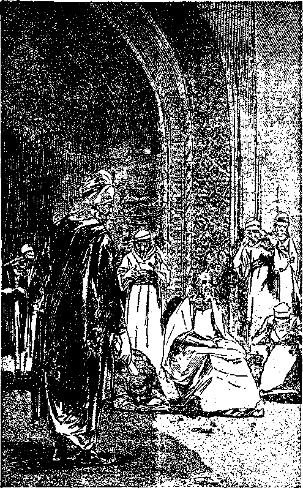
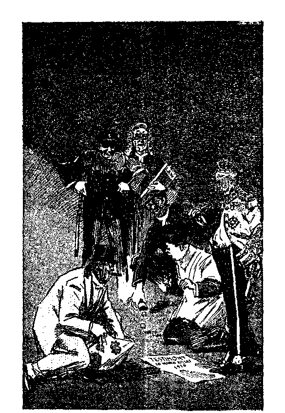
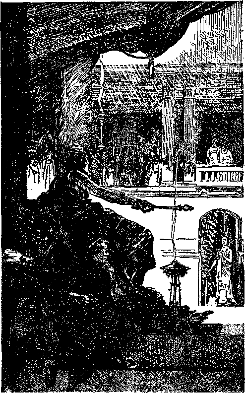
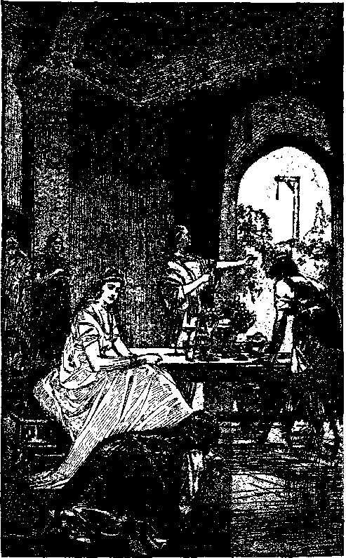
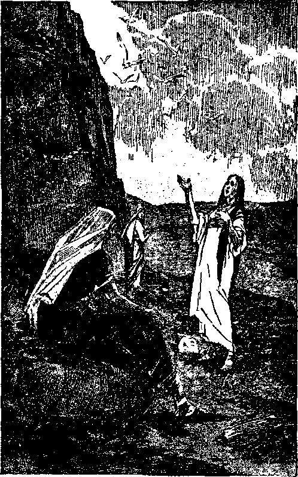
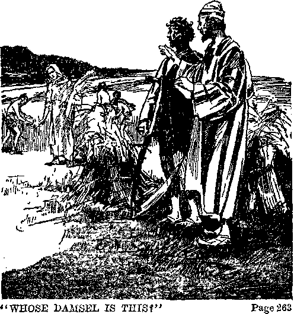
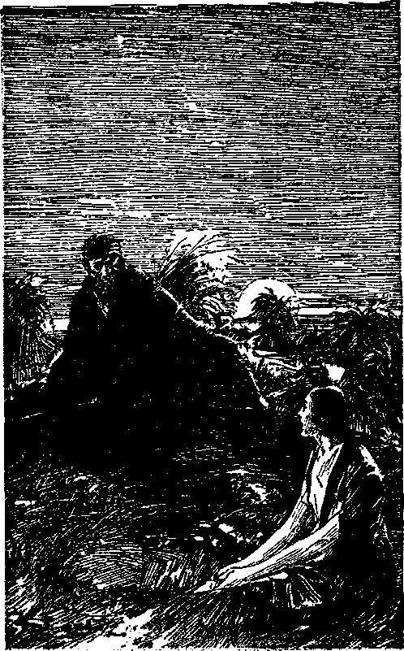
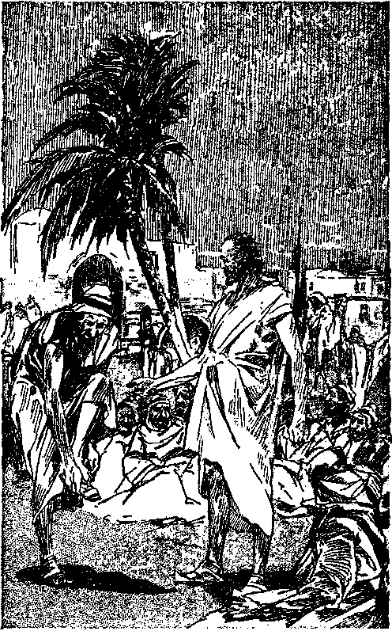

The explanation of two divinely directed prophetic dramas recorded in the Biblical books of
and
and disclosing Jehovah’s provision for the protection and preservation of those who love him, and also showing the vindication of his Word and name.
COMMENTS BY J. F. RUTHERFORD Author of Creation Deliverance Reconciliation Government Prophecy Light and other books.
First printing 1,000,000 copies
Publishers
BIBLE AND TRACT SOCIETY
Intebnational Bible Students Association Bbooklyn, New Yobk, U, S. A.
Also
London, Toronto, Strathfleld, Cape Town, Berne, Magdeburg, and in other countries
TO JEHOVAH "The hope of the righteous” This book is dedicated "Jehovah is my rock, and my fortress, and my deliverer; my God, my rock, in whom I will take refuge; my shield, and the horn of my salvation, my high tower, I will call npon Jehovah, who is worthy to be praised: so shall I be saved from mine enemies.”—Ps. 18:2, 3, A.R.V.
Copyrighted 1932 by J.F. RUTHERFORD
Made in U.S.A,
JEHOVAH’S opposer and arch enemy is Satan. From the time of Eden onward Satan has endeavored to interfere with God’s purposes. Jehovah gave his word that he would in his own due time bring forth a people that will do right and be faithful and true to him. Every human creature that has honestly tried to be true and faithful to Jehovah God has been assaulted and persecuted by Satan and his agents. Being more powerful than human creatures Satan would have destroyed all of those faithful to God except for the protection Jehovah has given them. Preservation means to hedge about, guard and protect against the wicked assaults of Satan. This Jehovah God does for those who are faithful and true to him.
The book of Esther, a part of the Bible, and now due to be understood, is a beautiful and striking illustration of Jehovah God’s protecting care of those who are steadfast in their devotion to righteousness and who serve God with a pure heart. The book of Esther is a record of a prophetic drama directed by Jehovah to show his faithful witnesses at the end of the world his provision made for their protection and complete preservation, and is therefore a comfort to all such.
That book of the Bible called Ruth is also a record of a wonderful prophetic drama directed by Jehovah God. Ruth, Naomi, and Boaz are the principal players in that drama, which clear-6 ly shows Jehovah’s provision for the protection and preservation from all evil of those who love him. The players in that drama did not understand its purpose at the time, and no man since then could possibly understand the meaning thereof until God’s due time for it to be understood.
The books of Esther and Ruth are divine records of two outstanding prophetic dramas set forth in the Word of God for the instruction of those on earth at the end of the world, where we now are, and who really love and serve Jehovah. Because the due time for the understanding of these great truths therein contained has come it seems pleasing to Jehovah to set forth in this volume the explanation of both of such books. All who are anxious to see the complete triumph of righteousness on the earth, and especially those who are devoted to God and to his kingdom, will read this book PRESERVATION with the keenest interest and with much profit.
The final conflict between the wicked and the righteous is just at hand, and in this great crisis no man could preserve himself; but those who fully trust in Jehovah He will preserve. Just now we are in “that day” of the Lord; hence to those who diligently seek to know the will of God, and who unselfishly obey and serve him, he says: “The Lord shall preserve thee from all evil: he shall preserve thy soul. The Lord shall preserve thy going out, and thy coming in, from this time forth, and even for evermore.”—Ps. 121:7,8.
PRESERVATION
[BLANK]
CHAPTER I
JEHOVAH chose the children of Israel as and for his own peculiar people. He made a covenant with them and gave that people an opportunity to prove their faithfulness to him and to maintain their integrity toward him. For more than eighteen centuries Jehovah dealt with that people to the exclusion of all others. Because of their unfaithfulness to their covenant the Israelites, which are also called Jews, were carried away in captivity to the land of Babylon. A small number of the Jews were faithful to God and were permitted to return to their native land. These faithful ones the Scriptures describe as “the remnant”.
Jehovah has caused the gospel of his kingdom to be preached to the people of certain nations over a period of more than eighteen centuries. Many of the people who have heard this message of truth have voluntarily entered into a covenant with God, agreeing to do his will. The greater number of such have been unfaithful to God and to their covenant and have fallen away to the world, which is under the control of Satan the Devil and which the Scriptures desige nate under the term “Babylon”, or Satan’s organization. A comparatively small number of those who made a covenant to do God’s will have maintained their integrity toward Jehovah and remained faithful to him. These faithful ones are permitted to escape from Babylon, which is Satan’s organization, and to be brought into Jehovah’s organization. These faithful ones the Scriptures designate as “the remnant” now on the earth. These who go to make np the remnant company are also called by the Lord the “faithful and wise servant” and are by the grace of Jehovah appointed to be and designated as Jehovah’s witnesses. (Isa. 43:10-12) Because these of the remnant obey God and deliver the testimony of Jesus Christ they incur the ill will and hatred of all the agents of Satan, that old Dragon, the Devil. (Rev. 12:17) Jehovah has laid upon the remnant the obligation of delivering his message of truth to the people who desire to know and to understand his Word. Because the remnant love Jehovah they delight to obey his commandments, even though by so doing they are subjected to great persecution and danger. For the encouragement of those who love him Jehovah God says: “Ye lovers of Jehovah! be haters of wrong; he preserveth the lives of his men of loving-kindness, from the hand of the lawless will he rescue them.”—Fs. 97:10, Roth.
At the present time Jehovah is causing his message of truth to be delivered to the people, particularly within the realms of “Christendom”, in order that the people may have an opportunity to know who is the Supreme One and in order that the people may take their stand either on the side of the wicked one Satan or on the side of the great Jehovah God. That all may know what will be the final result Jehovah plainly sets forth in his Word his judgment: “The Lord preserveth all them that love him: but all the wicked will he destroy.”—Ps. 145: 20.
Jehovah employs his own good way to conceal his purposes until his due time to make them known. Before that time no one can understand them. His purposes concerning man are set forth in his Word and are often stated in such cryptic language that no man can decipher them. In his due time Jehovah brings to pass events in fulfilment of these dark sayings and then permits those who love him to understand them.
Jehovah caused the Bible to be written by his holy men of old and they wrote as the spirit of God moved them to write. The Bible is therefore his Word of truth. Since Jehovah supervised the writing of the Scriptures, it must be conceded that he also supervised the placing in the Bible the books that properly belong there. The fact that the Bible has successfully withstood all assaults of its enemies is corroborative proof that what it contains is there by the will of God for the purpose of making known his course of action toward men.
The canonicity of the book of Esther is disputed by many critics. A book that is entitled to a place in the Bible is called canonical. A book not entitled to a place in the Bible is called uncanonical, Title to a place in the Bible is canonicity. The Old Testament canon contains the book of Esther, and there is much proof that the arrangement of that canon was made in the time of Ezra and Nehemiah, both of whom were God’s holy prophets. The book of Esther is a part of the Bible; and just as certainly as it was placed there by the will of God, just that certainly it is authentically a part of the Bible.
Commentators who have professed to be followers of Christ and servants of God have called into question the authenticity of the book of Esther; hence the matter is here noticed. Melito of Sardus and Gregory of Nazianzus omitted from their list of canonical books the book of Esther. Athanasius classed it with the non-canonical books, and Luther denounced it. These men were thought to be God’s representatives on earth. Maybe they were not. Opposition to the canonicity of the book of Esther is based mainly on the fact that the name of God does not appear in it even once. Another author says concerning the book of Esther:
“The objections urged against the canonicity of the book of Esther resolve themselves principally into these three: (1) That it breathes a spirit of narrow, selfish, national pride and vindictiveness, very much akin to that displayed by the later Jews, but wholly alien from the spirit which pervades the acknowledged books of the Old Testament; (2) that its untheoeratic character is manifested in the total omission in it of the name of God, and of any reference to the divine providence and care of Israel; and (3) that many parts of it are so incredible as to give it the appearance rather of a fiction or romance than the character of a true history.” —McClintock and Strong’s Cycl.
Satan probably concluded that some day the book of Esther would be understood by people on the earth and that the correct understanding thereof would not look well for Satan and his ecclesiastical representatives and that he could use his clergy to a better advantage than anyone else to discredit the book and thus keep it out of the minds of the people. The original and fertile liar would therefore hypocritically put into the minds of such men to say that the book does not even mention the name of God and therefore it must be mythological or legendary in its origin; and so they have said. For these men to call in question the book would afford and has afforded an opportunity for intellectual display of the mental capacity of men of world renown. No one could give a satisfactory explanation of the book; hence the critics seem to have the best of the argument.
But the book of Esther is in the Bible, and certainly there by the will of God. If we agree that it is properly in the Bible, then the purpose of its being put there must be determined from the Bible itself. The critical or hypocritical opinions expressed by men could have no weight as to its authenticity. One part of the inspired divine record reads: “For whatsoever things were written aforetime were written for our learning, that we through patience and comfort of the scriptures might have hope.”—Rom. 15:4.
The most prominent figures mentioned in the hook of Esther were Jews, or Israelites, and concerning the things that happened to that people it is written: “Now all these things happened unto them for ensamples: and they are written for our admonition, upon whom the ends of the world are come.” (1 Cor. 10:11) Furthermore it is written, in 2 Timothy 3:16,17, R.V.: “Every scripture inspired of God is also profitable for teaching, for reproof, for correction, for instruction which is in righteousness: that the man of God may be complete, furnished completely unto every good work.”
From these scriptures and the facts now known to Christians also, we must conclude that the book of Esther is a part of God’s Word; that it was written aforetime for the aid, comfort and encouragement of God’s people now on earth because we are at the end of the world, and that which is contained therein is good and profitable for instruction to the people of God that such may be fully equipped to perform the duties that Jehovah has laid upon them. For these reasons the book of Esther will be considered somewhat in detail, and it is hoped that those who love the Lord may be aided and encouraged thereby.
It seems quite certain that the book of Esther is the divine record of a great drama or living picture arranged, supervised and directed by Jehovah God to particularly foreshadow the things that are now coming to pass at the end of the world. Knowing the end from the beginning Jehovah has held back the meaning of this great drama until the time when his people on earth are much in need of aid and encouragement. The anointed are warned that at this very time Satan, who has been cast out of heaven, is very mad at the remnant and goes forth to make war against them to whom is committed the testimony of Jesus Christ. That testimony must now be delivered and those of the remnant delight to obey the commandments of the Most High in delivering it. (Rev. 12:17) This is further evidence that Jehovah will preserve all them that love him and that continue faithful to him, and he discloses the means employed, as shown by the facts set forth in the drama prepared long ago.
Jehovah makes known to man the meaning of his Word in his due time, and not according to the work or wisdom of man. It is Jehovah’s gracious provision. He who looks for some human creature to make the Bible plain will not understand it. When God’s people do receive an understanding of the Scriptures they should be glad to give all the glory and honor to Jehovah, where it properly belongs.
ESTHER AND MORDECAI
The Jews were carried away captive, in 606 B.C., to Babylon, which was then the world empire. Babylon was afterwards overthrown by the Medes and Persians, in 538 B.C. About two years later, in 536 B.C., Cyrus issued the memorable decree permitting the Jews to return to Jerusalem, or Zion, and to rebuild the temple of the Lord there. Afterwards, during the reign of the Persian monarch Ahasuerus, and during the period from 485 to 465 B.C., the events in the book of Esther occurred.
The empire under Ahasuerus’ reign extended from India to Ethiopia, embracing one hundred and twenty-seven provinces, including Palestine, The -Jews were scattered throughout these various provinces. Shushan was the royal city and the residence of Ahasuerus the king. It was at that place that Mordecai resided with his young cousin Esther. Vashti the queen refused to obey the commandment of the king to appear before him at his feast, and was thereafter by royal decree for ever debarred from her position as queen. The king then set in motion his organization to find within his realm some fair maiden to be made his queen. Mordecai the Jew began to groom his young cousin Esther for the place of first lady of the realm. At that time it was not known to the king or any of his officers that either Mordecai or Esther was Jewish. Such is the general historical setting of the drama, all of which it now appears was arranged and directed by Jehovah through his duly constituted servants or angels.
This great drama, laid chiefly in the capital city and palace of the king of the Medo-Persian empire, involved both God’s chosen people and those of Satan’s organization. To aid the student in the examination thereof the names of the principal players are here first given with a brief statement of what the name of each one particularly represents or means and what each player foreshadowed or represented.
THE PLAYERS
Esther, the Jewish maiden, who became queen, pictured God’s remnant now on earth from the standpoint of being those who are anointed and designated to the office of members of the bride of Christ.
Mordecai, a devout Jew and cousin and counselor of Esther, pictured the remnant of God’s people now on earth from the viewpoint of being members of God’s “faithful servant” class to whom is committed the testimony of Jesus Christ, or kingdom interests, and which was committed to this class when Jesus appeared at the temple, as shown in the parable of the talents.—Matt. 25:14-30.
Ahasuerus, the king of Persia, pictured royal or regal power and office in the abstract, and he played a double part or double role. Sometimes in the drama he pictured Satan the rebel god, and then again he pictured the Lord Jesus Christ who is earth’s rightful King, and sometimes he pictured Jehovah. It is the royal office that must be kept in mind.
Vashti the first queen pictured that religious class including the Pharisees and those in modern days who were likewise once in line for the kingdom but who do not qualify for the kingdom because of insubordination or lawlessness.
Haman pictured modern Pharisees or the so-called “Christian” clergy, and the “evil servant” class, “the man of sin,” “the son of perdition.” —Matt. 24:48-51; 2 Thess. 2:3-12.
The Jews scattered through the one hundred and twenty-seven provinces of the empire also pictured God’s people of the present time who are scattered throughout the whole earth. Esther and Mordecai were merely representative members of the Jewish people.
NAMES
Although considerable space is required to do so, it seems profitable to here give consideration to the meaning of the names of each of the principal players. It may always be observed that the name of a man or woman set forth in the Bible has a particular meaning which throws light upon the scriptures relating thereto. The great Creator reveals himself under different names, each one of which has a peculiar significance. The names and titles of the Lord Jesus Christ are very significant, and it is reasonable to expect that the meaning of names Jehovah has given to creatures, as set forth in the Bible, is also important in the examination of the text.
Critics of the book of Esther claim that Esther is the name of an Assyrian goddess; but this claim is worthy of nothing more than a passing notice. The word "As" is the eastern name for myrtle, and it is suggested by some, and with much reason, that the name Esther is the Jewish equivalent of “As-tur”, being “fresh myrtle”. Her Hebrew name, as given in the Bible, is Hadassah, and means “myrtle”, or “joy”. Had she been presented to the king under that name, that would have at once disclosed her as a Jewess and would doubtless have destroyed her chances of becoming the queen.
Mordecai, who was her cousin and her guardian by adoption, changed her name to its eastern equivalent “As-tur”, or Esther, for the manifest purpose of concealing her identity until the proper time to reveal it. Mordecai resided in the, capital city of the Persian empire, and with him was his young cousin Esther. Her father and mother were dead, and Mordecai had adopted Esther and given her a guardian’s care. “And he brought up Hadassah, that is, Esther, his uncle’s daughter; for she had neither father nor mother, and the maid was fair and beautiful ; whom Mordecai, when her father and mother were dead, took for his own daughter."— Chapter 2:7.
Doubtless the angel of the Lord put it into the mind of Mordecai to conceal the identity of Esther for the time being that the purpose of Jehovah might be accomplished. (2:10) It seems certain, therefore, that Mordecai is the one who changed the name of Hadassah to that of Esther. The name Hadassah, or Esther, meaning “myrtle”, is significant. In the Scriptures the myrtle is connected w’ith the harvest time, with restoration and joy, and with the mount of Olives.
The following texts are in support thereof: “And they found written in the law which the Lord had commanded by Moses, that the children of Israel should dwell in booths in the feast of the seventh month: and that they should publish and proclaim in all their cities, and in Jerusalem, saying, Go forth unto the mount, and fetch olive branches, and pine branches, and myrtle branches, and palm branches, and branches of thick trees, to make booths, as it is written. So the people went forth, and brought them, and made themselves booths, every one upon the roof of his house, and in their courts, and in the courts of the house of God, and in the street of the water gate, and in the street of the gate of Ephraim. And all the congregation of them that were come again out of the captivity made booths, and sat under the booths: for since the days of Jeshua the son of Nun unto that day had not the children of Israel done so. And there was very great gladness.”—Neh. 8:14-17.
“I will plant in the wilderness the cedar, the shittah tree, and the myrtle, and the oil tree; I will set in the desert the fir tree, and the pine, and the box tree together; that they may see, and know, and consider, and understand together, that the hand of the Lord hath done this, and the Holy One of Israel hath created it.”— Isa. 41:19, 20.
“I saw by night, and behold a man riding upon a red horse, and he stood among the myrtle trees that wore in the bottom; and behind him were there red horses, speclded, and white. Then said I, 0 my lord, what are these? And the angel that talked with me said unto me, I will shew thee what these be. And the man that stood among the myrtle trees answered and said, These are they whom the Lord hath sent to walk to and fro through the earth. And they answered the angel of the Lord that stood among the myrtle trees, and said, We have walked to and fro through the earth, and, behold, all the earth sitteth still, and is at rest.” —Zech. 1:8-11.
It is the remnant that with joy now sing the praises of Jehovah’s name. These have to do with the harvest and the restoration of the truth by joyfully declaring God’s purposes in relation thereto, and it is this class that is in line for the high position of membership in the bride of Christ.
Hadassah, that is, Esther, was the daughter of Abihail, whose name means "father of strength”. Jehovah’s prophet, in Psalm 45:10, 13, describes a class as the “daughter” class of great beauty and which are children of Jehovah, in whom is “everlasting strength”. (Isa. 26:4) During the absence of Jesus Christ in heaven those in line for membership in the bride were left as orphans, the holy spirit being sent to act as guardian and guide for such during that period. (John 14:18, margin) When the Lord Jesus returned he found a faithful class ministering to their brethren and looking after the kingdom interests. That class he approved, and the Lord constituted such collectively as the “faithful and wise servant” class to whom are committed his goods or kingdom interests. (Matt. 24:44-47) Now it was this “faithful servant” class, as the facts show, that the Lord used to minister to those coming to a knowledge of the truth from and after 1918 and who responded to the call for the kingdom and many of whom have been approved and brought into the temple and anointed as members of the bride of Christ.
Esther, therefore, seems to picture the faith* ful ones who responded to the call for the kingdom after the coming of the Lord to Jehovah’s temple in 1918, who entered the royal service of the Lord and who proved worthy and are chosen and anointed for the kingdom. This class seems to be specially mentioned by the prophecy in Psalm forty-five, which says: “Hearken, 0 daughter, and consider, and incline thine ear; forget also thine own people, and thy father’s house; so shall the King greatly desire thy beauty.”
Since the coming of the Lord to his temple (Mal. 3:1-3) many have responded to the call for the kingdom and have joyfully entered the service. These were specially ministered to by others who were found faithful at the time of the coming of the Lord to Jehovah’s temple. Those who responded to the call to the kingdom after 1922 entered the contest for membership as a part of the bride of Christ, but they quickly learned that “character development”, as that had been understood, is not the required qualification, but that faithfulness and complete devotion to God and his service are required of those who qualify. As Mordecai was the guardian of Esther and looked after her interests, so those of the Lord’s people who had been longer in the service of the Lord and had proven faithful up to the time of the coming of the Lord to his temple had, by the Lord’s grace, some special care in aiding the ones who came to a knowledge of the truth and responded to the call after 1922.
Esther being a cousin of Mordecai, it is certain that she was of the tribe of Benjamin. (See chapter 2:5.) When Solomon died there was a great falling away amongst the Israelites and all forsook the tribe of Judah except the tribe of Benjamin. Judah was the kingdom tribe, and the tribe of Benjamin stood faithfully by Judah. About the time of the Lord’s coming to his temple in 1918 there began a great falling away of those who had entered into the covenant with Jehovah through Christ, and at that time the “man of sin” began to be made manifest. Esther properly pictures a part of the remnant class that has steadfastly resisted the influence of those who have fallen away and who appear as opposers. As the tribe of Benjamin stood by and faithfully supported the tribe of Judah, so Esther, a Benjamite, pictures those coming into the covenant after 1922 who showed complete devotion to the kingdom of God and its interests and a determination to hold fast “through thick and thin”.
Mordecai was a great-grandson of Kish, who had been carried away from Jerusalem with the captivity of Jehoiachin the king of Judah by Nebuchadnezzar the king of Babylon in the year 617 B.C. (2 Ki. 24: 8-16) It has been contended that Mordecai was carried away in that captivity; but that could not have been true, because that would have made him too old for the time of the events recorded in the book of Esther. Mordecai manifestly was a vigorous and active man of keen intellect at that time, as the facts show. He must have been in the royal service at the palace and fully equipped to perform the duties imposed upon him.
The record is: “Now in Shushan the palace there was a certain Jew, whose name was Mordecai, the son of Jair, the son of Shimei, the son of Kish, a Benjamite, who had been carried away from Jerusalem with the captivity which had been carried away with Jeconiah king of Judah, whom Nebuchadnezzar the king of Babylon had carried away.” (2:5,6) The very language of the text, particularly as appears in the Hebrew grammar, shows that it was Kish that was mentioned as being carried away in the captivity and that Kish was the grandfather of Mordecai. Although Mordecai was a Benjamite he is called in the text a Judean. Probably this is due to the fact that his grandfather was carried away with the Judean king and that the members of the family, including Mordecai, had been faithful to the tribe of Judah, and he was therefore classed as a Judean or Jew.
Again the critics make another mistake in claiming that the name Mordecai means “dedicated to Mars or Merodach”, a name that is limited to the Devil’s organization. Such claim is both unreasonable and inconsistent. A faithful Jew or Benjamite would hardly bear the name of one of the Devil’s organization. Others claim that the name Mordecai is from the Hebrew word Mor meaning “myrrh” and therefore that Mordecai means “like pure myrrh or bruised myrrh”. This claim seems to be both reasonable and consistent with what God used Mordecai to do. Myrrh was one of the ingredients of the holy anointing oil. (See Exodus 30: 23-25.) The garments of God’s anointed King smelled of myrrh and aloes and cassia. (Ps. 45:8) Oil of myrrh was used in the purification of Esther to make her ready that she might be qualified for presentation to the king.—2:3,12.
The word “Smyrna”, as used in The Revelation and applied to one of the congregations, means the same as “myrrh”. The message of the Lord addressed to the church at Smyrna contained not one word of reproof or rebuke. (Rev. 2:8-11) Therefore when the Lord came to his temple and took an account with those who are in the covenant he approved Smyrna and constituted that class his “faithful and wise servant” class, to whom he committed all the kingdom interests on earth, represented by “his goods”. (Matt. 24:47) Those who go to make up this class endure much opposition and tribulation, yet always remain true and steadfast to the Lord. Mordecai’s name therefore seems peculiarly significant as meaning “like pure myrrh or bruised myrrh”. That further suggests that he pictured in the drama the Lord’s “faithful and wise servant” class approved at the time of the Lord’s coming to his temple and which class has suffered much opposition, the joyful bearing of which is pleasing to the Lord.
The fact that Mordecai was a Benjamite shows that he was devoted to and was true to the kingdom tribe of Judah, which foreshadows God’s real kingdom umkr Christ. He was called a “Jew”, which means that he was one who gives praise to Jehovah God. He was employed at the royal palace before the happening of the events recorded in this drama, and therefore before his cousin Hadassah, that is, Esther, received an invitation to enter the contest for the exalted place of queen to the mighty ruler.
Mordecai had adopted, cared for, taught and brought up Esther, and without a doubt had fully instructed her concerning her relationship to Jehovah God", because such was the duty of the parent in every Hebrew home. The names of his father and grandfathers are put in the divine record manifestly for a purpose. His father’s name was Jair, meaning “my light; who diffuses light, or who is enlightened”. His grandfather’s name was Shimei, meaning that one “who hears or obeys or has heard; my name or fame”. His great-grandfather was named Kish, meaning “hard, difficult”. The significance of these names seems to say of Mordecai that he was enlightened by Jehovah and diffused that light and joy to others; that he heard and obeyed Jehovah and was zealous for the name and fame of the Most High; and for this cause he endured much hardness and many difficulties. In so doing he was, as his name signifies, like “bruised myrrh” or sweet perfume. This suggests that he was a sweet savor unto the Lord. This is another reason why he seems to fully picture the “good and faithful servant” (Matt. 25:21), who faithfully cared for the kingdom interests of the Lord; and the “faithful and wise servant” class, which also aids, nourishes and comforts those who respond to the kingdom call and who have thus responded since the coming of the great Judge to the temple of Jehovah.
Mordecai was the guardian of Esther in looking after her interests before her call by the emperor. When she responded to that call and began to prepare for the high position of queen, from that time forward the life interests of both Mordecai and Esther were identical and they were closely and inseparably bound together. Mark how well this corresponds to the relationship of those found faithful at the time of the coming of the Lord to his temple and those who responded to the call thereafter. Hence after 1918, and particularly after 1922, Esther and Mordecai pictured or foreshadowed one and the same class, to wit, God’s remnant. The distinction between them is this, that Esther pictured the remnant from the viewpoint of being those who were called and anointed as members of the bride of Christ after the Lord comes to his temple, while Mordecai pictured those of the remnant from the viewpoint of being members of God’s “faithful servant” class to whom are committed the kingdom interests.—Isa. 42:1-6; Matt. 24:47.
It should here be noted that the prophetic acts recorded in the book of Esther took place after Babylon had fallen and after the edict of Cyrus for the rebuilding of Jehovah’s temple at Zion. (Ezra 1:1-5) Hence it was after Jehovah returned his people from the captivity of Babylon and began the building up of Zion that the prophetic picture began to be fulfilled. The physical facts in fulfilment of the prophetic picture therefore show that the new King, Christ, was placed upon the throne by Jehovah in 1914; that Babylon (Satan’s organization in heaven) fell to earth by Satan and his angels’ being cast out of heaven; and that then the Lord comes to the temple and begins to build up Zion, appears in his glory to the temple class, and discloses the glory of Jehovah, and those of the temple greatly rejoice. (Ps. 102:16) Babylon fell between 1914 and some time prior to 1918, and it was about that time that the Lord’s people were released from the captivity of Babylon.—Ps. 126:1-3.
Therefore it was after Christ, “the messenger of the covenant,” came to God’s temple that the picture of Esther began to be fulfilled. (Mal. 3:1) That is the real reason why it could not be understood sooner. Now the Lord at once makes known to his people an understanding of some of these things. He permits his remnant to see some part of the fulfilment of the picture and now there are other portions of this prophetic picture to be fulfilled. Hence says the Lord: “Behold, the former things are come to pass, and new things do I declare; before they spring forth I tell you of them.”—Isa. 42: 9.
The dramatic picture in Esther is corroborative proof that Satan’s great and final attempt to destroy God’s true people will take place after the casting of Satan out of heaven and after the coming of the Lord to his temple. As the Jews were scattered throughout one hundred and twenty-seven provinces of the Persian empire, which included Palestine, so the Lord’s true people are today scattered throughout the whole world.
THE KING
Both the Scriptures and the historical facts clearly prove that the king Ahasuerus was Xerxes who began to reign at the age of thirty-four in the year 485 B.C. and who died in 465 B.C. Xerxes is understood to mean “lion king”. His empire was “great” because he “reigned from India even unto Ethiopia”, having one hundred and twenty-seven provinces. (1:1, 20) He was the chief servant of Satan in the fourth world empire and was therefore a direct representative of the Devil himself.
In the first part of the drama the king is shown as unwittingly being employed as a deadly enemy of God’s chosen people, the Jews. In another part he is shown as the friend and promoter of the life interests of the Jews. He therefore played a double role. When he leaned to the suggestions and influences of Haman and acted thereupon he represented the Devil; when he heard the plea of Esther or Mordecai and acted in harmony therewith he represented the Lord. Hence the conclusion is that Ahasuerus the king pictured regal or royal power in the abstract. This suggests that the rulers of the evil world are not knowingly and willingly acting for the Devil but that they are induced so to do by influence brought to bear on them and that under certain conditions the Lord might use such rulers even in behalf of his own people.
Ahasuerus was the successor of Cyrus who overthrew Babylon and released the Jews from captivity and provided for the rebuilding of the temple. He made the faithful Jewess his queen and raised a Jew to the premiership of his empire. In these and other matters, therefore, the king pictured royal power and office, foreshadowing Christ, earth’s rightful king. Ahasuerus was attended and served by seven chamberlains and by seven wise men or princes. When he was playing the role of Satan these seem to represent seven heads of the beast which came up out of the sea, and the seven heads of the great red dragon. (Rev. 12:3; 13:1, 2) When he was playing the role of righteousness, these seven servants seem to picture the seven stars in the right hand of the Lord Jesus Christ, which are his angels. (Rev. 1:16, 20) Shushan, the name of the palace, to the Jews meant “lily, rose or joy”. Since the return of the Lord and the gathering together unto himself of his people, his palace is seen to be the capitol of Jehovah’s universal organization, and to God’s people it is now a place of joy and is likened unto a beautiful lily and the sweet rose.
VASHTI
The name of the queen, Vashti, means “beautiful woman”. She had the royal crown and, had she pursued a lawful course, could have held fast her crown. Because of her selfishness and insistence upon her supposed rights, and because of her refusal to be subject to the king, she lost her crown and her place in the kingdom. Therefore Vashti pictures that class of persons who were once in line for the kingdom and lose it.
Such was true of the Pharisees when Jesus was on earth (Matt. 21:43), and is particularly true at the end of the world when the Lord is taking out the last members of his kingdom, and when he comes to his temple for examination. Jehovah was gracious to all such and gave them the truth. They were called to the kingdom and were in line for a place in the kingdom, and had the opportunity of forever wearing the heavenly crown. They claimed to be members of the body of Christ and therefore the bride or queen. But instead of being obedient they insisted upon their own rights to be free and untrammeled in the way they should go. They refused to get in line and put on the wedding garments. (Matt. 22:11,12) They refused to do the work of the Lord in his appointed way and insisted they would do it in their own way. They responded to the call for the kingdom, but with a selfish motive. They refused to be ‘subject to the powers that be’ in God’s organization, even claiming that the Scriptural reference thereto means the earthly rulers. (Rom. 13:1; Rev. 19:9) Because they held not fast that which they had, their crown was taken away. (Rev. 3:11) Vashti, therefore, clearly represents the spirit-begotten and called ones who do not qualify for the kingdom, because of lawlessness, insubordination, selfishness, ‘failing to hold the Head,’ becoming offended, and who because thereof are gathered out and do not receive the anointing.—Matt. 13:41.
HAMAN
The name Haman, according to the Hebrew, means “noise, tumult, or him that prepares”. He is called the son of Hammedatha, meaning “he that troubles the law”. (3:1) He was a trouble-maker. He is called the “Agagite”, such being the title of all the Amalekite kings. (Num. 24:7; 1 Sam. 15:8,9) Being an Amalekite he was therefore a descendant of Esau by a heathen woman. (Gen. 36:10-12) Because of the ill treatment of the Jews by the Amalekites when the Jews were marching out of Egypt, God pronounced a curse upon the Amalekites and swore that he would have war with them from generation to generation. (Ex. 17:8-16; 1 Sam. 15:2,3) Necessarily Haman was included under that curse.
Haman was proud and boastful. He boasted of his glory and of his riches and the multitude of his children, which included, of course, his ten sons. (9:7-10) He had his own “wise men” and considered himself a special favorite of the king and thereby expressed the spirit of the false Christ. (6:13) He exalted himself against God’s people the Jews and conspired to have their blood shed and them destroyed. Haman, therefore, clearly pictures the modern Pharisees, the so-called “Christian” clergy, including the “evil servant” class, “the man of sin,” “the son of perdition,” who, like the Amalekites and Judas, are given over to death and destruction and perdition as God’s enemies. As the Amalekites opposed the march of God’s people out of Egypt, so the clergy and the “evil servant” class, “the man of sin,” join in a concerted action or assault upon God's people in this day, while they are inarching out of ‘spiritual Egypt’ to the kingdom of God. Haman was evidently in the service of the king before Esther was called to the throne. It was after she was chosen that he was advanced by the king. This may mean that the “man of sin” joins forces with the clergy in an active assault upon the people of God after the remnant class is anointed and actively engage in the service of the Lord.
THE JEWS
Haman sneeringly referred to the Jews as ‘a certain people scattered abroad and dispersed among the peoples of all the provinces of the kingdom, whose laws were different and who kept not the king’s law and therefore should not be permitted to live’. (3:8) The Jews, therefore, also pictured God’s remnant as did Esther and Mordecai, who were really representatives of the entire company. Haman considered them all as one and ‘scorned to lay hands on Mordecai alone’ after he learned that Mordecai was a Jew. He wanted the blood of them all. Mordecai considered both Esther and the Jews as one; hence he urged her to act. (4:13) The Jews, therefore, pictured the remnant of God’s people now on earth from the viewpoint of being a peculiar people scattered throughout the world amidst Satan’s organization but who are no part of it. The Devil’s ecclesiastical element (and which element renders him such willing
service) now seeks the lifeblood of God’s people on earth.
The statements here made are general. The subject matter is of such importance that a careful examination of the entire book of Esther is deemed proper.
THE KING’S FEAST
Jehovah has given his promise that he will preserve all them that love him. That means two things certain, to wit: that the enemy will make a desperate attempt to destroy those who love God, and that God will thwart the enemy in his wicked purpose and bring the faithful through to victory. "He [shall] send forth judgment unto victory. And in his name shall the [nations] trust.” (Matt. 12: 20, 21) Seeing now that God is pleased to give this assurance to his people in advance, every one of the anointed should go forward courageously, unselfishly, and with joy. A great event is about to come to pass, and Jehovah’s name will be vindicated. Happy are they that have any part in his service during such vindication.
Up to this point a general view of the book of Esther is taken. Now let us consider it in a more critical way. The drama opens with the king seated upon his throne. ‘The king sat upon the throne of his kingdom, which was in Shu-shan the palace, in the third year of his reign, and he made a feast unto all his princes and his servants.’ It was in the autumn of 1914 that God placed his King, Christ Jesus, upon his holy hill in Zion and sent him forth to rule midst his enemies. (Ps. 2:6; 110: 2) Then and there the Lord took his power as the world’s rightful Ruler. In the third year of his reign he made a feast to his princes and servants. The first work of Christ Jesus, supported by his heavenly host, was to engage Satan in a war and cast the enemy out of heaven and down to the earth. Following that victory would be an appropriate time for Christ to make a feast for his princes and his myriad of holy angels, as is indicated by the Scriptures. (Rev. 12: 9-12) Christ Jesus, the Lord of heaven and earth, had entered into his joy because he was proceeding under Jehovah’s command to vindicate the name of his Father. This may indicate approximately the length of time the fight in heaven occupied, since the feast was had in the third year of the King’s reign. Logically the feast would follow shortly after the victory.
King Ahasuerus invited all his princes or rulers to his feast. While he was in the midst of this feast with his one hundred and twentyseven governors a climax in the life of Vashti the queen was reached. “In those days, when the king Ahasuerus sat on the throne of his kingdom, which was in Shushan the palace.” This would correspond to the time when those spirit-begotten ones on earth were called to the marriage supper. (Rev. 19:9) Vashti the queen had made a feast for the women of the royal palace and they were feasting together. At a certain time of the king’s feast a conflict a.rose in the palace between the king and Vashti because. of Vashti’s stubbornness. “Vashti the queen made a feast for the women in the royal house which belonged to king Ahasuerus. On the seventh day, when the heart of the king was merry with wine, he commanded Mehuman, Biztha, Harbona, Bigtha, and Abagtha, Zethar, and Carcas, the seven chamberlains that served in the presence of Ahasuerus the king, to bring Vashti the queen before the king, with the crown royal, to shew the people and the princes her beauty: for she was fair to look on. But the queen Vashti refused to come at the king’s commandment by his chamberlains: therefore was the king very wroth, and his anger burned in him.”—1:9-12.
The fact that the king was indulging in wine and was merry shows that it was a time of rejoicing. Wine is a symbol of gladness of the heart. (Ps. 104:15) That would correspond to the time of rejoicing that follows the casting of Satan out of heaven, and therefore the time when all in the covenant with the King were commanded to rejoice and be glad. (Rev. 12:12) It was in the latter part of 1917 or the beginning of 1918 that the conflict arose between those who were in the covenant of sacrifice with the Lord. Those who had not received "the love of the truth” made a feast of their own, separate and apart from those who were really devoted to the Lord the King. This selfish company who had made their own feast with a selfish motive accepted the truth which they had previously received and felicitated each other and rejoiced in the fact that they were standing together as the followers and pupils of a man who had been taken away from them. They were not willing to unselfishly be obedient to the Lord’s “lightnings”.—Rev. 11:19; 4:5.
The command of the king was to bring Vashti before him. This was a test of her lawful submission to the will of the king. Her refusal to obey was a serious act of insubordination. During the period of rejoicing following the casting of Satan out of heaven the Lord suddenly appeared at his temple. He would then have those who were in line for the kingdom and for a place upon the throne to be brought before him that they might take their stand wholly on the side of the Lord and thus display to the world their ‘beauty of holiness to the Lord’, showing a complete devotion to him and his cause. Such was a test, and those obeying the commandment would demonstrate their integrity toward God.
“0 come, let us worship and bow down: let us kneel before the Lord our Maker.” (Ps. 95: 6) “Give unto the Lord the glory due unto his name: bring an offering, and come into his courts.” (Ps. 96: 8) Such test of humility was in order before the approval and exaltation in the temple. Concerning those receiving the call to the kingdom it is written: “God resisteth the proud, and giveth [his] grace to the humble. Humble yourselves therefore under the mighty hand of God, that he may exalt you in due time.” (1 Pet. 5: 5,6) Those who would refuse thus to humble themselves before the Lord under such a test would be separated from the faithful. The separation of the unfaithful from the faithful began to take place approximately at the time of the coining of the Lord to his temple. •—Matt. 25:14-30.
Vashti, by refusing to appear before the king and exhibit herself, refused to be made a 'theater before men’ in honor to the king. (1 Cor. 4:9, margin) Her refusal foreshadowed similar acts of a company of consecrated ones declining for various reasons to come forward and take a bold stand on the side of the Lord, preferring rather, from and after 1917, to feast quietly upon what they had previously received and which they were having to themselves, and not giving honor to the Lord the King therefor.
It is interesting to here compare the picture and the facts with the prophetic words of Jesus, who said: “And [he] sent his servant at supper time to say to them that were bidden, Come; for all things are now ready. And they all with one consent began to make excuse. The first said unto him, I have bought a piece of ground, and I must needs go and see it: I pray thee have me excused. And another said, I have bought five yoke of oxen, and I go to prove them: I pray thee have me excused. And another said, I have married a wife, and therefore I cannot come. So that servant came, and shewed his lord these things. Then the master of the house, being angry, said to his servant, Go out quickly into the streets and lanes of the city, and bring in hither the poor, and the maimed, and the halt, and the blind."—Luke 14:17-21.
From and after 1922 the Lord was calling his consecrated ones to get in line for a bold and aggressive, work of giving testimony to the name and purposes of the Most High. Some joyfully responded thereto, while others had divers and numerous excuses to give for not so doing. To be sure, the Lord’s arm is not shortened and, as the parable shows he would do, he gathered others in to take the places of those who had made excuses and refused to obey. What should be done with those who showed pride and insubordination?
Manifestly Ahasuerus knew what should be done with the lawless queen, but he inquired of his able counselors present: “Then the king said to the wise men, which knew the times, (for so was the king’s manner toward all that knew law and judgment).”—1:13.
Looking at this from the standpoint of what it foreshadowed, be it noted that it was approximately 1918 when the Lord came with his holy angels and sat upon his throne for judgment. (Matt. 25: 31) That marked the time for judgment to begin particularly upon the ‘murmurers and complainers who were walking after their own selfish desires, and who had men’s persons in admiration because they thought that would give them advantage’. (Jude 14-16) As the king of Persia addressed his wise counselors, apparently for advice, so Jesus, addressing those attending upon his throne, would ask, not for advice, as though he needed it, but rather, to determine if they had in mind what was to be done.
The time had arrived to begin the Elisha work of the church and to begin the pouring out of the holy spirit upon all the faithful ones in the flesh who were in line for the kingdom. (Joel 2:28, 29) It would mark also the separating time of the harvest, when the lawless and offenders should be gathered out and separated from those who were candidates for the. kingdom. The angels accompanying the Lord at the judgment will do this work, because Jesus so stated. (Matt. 13:41) The angels would know that the time had come, and, to be sure, the Lord would know the time, but he would doubtless inquire of the angels to see if everything was in readiness. This was foreshadowed by King Ahasuerus’ addressing his wise men, ‘such as knew the time and law of judgment, and who saw the king’s face.’ It would be more appropriate for the king’s counselors to make the suggestion as to what should be done. Such a course of procedure seems to have been followed, as indicated by Revelation 14:15. (See Light, Book One, page 336.)
Upon this request’s being made by King Ahasuerus, Memuean, one of the governors, and hence one of the counselors, made reply to the king’s request, and in fact announced the decree of the king in these words: “If it please the king, let there go a royal commandment from him, and let it be. written among the laws of the Persians and the Medes, that it be not altered, That Vashti come no more before king Ahasuerus; and let the king give her royal estate unto another that is better than she.” (1:19) The proposed decree had the approval of the king, and he did approve it, and this decree for ever deprived Vashti of the honor and privilege, of the throne, because the laws of the Medes and Persians were not subject to alteration or change. The decree once made and announced was final.
It is even so with God’s law. He is no respecter of persons, and when his decree is made and announced it is unalterable. (Mal. 3:6) This corroborates the scripture that the angel of the Lord gathers out from the kingdom those offenders who are in line for the kingdom. The act of the king’s counselor on this occasion foreshadowed those angels of the Lord who do the gathering out from the kingdom and who for ever deprive the offenders of having thereafter any part in the kingdom. The Pharisees were once in line for the kingdom, and because they were insubordinate or lawless Jesus said: “The kingdom of God shall be taken from you, and given to [those] bringing forth the fruits thereof.” (Matt. 21: 43) With equal force and effect do the words of Jesus apply to all who, once being in line for the kingdom, fail or refuse to bring forth the fruits of the kingdom.
When the Lord came to his temple for judgment there were those amongst the consecrated who contended that ‘the. fruits of the kingdom’ consist in the fact of their individual development of a character to such a degree that the Lord would be glad to receive them into the kingdom. They were proud and selfish and were looking for a place of honor rather than to do honor to God’s name. They failed and refused to see that ‘the fruits of the kingdom’ are God’s life-sustaining truths that must be declared to others to the glory of the Lord and to the vindication of his name. Thus failing to hear, they refused to have any part in bearing the fruits of the kingdom to the people. Because of their insubordination and lawlessness the opportunity for the kingdom was taken away from them. They declined to serve the kingdom and contented themselves by musing upon what they had learned and looking forward selfishly to a place of individual honor. Having held all their opportunities for service selfishly, they are of that class mentioned by the Lord, who said: “Take therefore the talent from him, and give it unto him which hath ten talents.”-Matt. 25:28.
The same law or divine rule of action was announced by Samuel the prophet: “And Samuel said unto him, The Lord hath rent the kingdom of Israel from thee this day, and hath given it to a neighbour of thine, that is better than thou. And also the Strength of Israel will not lie nor repent: for he is not a man, that he should repent.” (1 Sam. 15:28,29) God having entered the decree, he does not change. Therefore, says the Scripture, he repents not nor changes his course of action when once finally announced.
When the decree went forth against Vashti she disappears from the drama. She must have been disappointed when she learned the result of her selfish insubordination. Concerning those who are gathered out from the kingdom, Jesus said: “[His angels] shall cast them into a furnace of fire; there shall be wailing and gnashing of teeth.” (Matt. 13:42) Thereafter Esther’s beauty and fame was known throughout the
province. So likewise after the gathering out of the lawless the lawful shine with greater brilliancy. “Then shall the righteous shine forth as the sun in the kingdom of their Father. Who hath ears to hear, let him hear.” (Matt. 13:43) The rule of action stated by Samuel the prophet is God’s rule and applies to all who enter into the covenant with God, and which rule he announced : “Behold, to obey is better than sacrifice.”—1 Sam. 15:22. ,
The prince or counselor, in announcing the. decree of the king, said: “And when the king’s decree which he shall make shall be published throughout all his empire, (for it is great,) all the wives shall give to their husbands honour, both to great and small. . . . For he sent letters into all the king’s provinces, into every province according to the writing thereof, and to every people after their language, that every man should bear rule in his own house; and that it should be published according to the language of every people.”—1:20-22.
This is further proof that Jehovah was directing that drama then being played in the empire of Persia. Thereby God was giving further proof of the proper order concerning Christ and his bride and that God is the Head thereof. In 1 Corinthians 11:3 it is written: “But I would have you know, that the head of every man is Christ; and the head of the woman is the man; and the head of Christ is God.” The same rule is announced by Jesus concerning the female dominance in the church at Thyatira. (Rev. 2:20-23) Insubordination toward the King will now no longer be tolerated. This was foreshadowed by the fact that the king of Persia sent letters to all of his provinces, announcing that every man should be the head of the house. Christ is the Head of the church, and his word is always spoken with authority from Jehovah and is therefore final. Those who are in line for membership in his kingdom must always be subject to Christ.
This part of the drama was complete in the third year of Ahasuerus the king. (1:3) Profane history shows that after this Ahasuerus invaded Egypt and Europe and suffered defeat at the hands of the Greeks. The Lord is not concerned with this, however, and since it is no part of the prophetic drama it is merely mentioned here in passing.
Thereafter the king called to mind what Vashti had done, and the final decree against her, and evidently he called upon his counselors again to make some suggestion as to what should be done. One of the servants of the king then announced his royal decree concerning the selection of another to be the queen. Officers were appointed and sent to all the provinces of the empire to search out and bring to the palace of the king “fair young virgins” from amongst whom the king should choose the queen.—2:1-4.
The. palace at Shushan was in the province of Elam, on the river Ulai, where Daniel the prophet was in the day of Belshazzar. (Dan. 8:2) At the same place there was, on a later occasion, another Jew. “Now in Shushan the palace there was a certain Jew, whose name was Mordecai, the son of Jair, the son of Shimei, the son of Kish, a Benjamite.” (2:5) In both Ezra and Nehemiah mention is made of one. Mordecai who came up with Zerubbabel to Jerusalem in 536 B.C. If it be true that this is the same Mordecai as here under consideration, then by the time of the happening of the events recorded in the book of Esther, Mordecai was a man of mature years and sound judgment. The fact that he was in the service at the palace shows that he was a man highly respected and trusted by the king.
Mordecai in the service of the king fitly pictures that class of faithful servants and followers of Christ who are now in the service of Jehovah, the King of Eternity, and of his anointed King, Christ Jesus, and who were performing service in the closing years of the Elijah work of the church, particularly from 1914 to 1919. Mordecai was at the palace in the service of the king before Esther appears upon the scene, and he continued in the service of the king thereafter. In this Mordecai pictures the faithful followers of Christ in service during the Elijah period of the church’s work at the second coming of the Lord in 1914 and who continued faithful thereafter in the Elisha work of the church. (1 Ki. 19:15-21; Mal. 4: 5, 6) This class foreshadowed by Mordecai would, upon the Lord’s coming, be found feeding, nourishing and giving aid to others, and would be designated as that 'blessed company found so doing’ at the Lord’s coming to his temple for judgment.
Being an honorable man, doubtless Mordecai had his own house and servants even though he served at the palace of the king, and Esther was a member of his household. He occupied the relationship of father or guardian to her, having adopted her after the death of her parents. "And he [Mordecai] brought up lladassah, that is, Esther, his uncle’s daughter; for she had neither father nor mother, and the maid was fair and beautiful; whom Mordecai, when her father and mother were dead, took for his own daughter.”—2: 7.
With the coming of the Lord to his temple and the gathering together unto himself of the chosen ones (2 Thess. 2:1) the holy spirit would there cease to function as a paraclete, or advocate for the church. (John 14:18, 26; see pages 192, 201203; also Tlve Watchtoiver, 1930, pages 259,275) Just about that time there were those among the consecrated who were more mature in the knowledge of the truth than some others, and who were nourishing, aiding and ministering unto such others of the household of faith who were less mature in the knowledge and service of the Lord. It is of this mature and faithful class (pictured by Mordecai) that was thus serving that the Lord makes up his "faithful and wise servant” to whom he commits his goods.
Esther, thereafter, seems clearly to picture those consecrated ones who were thus being nourished at that time and others who afterwards came unto a knowledge of the truth. Such were pure in heart, separated entirely from Satan’s organization, and were therefore “virgins” and were ‘fair and beautiful’ in their consecration to do God’s will. They were ‘acceptable in the Beloved One’ and were holding fast their integrity toward God and Christ, Mordecai, caring for the maiden Esther, well pictures that class in a covenant with Jehovah God who in the name of the Father and in behalf of the Chief Shepherd undertook to nourish and feed and comfort God’s church, particularly just prior to and at the time of the coming of the Lord to his temple.—See Matthew 24:45,46,
It would be and was the privilege of the Mordecai class to point out to their brethren, pictured by Esther, their privilege of devoting themselves wholly to the service of God and his anointed King and who would then be candidates for a place in the kingdom. These, pictured by Esther, however, must learn the importance of bringing forth the fruits of the kingdom and joyfully having a part in so doing in obedience to the. King’s command. The close relationship between Mordecai and his fair cousin beautifully foreshadows the relationship between these mature and less mature. Christians at the coming of the Lord to his temple and who thereafter walked together with the Lord.
The gathering of the fair maidens to the palace began. “So it came to pass, when the king’s commandment and his decree was heard, and when many maidens were gathered together unto Shushan the palace, to the custody of Hegai, that Esther was brought also unto the king’s house, to the custody of Hegai, keeper of the women.”—2:8.
There were many called, but, of course, only one could be chosen as the queen. In agreement with this the Scriptures say: "Know ye not that they [many] which run in a race [for the kingdom] run all, but one [class] receiveth the prize?” (1 Cor. 9: 24) The selection or choosing of Esther would picture this one class, the faithful class, thus being chosen. No doubt Mordecai had something to do with Esther’s being brought to the king. He knew of the commandment and the decree of the king, and he knew that his adopted daughter or ward was fair and beautiful and would be a worthy contestant for the place. Of course the hand of the Lord directed the entire matter, because it was the making of a great prophetic picture under the Lord’s direction; hence Esther did not take the honor to herself.
Doubtless not only was Mordecai used as an instrument of the Lord to direct Esther to enter the race or contest for the place of queen to the emperor, but also it was he who informed her that she must comply with the rules of the contest. All who qualify for the kingdom of Christ must first give heed to the divine call and then comply with the advice given by the apostle wherein he states: “Present your bodies a living sacrifice [unto God], holy [meaning completely devoted to him and joyfully obeying his will], acceptable unto God, which is your reasonable service.”—Rom. 12:1.
All the maidens called were placed in the house of the women which was in the custody of Hegai the king’s chamberlain. The Hebrew meaning of the name Hegai is “meditation” or “taking away”. In Proverbs 25:4, 5 it is written: “Take away the dross from the silver, and there shall come forth a vessel for the finer. Take away the wicked from before the king, and his throne shall be established in righteousness.” The psalmist says: “Let the words of my mouth, and the meditation of my heart, be acceptable in thy sight, O Lord, my strength and my redeemer.” (Ps. 19:14) “My mouth shall speak of wisdom; and the meditation of my heart shall be of understanding” (Ps. 49:3) Those texts state the appropriate rule. There must be much study of the Word of God and meditation thereupon by those who are in line for the kingdom, and which has to do with the righteous work of making one ready to be fit for the Master’s use in order that he might be wholly devoted to God and the kingdom.
The name Hegai, therefore, would seem to represent some provision of the Lord for his people, particularly from and after 1918, to prepare them for the kingdom. Is it not true that since that time there has been a more careful study and meditation upon the Word of God than prior to that time, and a clearer understanding of the privileges and duties of the consecrated to give themselves wholly to the service of the King? All the facts bear out this conclusion. All this has been the provision made by the Lord for his people. From and after the Lord’s coming to his temple no one could qualify for the kingdom who would fail or refuse to learn God’s purposes concerning the testimony of Jesus Christ and then to joyfully participate in giving that testimony. Those who did thus, prompted by love for God and his cause and free from any selfish motive, would be taking the proper course in making preparations for appearance before the great King. None other could be pleasing to the King. Therefore the placing of Esther in the custody of the chamberlain named Hegai seems to have reference to Jehovah’s provision to specially prepare those responding to the call after the coming of the Lord to his temple.
The Jewish maiden must have had a very pleasing personality as well as physical charm. As soon as she entered the king’s house sho obtained favor in the eyes of those who beheld her. Manifestly the chamberlain saw at once that she was superior to the others. “And the maiden pleased him, and she obtained kindness of him; and he speedily gave her her things for purification, with such things as belonged to her, and seven maidens, which were meet to be given her, out of the king’s house: and he preferred her and her maids unto the best place of the house of the women.”—2: 9.
The. class here pictured by Esther is made up of those who gladly accepted the truth when brought to them by the providences of the Lord, and, as it was revealed to them by the ‘lightning from the temple’, they saw that the. Elisha work of the church must be done and they joyfully participated therein. Thus they exhibited charm and beauty by their quick and ready devotion to the Lord. Those, who have observed the progress of the Lord’s work in recent years can testify that the facts fully bear out this conclusion. The ones coming to the truth in more recent years may well be those described by the Prophet Isaiah, who with joy draw waters of truth out of the wells of salvation, praise the Lord and call upon his name, and proclaim his doings amongst the people, making mention that Jehovah’s name is exalted. (Isa. 12:2-4) This they do unselfishly. Others have been favored with the truth but they have not shown such zeal for and devotion to the Lord. Therefore Esther pictures those who are diligent in hearing and obeying God’s Word. “Her things for purification” symbolized the work and preparation of the prospective members of the bride class who are candidates for a place in God’s kingdom as the bride of Christ.—Eph. 5: 26,27.
The spirit-begotten ones are represented as “the sons of Levi” who must be purified upon the coming of the Lord to his temple. (Mal. 3:3) He sits for that very purpose. The purified ones would therefore be foreshadowed by Esther at this stage of the drama. The seven maids given to Esther corresponded to the ministration provided for and rendered to the consecrated by “the seven stars” or angels in the court of Jesus Christ who attend at the temple. “Their angels do always behold the face of my Father which is in heaven.” (Matt. 18:10) After the holy spirit as an advocate or paraclete ceased to function in behalf of the consecrated, then the angels are employed in behalf of those who are being made ready for the kingdom. “For he shall give his angels charge over thee, to keep thee in all thy ways.”-—Ps. 91:11. (See The Watchtower, 1930, pages 163,179.)
The record is that Esther and her maidens were preferred (meaning “changed”, margin) from the place she had occupied and she was given the best place in the house for the women. This was God’s gracious provision for her. Likewise God had caused favor to be shown to Daniel and his three companions during the days of their preparation for presentation to the king. (See Daniel 1:9.) Thus is foreshadowed the favorable conditions that the Lord provides for those who have responded to the call for the kingdom to make preparation therefor. Among those who have come to a knowledge of the truth since 1922 are those pictured by Esther, and they have had the best place in the service of the Lord because they have participated in the service with real joy and enthusiasm. They have, not been looking at the matter from a selfish standpoint, but their unselfish devotion to the Lord and his cause has shown forth their beauty. Appropriate to these are the words of Proverbs 22:29: “Seest thou a man diligent in his business ? he shall stand before kings; he shall not stand before mean men.” These faithful ones were showing worthy traits before the Lord, and this the Lord has rewarded by his unchanging favor.
HER IDENTITY
It was not then known at the palace that Esther was a Hebrewess. There was good reason for this, and it was the Lord who had directed it. When Esther entered the contest for the place of queen, had her ancestry been known she would have been handicapped because of the prejudice against her race. Concealing her identity was neither fraud nor deceit, but acting with wisdom from above. It insured an impartial judgment of her candidacy without regard to national connections, and strictly according to her individual merits. God is no respecter of persons. This same rule or principle was employed in the selection of the Lord’s goat for the tabernacle service. (Lev. 16:1-10) That selection was done by the casting of lots. This shows the impartiality used in the selection of the members of the bride class and that God and Christ ‘without respect of persons or previous condition select them according to every man’s work’. (1 Pet. 1:17) It is the beauty or integrity maintained toward the Lord, and faithful devotion to him, that determine the final judgment or award of the prize.
Doubtless Esther’s guardian, Mordecai, had changed her name from Hadassah to Esther, and in this he was guided by divine wisdom in order that the picture might be complete. It foreshadowed that God’s “faithful servant” class at the beginning of the Elisha work of the church reminded those who entered the race for the prize of the high calling that neither earthly name nor earthly relationship would have anything to do with their gaining the prize, but that it is “the beauty of holiness” that is pleasing and acceptable to G od and his King.
The “faithful servant” class saw and warned their brethren of the fallacy of paying homage to any earthly creature or magnifying the creature’s name because of his position in the church. Those pleasing to the Lord learn to esteem their brethren, who are candidates for the kingdom, for their work’s sake as manifested by an unselfish devotion to Jehovah and his kingdom.
The time would come when Esther must disclose her Hebrew nationality and thus disclose her own identity, but she must await the proper time. That would indicate that the class whom Esther foreshadowed must at the same time declare themselves with boldness as members of God’s organization and that they are a part of his organization, which was done at their convention at Columbus, Ohio, July 26, 1931. The important thing, of course, is to get the message to the people, and in God’s providences the remnant have taken a bold and uncompromising stand on the side of Jehovah that all may know who they are. (See “A New Name”, page 335.)
According to the law governing the case of women who were candidates for the office of queen, each of these must be given over for purification for twelve months, and so it was with Esther. During this period of time “Mordecai walked every day before the court of the women’s house to know how Esther did”. Likewise the “faithful servant” class have had a keen interest in their brethren coming to a knowledge of the truth in more recent years, and have sought to look out for their interests. “After that she had been twelve months, according to the manner [law] of the women, . . . then thus came every maiden unto the king; whatsoever she desired was given her, to go with her out of the house of the women unto the king’s house.” —2:12,13.
This time and method of purification is a further corroboration of the truth that the Lord has revealed to his people in more recent years and since 1922 concerning the selection and anointing for the kingdom. It was first thought that the consecrated ones are chosen and anointed immediately upon responding to the call for the kingdom, but in later years it was and is now clearly seen that there must be a period of testing of the candidates after their responding to the call, in order to demonstrate ‘the beauty of holiness to Jehovah’, that is to say, to prove that they are really and wholly devoted unselfishly to God and to his righteous cause. This guards against their being ‘a stench in God’s nostrils’. There are those who have insisted that their own “character development” and ‘inward holiness, which makes them better than others’, is all they must do to prepare for the kingdom. Such the Lord’s prophet represents as saying: “Stand by thyself, come not near to me; for I am holier than thou. These are a smoke in my nose, a fire that burnetii all the day.” (Isa. 65: 5) Those who have assumed to be so much better than their brethren are a stench in the nostrils of the Lord. The selfish ones have chosen their own way to prepare for the kingdom, and this way is their development of self-righteousness. Rebuking those who thus mark out their own way, and who ignore God’s appointed way, through his prophet he says: “He that killeth an ox is as if he slew a man; he that sacrificeth a lamb, as if he cut off a dog’s neck; he that offereth an oblation, as if he offered swine’s blood; he that burneth incense, as if he blessed an idol. Yea, they have chosen their own ways, and their soul delighteth in their abominations.” (Isa. 66:3) There are persons who have a bodily odor that is disagreeable and displeasing to others. Spiritual “body odor” is displeasing to Jehovah. The class pictured by Esther must avoid such displeasing things.
Verses thirteen and fourteen of chapter two show that it was the rule of the lung’s house that when a maiden was about to be presented before the king “whatsoever she desired was given her”. This indicated that the Lord does not arbitrarily prevent one from taking his own wrongful course, but gives each one an opportunity to choose to be willingly submissive. The selfish ones, of course, would call for everything that appealed to their fancy. It is certain that those who are in the race for the kingdom and who are pleasing to the Lord are the ones that gladly accept the provision made for them by the Lord and do not selfishly choose anything for themselves, such as ‘preparing their own special food’ and doing what work they want to in their selfish way. It was even so with Esther, showing that she foreshadowed this unselfish class; as it is written: “Now when the turn of Esther, the daughter of Abihail the uncle of Mordecai, who had taken her for his daughter, was come to go in unto the king, she required nothing but what Hegai the king’s chamberlain, the keeper of the women, appointed: and Esther obtained favour in the sight of all them that looked upon her.”—2:15.
The king’s chamberlain Hegai clearly pictures the Lord’s provision made for those who respond to the call for the kingdom after the coming of Christ Jesus to Jehovah’s temple, and Esther’s having required nothing except what was provided for her foreshadows that the faithful remnant class have been glad to feed upon the food which the Lord has put upon the table for them and that their meditations have been upon the provisions he has made and the opportunities of serving God according to his good pleasure. The chief objective of these has been to honor and magnify the Lord, knowing that he could provide for them much better than they could choose for themselves.
Esther obtained favor in the sight of all that looked upon her. That could not be everybody of the realm, but all those of the king’s household; therefore those who have had and manifested the spirit of Christ in an unselfish and faithful devotion to Jehovah, have, found favor in the sight of all God’s household. This favor is not because of inherent personal merit or the development of a character separate from themselves, but because of an unselfish devotion to God and to his King. Those who please the Lord the King will please all who are of “like precious faith” and spirit. Such know each other not after the flesh, but look upon each other as new creatures in Christ (2 Cor. 5:16,17), the great objective of such being to magnify the word and name of the King eternal.
The day came for Esther to be presented to the king. That must have been a time of real suppressed excitement as the many maidens appeared before his majesty. “So Esther was taken unto king Ahasuerus into his house royal in the tenth month, which is the month Tebeth, in the seventh year of his reign.” (2:16) In the third year of the reign of Ahasuerus the king Vashti was denied the throne.
Christ Jesus was placed upon his throne in the autumn season of 1914, and in'the third year thereafter, to wit, at the end of 1917, among those consecrated to the Lord there was a class of insubordinate ones who rebelled against the ways of the Lord. Being in line for the kingdom, and becoming offended, insubordinate and rebellious, these were gathered out at the time the judgment of the Lord began at his temple in 1918. This would correspond with the time of Vashti’s losing her place on the throne. Seven years from October 1914 brings us to October 1921, which is really the beginning of 1922. It was in that year that the remnant of God, forming a part of his organization, began a real systematic effort to proclaim his message, and the work took on a new impetus in that same year. The taking of Esther into the presence of the king did not mean that she was crowned queen that day, nor does it foreshadow that the
Esther class are taken to heaven to reign with Christ immediately; but it means that this Esther class, chosen of the Lord, arc taken into the covenant for the kingdom and thereafter anointed. (Luke 22: 29, 30, Rotherham) Therefore the days of Esther’s purification and her presentation to the king foreshadowed a period elapsing from the time that the Esther class responded to the call for the kingdom and till they were chosen and anointed. This would indicate the time that the holy spirit was poured out on all flesh who were chosen, and that such time was approximately 1922. (Joel 2:28) Other scriptures corroborate this conclusion.
If those whom Esther foreshadowed had been taken into the kingdom at that time, and transferred from earth to heaven, the great danger to the life of such would never come and the test of the integrity of such could not thereafter be made. A threatening danger to the life of Esther that arose thereafter seems clearly to foreshadow a danger that arises against the remnant after being anointed.
Esther was then chosen and crowned as queen. “And the king loved Esther above all the women, and she obtained grace and favour in his sight more than all the virgins; so that he set the royal crown upon her head, and made her queen instead of Vashti.” (2:17) This foreshadowed God’s love manifested toward the remnant, and especially toward those who have devoted themselves intelligently to his cause since the coming of Christ Jesus to the temple. For the remnant now to see and appreciate this manifestation of God’s love being foreshadowed and now bestowed upon the remnant is of great encouragement and comfort. These have the testimony of the spirit that they have been chosen and anointed, and they are greatly encouraged now to earnestly seek to be faithful even unto death. —Rom. 8:16,17.
The king loved Esther above all the women. Here the king evidently pictures Jehovah. The Lord Jesus probably had this in mind when he said: “The Father himself lovcth you.” (John 16:27) These faithful followers of Christ delight to keep the commandments of God and of Christ the King, and to them Jesus says: “He that hath my commandments, and keepeth them, he it is that lovoth me; and he that loveth me shall be loved of my Father, and I will love him, and will manifest myself to him.”—John 14: 21.
The women of the household, representing the foolish virgin class (Matt. 25:1-13), had no such love bestowed upon them, and the foolish virgin class can never enjoy such manner of love. The faithful can truly say now: “Behold, what manner of love the Father hath bestowed upon us, that we should be called the sons of God: therefore the world knoweth us not, because it knew him not.”—1 John 3:1.
Esther was installed in the king’s palace, and this brought upon her a great responsibility regarding the safety and welfare of her people, the Jews, who resided in Palestine and in all parts of the one hundred and twenty-seven provinces. Esther had now come to the royal estate once held by Vashti. (1:19) Thereafter Esther must be put to the test. Her identity as a Hebrew woman must be disclosed if she remain true and faithful to Jehovah her God. Here we are reminded of the test that came upon Moses when he refused to deny his people: “Choosing rather to suffer affliction with the people of God, than to enjoy the pleasures of sin for a season; esteeming the reproach of Christ greater riches than the treasures in Egypt; for he had respect unto the recompence of the reward. By faith he forsook Egypt, not fearing the wrath of the king; for he endured, as seeing him who is invisible.” (Heb. 11:25-27) Would Esther take a like course? The test about to come would determine. That test, and the result, foreshadows the test that must come upon the remnant of God’s people, and what will be the result.
A great feast, even the feast of Esther, was then made by the king. (2:18) This probably foreshadowed the “marriage supper of the Lamb” to which God’s remnant are invited and to which they have responded (Rev. 19:9), and that this dates from approximately 1922 forward. “And when the virgins were gathered together the second time, then Mordecai sat in the king’s gate.” (2:19) This shows that Mordecai was already in the service of the king, and his sitting in the gate foreshadowed how the remnant class is now in the gates of the kingdom, proclaiming the great name and works of Jehovah God, the King of Eternity. Esther continued to do as Mordecai had instructed her, even though she was now chosen as the queen.
Up to that time her identity as a Hebrew woman had not been disclosed.
A conspiracy arose against the king, and two of his chamberlains prepared to do injury to the king: “Esther had not yet shewed her kindred nor her people, as Mordecai had charged her: for Esther did the commandment of Mordecai, like as when she was brought up with him. In those days, while Mordecai sat in the king’s gate, two of the king’s chamberlains, Bigthan and Teresh, of those which kept the door, were wroth, and sought to lay hand on the king Ahasuerus. And the thing was known to Mordecai, who told it unto Esther the queen, and Esther certified the king thereof in Mordecai’s name. And when inquisition was made of the matter, it was found out; therefore they were both hanged on a tree; and it was written in the book of the chronicles before the king.” —2:20-23.
Acting together, Esther and Mordecai rendered valuable service to the king and thus foreshadowed how the remnant renders unselfish service to Jehovah and to the King of kings. From time to time there are those who profess to be serving God and who appear to be in line for the kingdom, yet who become disgruntled and take a course of action that endangers the welfare and life of those who are members of the body of Christ, God’s King. When the faithful members of the remnant detect such they “mark” them in the interest of their brethren (Rom. 16:17,18), and give warning concerning those who would cause division and would destroy the Lord’s people and against whom the Lord bears the sword. (Rom. 13: 3,4) The remnant also warn the rulers at this time of the. falsity, the hypocrisy, and the death-dealing course of the apostate clergy and those who associate with them to the injury of God’s peo1-ple. At the same time they recommend that the rulers obey the Lord and, in the language of the prophet (Ps. 2:12), “kiss the Son” Christ and cast away the faithless clergy from them, and which class, as the Scriptures show, the rulers at a later time hang as it were upon a tree. At the time of rendering this service Mordecai was not rewarded therefor, but it was laid up for his good and later remembered. Thus God’s righteous course toward his faithful ones is foreshadowed. “For God is not unrighteous to forget your work and labour of love, which ye have shewed toward his name, in that ye have ministered to the saints, and do minister.” (Heb. 6:10) The. good deeds of the remnant class are not always rewarded by Jehovah at the time rendered, but he will see to it that his own have proper protection, and he will preserve them at the. opportune time.
PROMOTION OF HAMAN
Jehovah permits wickedness in this, that he does not restrain the selfish and wicked from taking their own course. In due time he acts, however, to express his righteous indignation against the workers of iniquity. There could be no real test put upon a creature unless that creature is free to choose either a wrongful course or a course of righteousness. The wicked are those who know better and who willingly take a course of wrongdoing. The Scriptures designate Satan as the wicked one because he is in the lead in all wrongdoing. He knew that he was taking a wicked course from the very beginning when he approached Eve, but his selfishness and covetousness goaded him on. God permits the wicked to have their own choice and go the limit, and in God’s due time even Satan must be pulled up and destroyed. All of his agents who willfully take a like course will suffer a like fate.
This scene of the drama opens with the king’s promoting Haman to an exalted place in the kingdom. “After these things did king Ahasuerus promote Haman the son of Hammedatha the Agagite, and advanced him, and set his scat above all the princes that were with him.” (3:1) The position of Haman was much superior to that held by Mordecai. By having in mind that Ahasuerus the king pictured regal or royal power in office in the abstract, he is now seen exercising his power to accomplish a wicked design; hence in this the king pictured Satan the Devil and foreshadowed Satan and his governing factors on earth promoting the so-called “religious leaders” now on earth and increasing their power. This particularly has had fulfilment since 1922 and after the. seven vials began to be poured out. (See Revelation 16; also Light, Book Two, page 18.) It was after the choice and anointing of the Esther class by the royal power of God and his Christ. The exaltation of
Haman also foreshadowed the clergy involving themselves more deeply in the politics of this wicked world and openly uniting themselves with Satan’s organization and declaring themselves as the enemies of God.—Jas. 4:4.
The facts show that since that time the pope has been restored to temporal power and the nations send ambassadors to his court. The clergy take a bold and active part in the worldly politics, particularly with relation to the League of Nations, which they fraudulently claim to be the expression of God’s kingdom on earth. Particularly in America are the clergy given the right of way over the radio, which is controlled at the present time by Big Business.
A servant and mouthpiece of Big Business, in a statement issued by him, claimed credit for exalting the religious element in radio matters and bringing about a union and friendly understanding among the various religious sects. The public press reports him as saying the following in a recent address: “I have taken great delight in my small part in arranging the time given to the religious organizations of this country on Sundays to reach the people of the country with an unbiased religious message which favors no faith or denomination against another. So we have Protestants and Catholics and Jews all represented on the radio broadcasting to the entire country.” With boastful words this son of a “sky pilot” now claims that his employer, Big Business, has used him to bring together in one exalted company all the “sky pilots” of the land, regardless of faith or belief, because
they have agreed to become and are subservient to their greater master, the invisible god of this world.
These sectarian religious leaders are made members of the radio control boards in order to keep tiie people from hearing the truth; and while their spokesman says that his action enables the people to receive an unbiased religious message, which favors no faith, he also takes the lead in doing everything within his power to keep the message of truth from being broadcast by the servants of the Lord. At the same time the clergy, as barnacles carried by other parts of the government, are given positions of privilege with government heads and officials and with the heads of Big Business concerning governmental affairs.
The exalted place given to the clergy has increased their boastful, egotistical words and actions. In comparison with them the true and faithful followers of Christ Jesus are put on the side and are looked down upon with scorn by the Haman or clergy class. The clergy, represented by Haman, are given greater influence with the law-making and law-enforcement bodies of the governments and are in position to injure, and do injure, the work of God’s people. The clergy busy themselves in trying to keep the message of truth from the people. They even come forward with large sums of money and offer to pay for broadcasting time if the stations will only keep the message, as set forth in the Bible, off the radio and prevent the true Christians from broadcasting the truth.
This same Haman class is energetically having members of the faithful remnant class arrested and thrown into prison for preaching the gospel. This they do by resorting to false and fraudulent claims that ‘Jehovah’s witnesses are peddling without license and are breaking the “holy Sabbath” by going from house to house on Sundays and exhibiting books to the people’.
Some of the Lord’s people have wondered why Jehovah permits these clergy to carry on their nefarious and hypocritical work of persecuting the humble followers of Christ. The reason is, God does not now restrain the work of the Haman crowd carried on in this day. Haman was promoted and then followed his own selfish course, as likewise do the clergymen now. As Haman had the opportunity to demonstrate his true inherent wickedness, even so the class whom he foreshadowed must have the opportunity to demonstrate, and will demonstrate, their true inward wickedness and hypocrisy. Of course God foreknew all of this and he caused this dramatic picture thereof to be made for the. purpose of aiding and encouraging his true people at the proper and opportune time, and that time has now come.
Sagaciously moving forward to accomplish his wicked purpose, the Devil caused Ahasuerus the king to give commandment that all in the king’s service should give particular homage and honor to Haman: “And all the Idng’s servants, that were in the king’s gate, bowed, and reverenced Haman: for the king had so commanded concerning him: but Mordecai bowed not, nor did him reverence.” (3:2) The ruling factors, to wit, Big Business and big politics, as well as their lesser allies under their control, pay their respects to the ecclesiastical element and thus honor them. In some of the nations of “Christendom” it is a criminal offense to do or say anything reflecting upon these gentlemen of the cloth. In all the nations of “Christendom” men who have the faith and courage to tell the truth about these religious parasites are in bad repute with the element of royal power.
The command given to bow down and reverence Haman was contrary to the law of God which governs his people, of whom Mordecai was one. If the commandment to do something is an expressed violation of the commandment of God’s law, then the servant of God refuses to observe or obey that commandment. (Rev. 12:17) Those who love God and are loyal to him obey his commandments always.
The Devil, through Haman, laid a trap for Mordecai, and doubtless expected Mordecai to fall into it. The bowing down to Haman was a test of Mordecai’s integrity toward God. Mordecai met that test boldly and refused to bow down. In this Mordecai pictures God’s “servant” class on the earth that today, in the midst of all the Devil’s organization, stands faithful to Jehovah. The “servant” class is no part of the Devil’s organization, but is surrounded by it. The ruling factors legislate against God’s servant and construe the laws of the land against the “servant”. This is a test upon the anointed of the Lord God. The faithful meet
MORDECAI BOWED NOT TO HAMAN Page 67
[BLANK]
this test boldly and with full confidence in Jehovah. They have refused and continue to steadfastly refuse to bow to the "Christian clergy” either officially or unofficially.
God’s faithful witnesses stand true to him and maintain their integrity toward him. This has been so particularly since 1922. In that time the faithful followers of Christ, under the supervisory direction of the angels of the Lord, have had to do with the pouring out of God’s vials of reproof and judgment against the ecclesiastics and other portions of Satan’s organization. (Rev. 16:1-21) Not even "for expediency” will these true and faithful ones now be branded with the 'mark of the beast in the forehead or in the hand’. (Rev. 13:16,17) The remnant must and will be faithful and true to God and Christ and will continue to boldly tell the truth in this time of judgment. This, of course, greatly angers the clergy.
The bold and fearless stand of Mordecai led to the disclosure of his identity, and later also to that of Esther, as Hebrew. Asked why he did not bow down to Haman, Mordecai told his inquirers that he was not doing so because of personal enmity against an individual, but because he. was a Jew, which meant that he was in the covenant with God and that the law of God was supreme and that he must obey it at any cost. “Then the king’s servants, which were in the king’s gate, said unto Mordecai, Why transgressest thou the king’s commandment? Now it came to pass, when they spake daily unto him, and he hearkened not unto them, that they told Haman, to see whether Mordecai’s matters would stand: for he had told them that he was a Jew.”—3: 3,4.
It has been often said by those who claim to be consecrated to God that the wiser course would be to “put on the soft pedal” concerning the clergy and say little or nothing about them, instead of being so emphatic against them; that it would be more expedient to speak with love toward them and thus increase one’s influence rather than to be branded as "an uncompromising foe of organized Christianity”. Anyone, though, who really loves God and his cause and serves the Lord must of necessity be an uncompromising foe of "organized Christianity” (so called) which is in fact a part of the Devil’s organization.
Others in the service of the king, seeing that Mordecai persisted in refusing to do honor to Haman, called on Haman to ascertain whether or not Mordecai’s claim was a valid one, namely, that because he was a Jew he was entitled to exempt himself from the order of the king. These inquirers did not go to the king himself, but they went to Haman and told him that ‘this man Mordecai says he is a Jew and for that reason refuses to bow down to you’. They wanted Haman to tell them whether or not this was a good and sufficient reason for Mordecai’s course of action.
It may be asked, Did Mordecai act with discretion and wisdom? Could he not have bowed down and shown honor to Haman, like other men, and at the same time have some mental reservation that he was doing so merely as a matter of form and not in sincerity? Could he not for policy’s sake have followed the course that many do, to stand up and take off their hats when music is played to the honor of some earthly ruler? Was it necessary for him to make himself conspicuous by being so unbending? The commandment to do honor to Haman was a great test to Mordecai, and particularly with reference to his integrity toward God. As a Jew, Mordecai was a member of the covenant people of Jehovah, and he must, if faithful, maintain his integrity toward God, even to risking his life.
Mordecai knew that Haman was an Agagite. He would have in mind that God had commanded Saul to lead an army of Israelites against the Amalekites and slay them utterly because of their action in opposing the people of Israel when these were marching away from Egypt. He would remember that Saul had spared Agag, the king of the Amalekites, and let him live. Because Saul failed to obey the Lord he thereby destroyed his own integrity toward God, and lost everything. (1 Sam. 15:1-33) Mordecai knew that Haman was a descendant of Agag, because in the Scriptures he is called “the Agagite”. No Israelite could be true to the covenant and maintain his integrity toward God and at the same time bow down to an Agagite. Mordecai, as a Jew, must honor Jehovah God; and this he could not do and bow down to one who was vile in the eyes of God. Haman was therefore a vile person in the eyes of Mordecai because of God’s commandment against the Agag-ites. “In whose [Mordecai’s] eyes a vile person [Haman] is contemned; but he honoureth them that fear the Lord.”—Ps. 15:4.
The same must be true today with spiritual Israel. Those who dishonor God’s name are vile persons in the eyes of those who love the Lord. Mordecai had faith in God, and at all cost he would be faithful to God’s commandments. God had caused Moses to write down in the law as a memorial that the Amalekites should be destroyed and that he would have war with them from generation to generation. (Ex. 17:14-16) Mordecai, of course, knew of this law and he would obey it. For that reason Mordecai could not honor God’s enemies and at the same time maintain his own integrity toward Jehovah. Even so since, and for ever, no man can be faithful to God and maintain his integrity toward God and at the same time compromise by doing honor to the enemies of God.
For this reason the remnant must take a bold and unbending stand against each and every part of Satan’s organization, and particularly that religious element that dishonors God and defames his holy name. To be called by the clergy and their allies the "uncompromising foe of organized Christianity” is a proper title to those who are faithful to the Lord. Let others compromise if they want to, but let those who really love God remain true and steadfast and maintain their integrity toward him.
Now, in passing, just a word for the critics of the book of Esther. Those self-constituted wise men seriously question the propriety of inserting the book of Esther in the Bible because it does not specifically mention the name of God. The fact that Mordecai was unbending in his refusal to do honor to God’s enemy, the Agagite, is conclusive proof that Jehovah not only was recognized but was worshiped and faithfully obeyed by Mordecai, who was in the covenant with God as a member of the Israelite nation. When understood, the book of Esther is a vindication of Jehovah’s word. One of the prophets wrote, at the dictation of Jehovah, these words: “Thou hast magnified thy word above all thy name.” (Ps. 138:2) In the book of Esther that very thing is done. Jehovah magnifies his word, and at his due and proper time he will magnify his name.
In his Word Jehovah had said that he would put enmity between the seed of the woman and the seed of the serpent. (Gen. 3:15) Haman was of the seed of the Serpent, who is Satan the Deceiver. Mordecai, by reason of being under the covenant of the law, was in the organization of Jehovah and therefore an offspring of the symbolic woman. Haman hated the Jews; and when it was disclosed to him that Mordecai was a Jew and for that reason refused to do him honor, Haman was very angry and wanted to kill Mordecai. “And when Haman saw that Mordecai bowed not, nor did him reverence, then was Haman full of wrath. And he thought scorn to lay hands on Mordecai alone; for they had shewed him the people of Mordecai; wherefore Haman sought to destroy all the Jews that were throughout the whole kingdom of Ahasuerus, even the people of Mordecai.”—3: 5, 6.
Doubtless it was Haman’s first thought to immediately commit an assault upon Mordecai, provoke him to resistance, and thereby find a cause to kill him. His father the Devil exercised greater sagacity, however, because he was after more game. He would get the entire flock of the Jews with one master stroke, and therefore he injected into Haman’s mind the conclusion which he quickly reached, which was that he scorned to lay hands on Mordecai alone. Haman had now discovered that he had a chance to get more than merely Mordecai. The Devil knew that the killing of Mordecai would still leave Esther the Jewess in the high position as queen, and that throughout all the world there was a multitude of Jews. Now appeared the Devil’s supreme opportunity to destroy all of these and to do it in an apparently lawful manner. Satan’s ruling agents usually assume a position of ‘strict observance of the law’ and assume to hide behind the law in the commission of their wicked deeds. If they can get the letter of some law back of them, it matters not how cruel, vicious and unrighteous their deeds are. They justify such by the letter of the law.
The Devil concluded that the killing of Mordecai alone must not interfere with his larger scheme. He immediately put in operation his conspiracy, and into that Haman gladly entered, of course, which conspiracy was to slay all the Jews throughout the entire kingdom of Persia. Although the Jews had been permitted to return to Palestine and rebuild their temple, the great opportunity for the destruction of Jews included even these restored ones. The conspiracy would mean that the ruling powers of the entire one hundred and twenty-seven provinces of Persia, and all the people that would obey that power, would be gathered together against the Jews to accomplish their destruction. Esther had done nothing that they could seize upon as an excuse for wholesale murder, but Mordecai, by taldng his stand for Jehovah, furnished the pretext for the extermination of the entire race. Understanding that Jehovah God directed this drama, how can this part of it appear to be consistent?
Satan had repeatedly reproached Jehovah and declared that God could not put men on earth who would be faithful and loyal to him. After some man did take a firm stand on the side of Jehovah and against the oppressor, Satan always sought to kill him. God would permit Satan to do his very worst. The abundance of Biblical proof is to the effect that God has let Satan go his limit in his wicked work, to the very point of destroying his faithful ones. (Job 2:6) In the Esther picture Jehovah was causing a drama to be made foreshadowing the time coming when Satan would attempt the destruction of God’s anointed remnant on earth at the end of the world. It was Jehovah who was directing this drama to make this picture, and who also foreshadowed what would be the result.
Consistent with this picture it is declared through one of his prophets what shall be done in “the day of the Lord”. “For I will gather all nations against Jerusalem to battle; and the city shall be taken, and the houses rifled, and the women ravished; and half of the city shall go forth into captivity, and the residue of the people shall not be cut off from the city. Then shall the Lord go forth, and fight against those nations, as when he fought in the day of battle.” (Zech. 14:2, 3) Today Jehovah is shaping conditions to afford Satan and his enemies the opportunity to make a desperate attempt to destroy all of God’s people, and what will result will be to the vindication of God’s word and name.
Mordecai and Esther and all the Jews at this point in the drama picture all of the remnant of God’s people on earth. Today this remnant, in obedience to God’s commandments, diligently and faithfully give the testimony of Jesus Christ to the nations of the world, which duty the Lord has committed to the remnant. They are telling the truth and refusing to make any manner of compromise whatsoever with any part of Satan’s organization. Therefore Satan is very mad, and his chief representatives on the earth, the clergy, are also exceedingly mad, and all together they go forth to make war with the remnant of the seed of God’s organization. (Rev. 12:17) They conspire to destroy the remnant. The conspiracy that was formed against Mordecai and other Jews finds an exact parallel today, because it foreshadows what is now going on and what must come to pass at the end of the world. This is all being done by God’s permission, of course, and in due time the opportunity will be ripe for the complete vindication of Jehovah’s word and name.
Evidently the Devil reasoned that he practically had all the game in the bag. To him the Jews were in the very mouth of the net and there was no way for them to escape. He would enjoy the situation for a time and would gradually bring his earthly agents to the point where they would be eager for the flow of Jewish blood. He would inject and did inject into the mind of his chief earthly conspirator, Haman, the necessity of appealing to his god the Devil for direction and thereby fully uniting the Devil’s agents. Therefore he put the thought in Haman’s mind that they would cast the dice and call upon the Devil to see that the dice fell at the proper point to give insurance of the prosperity of the wicked conspiracy. Haman then called his henchmen and played the game of dice. ‘Tn the first month, that is the month Nisan, in the twelfth year of king Ahasuerus, they cast Pur, that is, the lot, before Haman, from day to day, and from month to month, to the twelfth month, that is, the month Adar.” —3:7.
A footnote in the Hebrew Bible says: “According to the heathen customs, he [Haman] resorted to this method, as a species of divination, to discover the month and day when it would be most propitious to attempt the destruction of the hated people.”—Leeser.
This casting of the dice or lots began in the first month of the twelfth year of the reign of
King Ahasuerus and continued for twelve months. If it is worth while to compare time it might here be said that twelve years after the beginning of the reign of Christ Jesus, to wit, in the year 1926, God’s people assembled in convention both in Magdeburg, Germany, and in London, England, and, from the latter especially, sent forth a message of truth that greatly increased the wrath of Satan and his earthly representatives. It was in that year that the “locusts” began their tantalizing work of giving the “Testimony to the Rulers of the World”. (Rev. 9:1-12; see Light, Book One, page 137) The people of God then disclosed to the rulers of the world their own identity as Judeans by taking a bold stand on the side of Jehovah, pointing out that the Devil is the god of this world, and calling upon the rulers of the world to break away from Satan’s control. This message greatly increased the wrath of the Devil and his agents, his zealous earthly representatives, and the enemies of God began then to cast the dice and to look to their father the Devil to see that they fell the right way, that they might get this ‘pestiferous crowd’.
The clergy in Britain and America started the “crap game” in 1926. Satan’s pet charge against those who are faithful to God is that such are traitors to the earthly governments and that they should not be permitted to reside therein.
Under the supervision of his lord and master, the Devil, the wily Haman now appeared before the king and played his part. Of course he made
THEY CAST PUB BEFORE HAMAN
Page 79
[BLANK] it appear to the king that his love for Idng and country was the moving and inducing cause for him to come and make his speech. He was a great “patriot” who would serve his king and country to save the king from this “seditious” people. “And Haman said unto king Ahasuerus, There is a certain people scattered abroad and dispersed among the people in all the provinces of thy kingdom; and their laws are diverse from all people, neither keep they the king’s laws; therefore it is not for the king’s profit to suffer them.”—3:8.
Haman diplomatically advanced his argument concerning this certain people that were scattered throughout the empire. He said to the king: ‘Their laws are different from the laws of other people, and they have no respect for the king’s law. They are not at all patriotic. In fact they are traitors. Therefore it is not for the good of the king and country that they be permitted to live.’ Mark now the trail of the Serpent. He always leaves his mark wherever he goes.
When Jesus came to earth and began to tell the truth, for which he was sent by his Father, honest people said: ‘His words are unlike anything we have ever heard. They are gracious and wonderful.’ At the same time the clergy of that day, who claimed to represent God the King Eternal, outwardly declared their loyalty to God, but, acting under the supervision of their real father the Devil, opposed Jesus and began to carry forward a conspiracy against God’s dear Son. At the opportune moment, and when their conspiracy had matured, the clergy appeared before the rulers and began to accuse Jesus. They advanced the argument: “We found this fellow perverting the nation, and forbidding to give tribute to Ctesar, saying that he himself is Christ a king.” In conference with each other they concluded that Christ Jesus must die, in order for them to hold their places with the people.—Luke 23:2; John 11:48-50.
During the World War the clergy falsely brought the charge of sedition against many “Bible Students”, their purpose being to rid the earth of them, that their own position might be more secure. Today the same class attempts to induce the law-making and law-enforcement arms of the nations to believe that ‘Jehovah’s witnesses are traitors’. As an instance, a certain radio station in the state of Florida had undertaken to broadcast the message of the truth. The clergy appeared in opposition thereto and said in substance: ‘This message that these Jehovah’s witnesses bring is loaded with dynamite, and it is worse than the rankest Bolshevism of Russia.’
The conspiracy is now forming and in operation against those on earth who are faithful and true to the Lord God, and God is not interfering with the conspirators and their wicked work. In due time, however, he will act and preserve his own people. The one really fathering the opposition to the message of truth is Satan the Devil, using his blind dupes for his purpose. It is therefore a fight between Jehovah and Satan, and in due time Jehovah will wipe the enemy completely out of existence.
With suave and persuasive speech, and with an apparent unselfish interest in his king and country, Haman pressed his case and concluded it with these words: “If it please the king, let it be written that they may be destroyed; and I will pay ten thousand talents of silver to the hands of those that have the charge of the business, to bring it into the king’s treasuries.” (3:9) Mark the generosity of this gigantic fraud and cold-blooded murderer, offering to pay a large sum of money into the king’s exchequer as an evidence of his unselfish devotion to the country in order that the blood of God’s chosen people should drench the ground.
Evidently the Devil invented the slogan, “Money talks,” because he was there attempting to use it to persuade the ruler to act. It was he who showed the clergy the propriety of bribing Judas to betray Jesus into their hands. He also induced them to take up a collection with which to bribe the soldiers to lie concerning the resurrection of Jesus. (Matt. 26:14-16; 28:1115) Will the clergy of this day be equally free with their money and their power to induce some of the principal of their flock to produce the coin with which to carry out their wicked purposes? They freely use their money now to induce legislation. Will they not freely use it to carry out what they will claim to be a lawful act? Satan is more keenly interested in ridding the earth of God’s remnant than he is in all legislation. His sons and earthly representatives will do his bidding as they have always done.
The king yielded to the persuasive argument of his wily counselor. The ring which the king wore upon his finger was used to seal official documents. With the privilege of marking official papers with the seal of that ring, Haman could write in the royal decree what he wanted to write, and, when once sealed, it was unchangeable. “And the king took his ring from his hand, and gave it unto Haman the son of Hammedatha the Agagite, the Jews’ enemy.”—3:10.
It was not the king, but Haman, who plotted the death of the Jews. The king permitted him to do so in this, that he did not prevent him from obtaining the decree. Neither did God restrain Satan when he asked permission to assault Job, but he let Satan go his limit, only preventing the death of Job. (Job 2:3-6) “And the king said unto Haman, The silver is given to thee, the people also, to do with them as it seemeth good to thee.”—3:11.
Tn thus permitting Haman to proceed, Ahasuerus the king again appears to play a double role, representing royalty of office in the abstract, that office and authority there being used for good or evil according to whether Haman or Mordecai influenced the action. At this point of the drama the royal office was used against the Jews. On another occasion the same office was used for the Jews. Jehovah permits the wicked to have a free hand and a full opportunity, but in his own due time he preserves them that love him.
Doubtless Haman asked permission to have the royal decree written by the king’s own scribes, as that would appear to lend additional weight and authority. “Then were the king’s scribes called on the thirteenth day of the first month, and there was written according to all that Haman had commanded, unto the king’s lieutenants, and to the governors that were over every province, and to the rulers of every people of every province, according to the writing thereof, and to every people after their language; in the name of king Ahasuerus was it written, and scaled with the king’s ring.”—3:12.
It was then the thirteenth year of the reign of Ahasuerus the king, and on the thirteenth day of that month work began to prepare the decree of murder and to dispatch it to the various provinces. The day of execution was set ahead far enough to give time to have everything fully prepared. The political officers, secretaries, and servants of the king would be kept busy for some days preparing and copying the decree, which Haman would stamp with the royal seal.
The class whom Haman therefore foreshadowed in this day use what influence they have with politicians to set the machinery in operation against God’s remnant. The day to spring the trap no doubt they have set sometime in the distance; and the Scriptures indicate that the attempt to commit the final overt act of their conspiracy will be shortly before the time of Armageddon. It is interesting to watch the movement of the stealthy enemy of God and his power now being made and operated by 'trouble makers’ whom Haman’s name identifies. Let all the remnant be watchfully on the alert.
In Revelation 12:17 the remnant is advised that Satan and his agents will make war upon those who obey God’s commandments and who give the testimony of Jesus Christ. That war is now in progress, and Satan employs his customary wily methods to carry it on. From time immemorial Satan has used religious organizations as a means of fraud and deceit. In this day he is using particularly the clergy of “organized Christianity” to make war upon God’s remnant. Satan causes these men to preach to the people that ‘there is no real Devil that has anything to do with the affairs of this world; that the Devil mentioned in the Bible is referred to only as an agent of God who will stoke the fires hereafter; that, above all, the duty of the. people now is to be patriotic and support the present world organization, and if they do not show their loyalty and devotion thereto, at death they will find themselves in hell, where they will be tormented by God’s representative forever’.
Then the clergy try to induce the people to believe that the remnant of God, who constitute his witnesses, are a great menace, and that they do not love the laws of the land and that they should not be permitted to live in the land. The clergy put forth all their efforts to keep the message of truth from being broadcast, and urge and advise the people to destroy the books containing the message of truth; and plot against God’s witnesses, oppose his work, and are moving on to a climax of greater crime.
The day of slaughter of the Jews was fixed for the thirteenth day of the twelfth month, which was exactly eleven months from the day the decree of legalized murder was authoritatively made. The language of the decree and of the letters was not at all ambiguous. It was plainly stated that all the Jews should be destroyed, killed and caused to perish, and this was to be done all in one day. “And the letters were sent by posts into all the king’s provinces, to destroy, to kill, and to cause to perish, all Jews, both young and old, little children and women, in one day, even upon the thirteenth day of the twelfth month, which is the month Adar, and to take the spoil of them for a prey. The copy of the writing, for a commandment to be given in every province, was published unto all people, that they should be ready against that day.”-—3:13,14.
Not only were the notices given as to what should be done, but doubtless most of the time was used to work up the people to such a state of hatred and frenzy of mind against the Jews that the killing would bo done quickly. The season of the year selected for this wholesale murder was the very worst time for the Jews. It was in the wintertime, and women and children in particular would have a hard time to escape from the assaults of the murderers, and those who did escape would likely perish from the inclement weather.
Haman saw to it that the royal decree of murder was given out in the palace, because he knew that would make sure of getting rid of Mordecai and all other Jews thereabout. Not one Jew in all the one hundred and twenty-seven provinces was exempt from the decree of murder. Knowing that the Dragon is now conducting his war against the remnant, the destruction of whom he seeks, these may be sure that Satan has every one of them marked for slaughter and is only waiting for the appointed time. Wartime always furnishes an occasion and excuse for the wicked creatures to execute their wrath against those whom they hate. At that time it is easy to accuse them of being traitors and is easier to convict.
After the decree had been dispatched by runners to all the provinces Haman thought he had the trap so well set that he could now sit down and take a drink and muse with satisfaction upon what would soon come to pass. He felt his importance such that he invited the king to share with him in the drink. "The posts went out, being hastened by the king’s commandment; and the decree was given in Shushan the palace. And the king and Haman sat down to drink; but the city Shushan was perplexed.”—3:15.
Today the people know that they are hearing the truth of God’s Word by radio and by other means of publication as they never heard it before. It must be very perplexing to the orderloving ones to note such a determination upon the part of the clergy, aided by others in power, to destroy the message of truth, and keep it from the people, and get rid of God’s witnesses. Therefore, as this scripture says, there was perplexity; and there is perplexity now. But let all who love that which is right take courage. Let the remnant to whom God has given the privilege of hearing the fruits of the kingdom continue the work with rejoicing. Know to a certainty that God foreknew what would come to pass and that he directed the great drama and foreshadowed the result as he desires it. Be doubly assured that God will furnish all needed protection for his people who love him and serve him faithfully. His grace is allsufficient.
CRIES TO JJJIIOVAH
Jehovah is the father of mercies and God of all comfort. Knowing that his children in the land of the enemy would need comfort, he has made provision therefor. One of the provisions Jehovah has made is that those who love him may approach his throne of grace in prayer. He knows the heart motive of each one, and he who honestly is devoted to God and is faithfully serving him may be always sure that God will hear his prayer. ‘The ears of the Lord are open to the prayers of the righteous.’ (1 Pet. 3:12; Ps. 65:2) God caused his faithful prophet to write: “Mine house shall be called an house of prayer.” (Isa. 56: 7) Being in the covenant with Jehovah, the people of Israel constituted his typical house, and those who did what they could to be faithful to that covenant prayed to God and their prayers were heard.
Satan’s representatives surrounded the city of Jerusalem with a powerful army and threatened to sack the city. ‘When Hezekiah the king heard it he rent his clothes and went into the house of the Lord.’ He then sent a messenger to Isaiah the prophet and asked him to “lift up [his] prayer for the remnant that is left”. Without a doubt Isaiah did pray to God and received answer to his prayer, otherwise he could not have spoken with such assurance as he did speak. He told the messengers to return to Hezekiah and say to him: “Thus saith the Lord, Be not afraid.” (Isa. 37:1-7) The incident there described and what quickly followed foreshadows events just preceding Armageddon and what shall come to pass at Armageddon. This is a comfort to God’s remnant.
Mordecai learned of the wicked scheme to kill him and all of his people. He saw the situation was desperate and that only God could save them. While the record does not mention the name of Jehovah, Mordecai, being a Jew in the covenant with Jehovah, would take and did take exactly the course pursued by other faithful Jews in such time of distress: “When Mordecai perceived all that was done, Mordecai rent his clothes, and put on sackcloth with ashes, and went out into the midst of the city, and cried with a loud and a bitter cry; and came even before the king’s gate; for none might enter into the king’s gate clothed with sackcloth.”—4:1, 2.
Without a doubt the cry of Mordecai was to Jehovah for help. By putting on sackcloth and ashes and by crying out it did not mean that Mordecai regretted that he had been firm in his refusal to bow down to Haman and that he was sorry for having been loyal to God. He knew that in doing so toward Haman he was doing the will of God. Now he saw that his faithfulness to God had afforded an excuse or pretext for his mortal enemy to seek, not only his destruction, but the destruction of all the Jews. Mordecai then cried for help. Faithfulness to God often brings down upon one’s head the wrath of the enemy, but no man can be faithful to God and thereafter regret his faithfulness. If he is a faithful servant of God he will continue to trust in God for deliverance. ‘Our God, whom we serve, is able to deliver us, because he who is for us is more than all that can be against us.’
Every servant who has faith in God shows his faith by what he does. (Jas. 2:18) Not only do the faithful pray, but they watch and they work. It was even so with Mordecai. The course he took shows his faith in God. He did not lie down and confine himself to weeping, but as he wept he worked and prayed. “There was great mourning among the Jews” in every province. The record, however, does not say that Esther indulged therein. Probably that was due to the fact that she was amongst the last to learn about the decree of murder, and by that time Mordecai had begun to work and Esther saw the necessity of also doing her part.
Esther saw the subtle hand of Haman in the dastardly conspiracy and she knew that the greatest danger had arisen. This she learned, however, only after she had received a message from Mordecai. “Then called Esther for Hatach, one of the king’s chamberlains, whom he had appointed to attend upon her, and gave him a commandment to Mordecai, to know what it was, and why it was.” (4:5) In response to Esther’s inquiry Mordecai sent to her a copy of the decree calling for the destruction of the Jews, and told her of the money Haman had promised to pay to have this wicked work done. (4:6-9) Mordecai saw the necessity for both himself and Esther to work, and to work harmoniously and quickly, and therefore he instructed the messenger to tell Esther to make ready to go in before the king. “Also he gave him the copy of the writing of the decree that was given at Shushan to destroy them, to shew it unto Esther, and to declare it unto her, and to charge her that she should go in unto the king, to make supplication unto him, and to make request before him for her people.”—4:8.
Since the coming of the Lord to God’s temple, and the enlightening of the remnant class, the joy of the Lord has been and is their strength. (Neh. 8:10) At the same time the remnant are plainly told in God’s Word that Satan seeks the destruction of those who are faithful to God at this time. The faithful, therefore, know that they are surrounded by the enemy who conspires to destroy them. Therefore they do not treat with indifference and insolent scorn the threatened assault to murder by the enemy. On the contrary, they view the situation with seriousness and move with great caution, and their prayers are constantly to God for his protection and care, preservation and deliverance. The faithful go forward in the performance of duty, working out their own salvation in fear and with cautious trembling before the Lord. They wish to make no mistakes.—Phil. 2:12,
Seeing the great danger, Mordecai warned Esther and called upon her to act. Even so today. Some of the remnant see the danger in the pathway of God’s people and they give warning to their brethren, all of whom must be instructed what to do in order to maintain their integrity toward God. Mordecai pictures, therefore, the "faithful servant” class obeying the commandments of God to “cry aloud” and “spare not” and give warning of danger, and to point out what must be done to thwart the wicked intent of the enemy, and at the same time how the remnant can maintain their favor with God. (Isaiah, chapter fifty-eight) Through the channel or means he has provided Jehovah points out to the prospective bride class yet on earth the identity of the enemy and his organization and the conspiracy formed and in operation to destroy God’s people. For this reason the Lord has used The Watchtower, especially in the past few years, to warn those who are in the covenant with him as to their proper attitude, duty and privileges at this period of time.
Mark now again the hand of Jehovah, the Most High, in directing the drama. The fact that Esther was a Hebrew woman had been concealed up to this point. That was designedly done, and done under God’s direction. The time had now arrived, however, when Esther must declare her relationship to her people throughout the provinces. It must be known that she was a Hebrew woman and therefore of the seed of Jehovah. She must take her stand on the side of her God and declare herself. Thus she foreshadowed what God’s people must do in this day when Armageddon is approaching.
In the past those in present truth have been considered as like other “Christians”, so called, merely religionists in the land. The time must come, and has come, when God exhibits his own people before the nations of earth, identifies them as his, and sends them forth with the command: “Ye are my witnesses . . . that I am God.” (Isa. 43:9-12) How could this fact be made known unless the faithful have boldness in this day of judgment in declaring the Word and name of Jehovah? In no other way could their love for God be proven.—1 John 4:17,18.
Let others who claim to be followers of Christ refrain from saying anything about the enemy organization if they so desire, and let them pursue the course of least resistance, but let the faithful who will maintain their integrity toward God make it clearly to be known that they are on the Lord’s side and that by his grace they will tell the. truth as God will now have it told. All the faithful remnant must now be identified as God’s people. This, of course, puts each and every one of them in a perilous position, because they are marked by the enemy for slaughter,
Mordecai sent a messenger to Esther and urged her to go before the king and to make supplication or prayerful request for help in behalf of the Jews throughout the land. It might be said by some that Mordecai showed a lack of faith in God by requesting Esther to appear before the king and to ask for help, since the king was a worldly ruler. Not so, however; but, on the contrary, this is proof that God helps his own after they have shown their faithfulness in doing for themselves what they can reasonably do. When Esther received the message of advice from Mordecai she again dispatched a message in reply thereto. "Again Esther spake unto Hatach, and gave him commandment [a message, 12.7.] unto Mordecai: All the king’s servants, and the people of the king’s provinces, do know, that whosoever, whether man or woman, shall come unto the king into the inner court, who is not called, there is one law of his to put him to death, except such to whom the king shall hold out the golden sceptre, that he may live; but I have not been called to come in unto the king these thirty days.”—■ 4:10,11.
Had Esther then attempted to longer keep secret the fact that she was a Hebrew woman, or to have relied upon her position as queen to receive some special favor from the king and be exempted from the decree of murder, such would have been to take a compromising course. She could not maintain her integrity before God and compromise. For her to follow the advice of Mordecai and go before the king was not an act of compromise or showing a lack of faith in God. On the contrary, it required a great deal
of faith on her part, because, unless the king was pleased to receive her, it meant her certain death. What Esther was advised to do, and what she did, absolutely and certainly foreshadows the right and proper course to be taken by the remnant.
We know it would be wrong for the remnant to compromise with earthly rulers, because the faithful must not “go down to Egypt for help” and compromise with the world because of the powerful influence thereof. (Isa. 31:1) The going of Esther in before the king did not foreshadow the remnant as appealing to worldly rulers.
At this particular stage of the drama Ahasuerus the king pictured Jehovah God and his Christ. Jehovah is the great King, and Christ Jesus, God’s anointed King, who performs his will. Such are the “higher powers”, as stated in the Scriptures. Until quite recently God’s people understood that this scripture, at Romans 13:1, speaking of “the higher powers”, has reference to worldly ruling powers. Those who have withdrawn from the Society still hold this wrongful view. Now, however the faithful remnant see clearly that this scripture has no reference to any part of Satan’s organization but does apply exclusively to God’s arrangement in his organization for his own people. Those who refuse to see this truth and who oppose the statement of The Watchtower concerning it have seized upon such as an excuse for offense and have dropped out and have gone into the dark.
The remnant see that their obligation is unto God and his constituted power and that they must give their entire allegiance and obedience to God and his organization. They see that it is necessary for every part of his organization to work in exact harmony and according to Christ, the active Head, and according to Jehovah’s will that is being carried out. Therefore the appearing of Esther before the king to make supplication in behalf of her people foreshadowed the appearing of the remnant before God to make prayer and supplication to Jehovah in the name of Christ for guidance, help and deliverance.
For Esther to appear before the king unbidden might result in her death. It was a real test of her faith in God. For a period of thirty days she had not been called before the king, and naturally the question would arise in her mind, was she still in the king’s favor? If not, and she appeared in his presence, she was certain to die.
With the remnant there appear to be times when God and Christ do not seem to manifest any special interest in or favor toward them, and this when the enemy is pressing them hard. Some of the faithful remnant may wonder why God permits the clergy and other instruments of Satan to make such malicious attacks upon them. Even in such dark times the remnant must continue to exercise faith in God and in Christ and to pray for help. Such occasions bring a great tost upon God’s people, but they must continue to be obedient to “the higher powers”, that is to say, to God and to Christ, and do so by continually and faithfully serving, and appearing and supplicating before the throne for themselves and their brethren.—Eph. 6:12-18.
Probably it had not yet occurred to Esther that the decree of murder would include her, but Mordecai knew that it would include her and there was no possibility for her to escape by being made an exception. “Then Mordecai commanded to answer Esther, Think not with thyself that thou shalt escape in the king’s house, more than all the Jews.” (4:13) The Devil had laid his trap for all the Jews and he would not overlook Esther because she occupied a place of favor and power with the king. Mordecai and Esther were the ones whom the Devil and Haman especially desired to destroy.
Likewise today the Devil and his earthly agents are against all who serve God in any manner; but they are especially making war against the remnant of God because these are in God's favor and with power they proclaim God’s message and they have the privilege and duty of delivering this message that was committed to them by the Lord. No one, therefore, who is of the remnant may expect to be made an exception in the execution of Satan’s wrath. His purpose is to get every one of them.
Mordecai saw the urgent necessity of Esther’s taking a bold stand for her people, and this, of course, would disclose her own relationship to God and make it known to all that she was a Jewess. To remain inactive in such a crisis would mean Esther’s failure to maintain her integrity toward God. Hence Mordecai urged Esther to act. “For if thou altogether boldest thy peace at this time, then shall there enlargement and deliverance arise to the Jews from another place; but thou and thy father’s house shall be destroyed: and who knoweth whether thou art come to the kingdom for such a time as this 4:14.
Seeing that Mordecai pictures the remnant from the viewpoint of the “faithful and wise servant”, it is also to be seen that God has used some of the “servant” class to point out to others the great necessity of now taking a bold stand on the side of the Lord. Those who would be faithful to God cannot now hold themselves in secret and not disclose themselves about God’s organization and their part in it. The time has come when every one of the remnant must clearly be identified as on the Lord’s side. There is no compromise. Their declarations must be for God and his Christ and his kingdom; otherwise such could not be of the bride class. The words of Jesus are now appropriate: “He that is not with me, is against me: and he that gatheretb not with me, scattereth abroad.”—Matt. 12:30.
Now is the time when the remnant must ‘hold fast that which they have, that no man take their crown’, and in doing so each one must maintain his integrity toward God. He must cast in his lot with God’s anointed and be one of them, fully resolved to meet all the dangers that are in the way, give heed to and obey the commandments of the Lord, do his work as he has commanded, and be faithful unto death. When one is favored with a knowledge of the truth and then becomes negligent of God’s commandments, he is walking in the way of wickedness and is in great danger. It is the duty of all those who are faithful to God to then give the warning and cry out and spare not. (Isa. 58:1) God has constituted his “servant” class as his watchmen, and to them he says: “When I say unto the wicked, 0 wicked man, thou shalt surely die; if thou dost not speak to warn the wicked from his way, that wicked man shall die in his iniquity ; but his blood will I require at thine hand.” (Ezek. 33:8) Failure to do one’s duty is equivalent to being disobedient to God’s commandment. If one is unfaithful to God he will raise up another to take the place of that unfaithful one, because God’s work will now be done.
Mordecai the Jew knew that the hope of his people was in God alone, and he trusted in the divine providence when he said to Esther the queen: “Who knoweth whether thou art come to the kingdom [as queen] for such a time as this?” Mordecai’s words meant this: ‘May it not be certain that God has placed you in the very position where you now are that you may be used for his purposes of delivering his people?’ It was even so; and Mordecai believed it. Today we know that God’s remnant constitute a people taken out from the world for God’s name, and that such are in the earth and a part of God’s organization for the specific purpose of being witnesses of Jehovah and singing forth the praises of his name. No one of the reinnant, therefore, can maintain his integrity to God unless he is faithful in giving the testimony that has been committed to the remnant. He must boldly and clearly identify himself as one of God’s witnesses. Otherwise he will not be preserved. He must show that he is a 'lover of God’, if he would be. preserved.
Taking part in the service is not for God’s benefit, but it is for the benefit of the remnant, because such activity affords an opportunity to prove faithfulness unto God. The great World War was brought to a sudden end in 1918 'for the sake of God’s elect’. Then the commandment was given to his people to carry the message of truth to the peoples of earth before the final and great destruction at Armageddon. (Matt. 24:14-22) The remnant class is therefore not in ignorance of God’s purposes concerning them. These have been brought into the position of favor that they now occupy in order that they might be made witnesses to the name of Jehovah and show forth his praises and be used at this day for the very purpose for -which God raised them.
While Mordecai and Esther picture in general the same class, to wit, God’s remnant now on the earth, they were so situated that they could not communicate at all times by word of mouth. Messengers were used to carry their messages to and from each other. Today God’s remnant are scattered throughout the world and cannot at all times communicate with each other by word of mouth. Occasionally they come together, many of them in convention, to comfort and encourage one another. But this is seldom. God has, however, graciously provided a means of communication among the remnant. For years he has used The Watchtower as such means of communication, and its columns are constantly used in an effort to give forth the truth to the remnant. Tt is not man’s truth, but it is God’s truth; and therefore the channel or instrument is God’s, and not man’s. For some time The Watchtower has urged upon the brethren the necessity of diligence in service, and this has brought forth many cruel words uttered by those once favored with the truth and who have turned away from it. The Watchtower is bitterly opposed and criticized by such because it publishes the truth. Let none of these things disturb the faithful. Harsh criticism by those who oppose the truth is evidence that the enemy is back of the opposition and that the faithful are doing God’s will. Those who believe that God is directing his work and his people through Christ Jesus will continue to stand firm and hold steadfastly on in their course of faithful and joyful service to the kingdom.
Those whom Esther foreshadowed, now seeing the gravity of the situation, make known to their brethren that their purpose is to get in line and participate in the work of the kingdom. In harmony with this it is written: “Then Esther bade them return Mordecai this answer: Go, gather together all the Jews that are present [found, margin] in Shushan, and fast ye for me, and neither eat nor drink three days, night or day: I also and my maidens will fast likewise; and so will I go in unto the king, which is not according to the law; and if I perish, I perish.”—4:15,16.
Esther now fully disclosed her own identity and expressed her determination to perform her part even at the cost of her life. In the past the Lord has shown himself as long-suffering and doubtless has tolerated some negligence and indifference, but now the issue is sharply drawn and every one who is for the Lord must take his stand on the Lord’s side or be forced into the enemy’s camp.
It is the expressed will of God that when his people would appeal to him for help in time of need they should come in meekness and humility, putting themselves in the background. Clothing oneself in sackcloth and ashes denotes complete submission to God, and this method of selfhumiliation, fasting and prayer was often employed at one and the same time by those Jews who sought God’s favor.
The Jews took this course because they were God’s chosen people, as it is written: “But as for me, when they were sick, my clothing was . sackcloth; I humbled my soul with fasting; and my prayer returned into mine own bosom.” (Ps. 35:13) No other people aside from the Jews followed this course, and they did so because Jehovah was their God. When Daniel would appeal to God for help he said: “And I set my face unto the Lord God, to seek by prayer and supplications, with fasting, and sackcloth, and ashes.” (Dan. 9:3) That such a course of selfhumiliation is taken according to the will of God is shown by the words of the Lord to his prophet: “Therefore also now, saith the Lord, turn ye even to me with all your heart, and with fasting, and with weeping, and with mourning.” (Joel 2:12) Jesus emphasizes the importance of fasting and prayer: “Howbeit, this kind goeth not out but by prayer and fasting.”-Matt. 17: 21.
Esther followed the law and custom of her people. She declared her purpose to fast and she called upon all the Jews in Shushan to do likewise. This was in recognition of the supremacy of Jehovah, the God of Israel, and showed the entire dependence of the Israelites upon him. There could have been no reason whatsoever for such humiliation and prayer of Esther and the other Jews except that they might have the favor of Jehovah. Following the custom of the Jews with reference to fasting, it is also certain that they prayed to God. In so doing Esther was not trying to make herself perfect by developing “strength of character” and greater firmness and determination to face the ordeal of appearing unbidden before the king. She needed divine grace and compassion to carry her through the dangerous situation. By appearing before the king unbidden she was putting herself in immediate danger of death, and that would mean also the death of Mordecai and all the other Jews. It would be impossible to imagine a condition where there was greater need for divine help. Esther, therefore, proceeded to humble herself before Jehovah and under his mighty hand. She. called upon all the Jews of the palace to follow the same course.
There is strength in unity, and in this Esther was divinely guided. When there is a trying situation, or when there is prosperity, the brethren do well to stand in unity as one man. “Behold, how good and how pleasant it is for brethren to dwell together in unity!”—Ps. 133:1.
Now we are in the last days. The time to give the final witness to the name and word of God before Armageddon breaks is now here. The Devil sees that his time is short and he busies himself to prepare to destroy God's remnant. The remnant is not in ignorance of the activity and the power of the enemy. It is a trying situation with them, and they know that their strength comes from the Lord and without him none could stand. For the benefit of the remnant it is written by the psalmist, who put these words into the mouth of the faithful: “Preserve me, 0 God; for in thee do I put my trust.” (Ps. 16:1) “Save now, I beseech thee, O Lord: 0 Lord, I beseech thee, send now prosperity.” (Ps. 118: 25) “I will lift up mine eyes unto the hills, from whence cometh my help. My help cometh from the Lord, which made heaven and earth. He will not suffer thy foot to be moved; he that keepeth thee will not slumber. Behold, he that keepeth Israel shall neither slumber nor sleep. The Lord is thy keeper; the Lord is thy shade upon thy right hand. The sun shall not smite thee by day, nor the moon by night. The Lord shall preserve thee from all evil; he shall preserve thy soul. The Lord shall preserve thy going out, and thy coming in, from this time forth, and even for evermore.”—Ps. 121.
It seems quite certain that the apostle was moved by the same spirit of God to write for the benefit of the remnant these words: “Finally, my brethren, be strong in the Lord, and in the power of his might. Put on the whole armour of God, that ye may be able to stand against the wiles of the devil. For we wrestle not against flesh and blood, but against principalities, against powers, against the rulers of the darkness of this world, against spiritual wickedness in high places. Wherefore take unto you the whole armour of God, that ye may be able to withstand in the evil day, and, having done all, to stand. Stand therefore, having your loins girt about with truth, and having on the breastplate of righteousness; and your feet shod with the preparation of the gospel of peace; above all, taking the shield of faith, wherewith ye shall be able to quench all the fiery darts of the wicked. And take the helmet of salvation, and the sword of the spirit, which is the word of God; praying always with all prayer and supplication in the spirit, and watching thereunto with all perseverance and supplication for all saints.” (Eph. 6:10-18) As Esther called upon all those to fast with her, even so the apostle calls upon all the anointed to stand together, pray and supplicate for one another and for deliverance, and then asks their prayers for boldness in declaring the truth.
The appearing of Esther before the king pictures the remnant appearing before the judgment seat of Christ, who is the great Judge and who will determine what is the right and proper course for the remnant to take. He is in his temple, and he is guiding the temple class.
Esther announced her purpose to hazard her life in doing her duty regardless of whether she perished. The fact that her appearing unbidden before the king was fraught with such danger would picture more than the remnant’s appearing before Christ the great Judge in prayer. The remnant now plainly see that by faithfully continuing to bear the message of the kingdom to the people, and by refusing to give heed to the orders of Satan’s organization to cease their method of work, they are taking their lives in their own hands. These know that their responsibility is to the ‘higher power’, to wit, God and his organization, and are determined to go ahead with the work and to carry the message of the kingdom from door to door regardless of all opposition; and they therefore appeal their case for final decision to the great Judge, Christ Jesus. Thus they watch and pray as they go forward in the work. No one really devoted to God would rashly rush into a dangerous situation. He will first present the matter in prayer and supplication before the Lord, asking for divine wisdom, and that his course may be directed in the right way.
Esther says: ‘I am going even though I perish,’ and the class whom she foreshadowed now say: ‘We will do the work of the kingdom even though we die in the attempt. We know that the God whom we serve is able to deliver us; whether that deliverance is on earth or by death and immediate change into the likeness of the Lord, he will determine; and whatsoever he does will be. done well.’
Esther acted with much caution and cool deliberation, but without hesitation when the time arrived to act. Even so the remnant with calmness view a threatening situation, act with caution and deliberation, yet without hesitation, because the time is here when the work of the kingdom must be done, and done boldly.
It is morally certain that Mordecai, Esther and the other Jews followed the law and custom of their people, and that would mean that they fasted and prayed unto God for their own preservation and for the destruction of the enemy. Prayers recorded by the prophets of God are often prophecies which have more than one fulfilment. Since the days of Eden till now the great issue or question for decision has been and is the name of Jehovah God. The prophetic pictures which God caused to be made foreshadowed his purpose to vindicate his name, and to that end he caused his prophets to put in the mouth of his people prayers looking to such vindication by the destruction of the enemy.
In the diplomatic move of Haman Mordecai saw a combined effort of the enemies of God to destroy all who serve Jehovah. No doubt he communicated this fact to Esther and to the others and they all appealed to God to destroy Haman and all of his kind. A prophetic prayer fitted to the occasion, and which doubtless had its miniature fulfilment in the time of Esther and Mordecai, is this: “Keep not thou silence, 0 God: hold not thy peace, and be not still, 0 God. For, lo, thine enemies make a tumult; and they that hate thee have lifted up the head. They have taken crafty counsel against thy people [Mordecai, Esther, and the other Jews], and consulted against thy hidden ones [like Esther hidden in the palace]. They have said, Como, and let us cut them off from being a nation; that the name of Israel may be no more in remembrance. For they have consulted together with one consent [by casting a lot over a period of a year]: they are confederate against thee [in a conspiracy to reproach God by destroying his people]: the tabernacles of Edom [of whom the Amalekites were great-grandchildren], and the Ishmaelites; of Moab, and the Hagarenes; Gebal, and Ammon, and Amalek [Haman was an Agagite]; the Philistines, with the inhabitants of Tyre; Assur also is joined with them; they have holpen the children of Lot. Do unto them as unto the Midianites [by the hand of Gideon]; as to Sisera, as to Jabin, at the brook of Kison; which perished at Endor, they became as dung for the earth. Let them be confounded and troubled for ever: yea, let them be put to shame, and perish; that men may know that thou, whose name alone is JEHOVAH, art the Most High over all the earth.”— Ps. 83:1-10,17,18.
In these last days Satan has organized his forces against the remnant of God and goes forth to make war upon them. The movements of the enemy are subtle and it is the attempt of the enemy to justify themselves under the law. Satan’s forces include the apostate clergy and those who once had the truth and who later form themselves into the “evil servant” or "man of sin”.—2 Thcss. 2: 3-12.
The name of Jehovah God is now at issue, and the remnant is the only class standing firmly and steadfastly for his name, and therefore in harmony with the will of God the remnant thus pray: “Hold not thy peace, 0 God of my praise; for the mouth of the wicked, and the mouth of the deceitful, are opened against me; they have spoken against me with a lying tongue. They compassed me about also with words of hatred; and fought against me without a cause. For my love they are my adversaries ; but I give myself unto prayer. And they have rewarded me evil for good, and hatred for my love. Set thou a wicked man over him; and let Satan stand at his right hand. When he shall be judged, let him be condemned; and let his prayer become sin. Let this be the reward of mine adversaries from the Lord, and of them that speak evil against my soul. But do thou for me, 0 God the Lord, for thy name's sake; because thy mercy is good, deliver thou me. Let them curse, but bless thou: when they arise, let them be ashamed; but let thy servant rejoice. Let mine adversaries be clothed with shame, and let them cover themselves with their own confusion, as with a mantle.”—Ps. 109:1-7, 20, 21, 28, 29.
Jehovah has declared that when he sets the golden crown upon the head of his King this mighty ruler shall find out all of his enemies. (Ps. 21:8) ‘Jehovah arose’ at the time he set his beloved Son upon the throne to rule amidst his enemies. He there took his great power to reign. (Ps. 110:2; Rev. 11:17) It is therefore in harmony with the will of God that the remnant should pray for the destruction of God’s enemies that the name of the Most High may be honored and exalted in all the earth: ‘’Let God arise, let his enemies be scattered; let them also that hate him flee before him. As smoke is driven away, so drive them away; as wax melt-eth before the fire, so let the wicked perish at the presence of God.”—Ps. 68:1, 2.
Let no one of the remnant permit malice to come into his heart, even against the most wicked. Vengeance belongs to the Lord God and he will repay, and he executes his vengeance righteously and for the vindication of his name. The remnant is privileged to be on the side of Jehovah and to sing forth his praises just preceding and at the vindication of God’s name. Because the remnant is faithful in thus doing and in telling the testimony concerning the kingdom the enemy seeks the destruction of the remnant. For the sake of the name of Jehovah they properly pray for the destruction of the enemy.
A climax in the life of Esther had been reached and she prepared to face it bravely. Now a climax in the existence of the remnant of God has been reached, and let every member thereof face the enemy courageously and boldly, treading with humility before God and being joyfully submissive to him, and looking forward with complete confidence that in his own good way and time God will provide complete deliverance for those that love him; and this shall be to his everlasting glory.
Jehovah counsels his people to pursue a wise course. That means to first seek to know the will of God and then do accordingly. No man is sufficiently wise in himself to know what to do without seeking the counsel and direction of the Lord. The foolish man is guided by his own conscience and without regard to Jehovah’s Word. The wise man is he who docs not lean to his own opinion or understanding but looks to the Lord for guidance. Jehovah says to those wTho are in the covenant with him: “Trust in the Lord with all thine heart; and lean not unto thine own understanding. Tn all thy ways acknowledge him, and he shall direct thy paths.” —Prov. 3: 5, 6.
As hereinbefore stated, the Jews were seen in a position of great peril which threatened soon to fall upon them. Esther and Mordecai and the other Jews were fasting and praying according to their law and customs. Divine wisdom, guidance and help were being sought by them. Esther followed the counsel of the Most High, and he rewarded her faith and obedience. “He that handleth a matter wisely shall find good; and whoso trusteth in the Lord, happy is he.” (Prov. 16: 20, 21) This scripture announces the divine rule, to which there is no exception.
When the great testing time began in 1918 some who had the truth acted foolishly and declined to learn wisdom from the Lord. It is now folly to try to instruct them. “Understanding is a wellspring of life unto him that hath it: but the instruction of fools is folly.” (Prov. 16:22) Some of these have with much vehemence said: ‘We will not be bound; we will be free to follow the course that seems right to us. We will not take any suggestions as to how the work of the Lord shall be carried on.’ They refuse to humble themselves under the mighty hand of God. “A wicked man hardeneth his face; but as for the upright, he directeth his way. There is no wisdom, nor understanding, nor counsel, against the Lord.” (Prov. 21:29,30) Surely all these things were set forth in the Word of God for the special benefit of the remnant. (Rom. 15:4) The course that Esther pursued, being according to wisdom from on high, marks the way that those in the covenant with God should take. ‘‘Now it came to pass on the third day, that Esther put on her royal apparel, and stood in the inner court of the king’s house, over against the king’s house: and the king sat upon his royal throne in the royal house, over against the gate of the house.”—5:1.
Esther sought results, and therefore did not assume the attitude of a martyr that she might incite sympathy in her behalf. She was not like the hypocritical Pharisees (Matt. 6:16-18); hence she did not advertise the fact of her fasting by a sorrowful face, but she put on her best, made her countenance bright, and her appearance pleasing, that she might appear before her master and king and appeal to his eye and gain his favor. All who appear before Christ Jesus and receive his approval must have on ‘the wedding garments’ (Matt. 22:11,12); and the remnant delight to be thus arrayed, which means that they are doing the work of the Lord wisely and in accordance with his way. Called upon to be the bride of Christ Jesus the faithful ‘arrayed themselves in fine linen, clean and white, which is the righteousness of the saints’. (Rev. 19:7,8) Their devotion is wholly to God and to his kingdom. They wear the royal insignia as prefigured by the “robe of righteousness”. (Isa. 61:10) Thus clothed and having the joy of the Lord they appear seemly and pleasing to the King of the Most High. The remnant encounter many hardships because they are in the land of the enemy and because of their faithfulness unto God, but they are joyful all the time for the reason that they know that they are doing right and following the course marked out for them by divine wisdom.
THE CRUCIAL MOMENT
Satan is a subtle and wily foe, but his schemes always fail when Jehovah interferes. To be sure, Satan knew of the unchangeableness of the laws of the Medes and Persians and that the appearance of the queen unbidden in the presence of the king would mean her death if the king did not approve. The king sat upon his royal throne at the entrance of the house. Esther, clothed in her royal apparel and wearing all her charms of beauty, entered and stood in the inner court, where the king could observe her from his position on the throne. The Devil, with all of his officers and angels, was doubtless right there, and in this critical and breathless moment was
ESTHER STOOD IN THE KING’S COURT Page 115
[BLANK]
trying to induce Ahasuerus the king to become peeved and manifest his displeasure with Esther for thus unceremoniously appearing in his august presence.. It was a crucial moment, and the Devil must succeed with his scheme now, if at all. But Jehovah was directing that great drama, and Esther was in his care. He had observed the fasting of Esther and Mordecai and the other Jews, and their entreatment of him for deliverance. God’s mighty angels would be there to push back Satan and his wicked crowd and prevent an unfavorable decision by Ahasuerus the king. The angels of the Lord would be there, before Esther appeared, to see to it that Ahasuerus the king should not be disturbed or made sour or angry. No doubt the king was feeling at his best on that occasion. With pleasant thoughts in his mind the king looked around and saw his beautiful queen. “And it was so, when the king saw Esther the queen standing in the court, that she obtained favor in his sight; and the king held out to Esther the golden sceptre that was in his hand. So Esther drew near, and touched the top of the sceptre.” (5:2) The Devil was dreadfully disappointed and angry just then. But he was powerless. Jehovah by his angels had prevented Satan from carrying out his wicked scheme, and the bride of the Idng was saved.
This was just as if Jesus Christ were there and drew around his bride “the garments of salvation”. Extending to Esther the golden scepter by the king meant her salvation. Upon the coming of the Lord Jesus to build up Zion the divine favor held out to the prospective bride of Christ meant the salvation of these; therefore the ones forming the bride of Christ were given the “garments of salvation”, and by the Lord were brought under “the robe of righteousness”. (Isa. 61:10) There must have been rejoicing among the angels of God when Esther was approved. There must have been great rejoicing in heaven when Jesus brought the remnant into the temple and gave to the bride class “the robe of righteousness” and these were safe in the secret place of the Most High.
Seeing the king manifest his favor by holding out to her the golden scepter, Esther drew near and touched it. In like manner Christ the King offers his favor to and shares his kingdom with the faithful bride class. “Then said the king unto her, What wilt thou, queen Esther? and what is thy request ? it shall be even given thee to the half of the kingdom.” (5:3) The charming queen, having prepared a banquet for the king, answered his request by inviting the king to that banquet. “And Esther answered, If it seem good unto the king, let the king and Haman come this day unto the banquet that I have prepared for him.”—5:4.
That would tend to make the king even more desirous to bestow his kindness upon the queen. Furthermore, she showed consideration for the king by inviting his grand vizier to the banquet. She would leave no stone unturned to accomplish the desired end, and would trust in God to guide her in the right way. Esther handled the matter wisely and found good because she trusted in Jehovah.—Prov. 16:20,21.
The king, accompanied by Haman, went to dine with the queen. At the banquet table, and when the kings heart was made merry with wine and his palate was tickled with the tasty food, he addressed Esther: “And the king said unto Esther at the banquet of wine, what is thy petition 1 and it shall be granted thee: and what is thy request ? even to the half of the kingdom it shall be performed.”—5: 6.
Esther was playing her part, and she would proceed with caution and deliberation to reach the climax at the opportune moment. Divine wisdom was guiding her. Without a doubt she had carefully thought out her course and the action she should take and the words she should speak, and this she had done during the three days she was fasting. She had ‘studied to show herself approved’, by God first, and that she might receive divine guidance and have the favor and approval of her lord and king. This is a lesson to be followed by all those who are in the covenant with the Lord for the kingdom. All such should ‘study to show themselves approved unto God’ and never try to accomplish something merely for a selfish reason. (2 Tim. 2:15) If there is a selfish motive prompting the course of action of one in matters pertaining to the kingdom, he is almost certain to fail.
The king had enjoyed the feast and was now pleased to have Esther make her further request: “Then answered Esther, and said, My petition and my request is; If I have found favour in the sight of the king, and if it please the king to grant niy petition, and to perform my request, let the king and Haman come to the banquet that I shall prepare for them, and I will do tomorrow as the king hath said.”—5: 7, 8.
If Esther had pleased the king up to this point (and she had), then her request was that she be permitted to prepare another feast for him and his favorite officer of state. This would put Haman off his guard and make him feel his own importance and that he was entirely safe in his position and justified in his scheme to kill Mordecai and the other Jews. Esther was following the divine rule by 'being as sagacious as the serpent’. (Matt. 10:16) This same rule, the remnant are admonished to observe.
Now the remnant is pleasing to the King, Christ Jesus, by bearing and holding forth his testimony, and at the same time requesting the enemy’s representatives to share in the feast, which shows that there is no secret method necessary in order for the remnant to accomplish God’s purposes concerning them. The testimony is given far and wide and with the announcement that it is done for the pleasure of the King and for the good of the people. The representatives of Satan the Devil hear the message and are permitted to partake of the feast if they so desire. To Esther the king Ahasuerus here represented the King Christ Jesus, whom the Esther class now endeavors to please. To Haman, Ahasuerus the king stood for all earthly power; and Haman, being next to the king, and being the honored guest at the banquet, would feel very much elated because of his favorable position, and would gloat over the fact that he was now in the king’s best favor and would be able to destroy all his enemies, the Jews, and particularly Mordecai. Even so now, the Haman class regard their honored positions in the world as proof that, when the due time comes, they can easily cause the extermination of the Mordecai class, and thus make their boast. What immediately follows supports this conclusion.
Haman had dined with the king and his queen, and that honor had swelled his head; and he went forth from the king’s presence in a merry attitude. But when he saw Mordecai, that increased his wrath and his desire to shed his blood. “Then went Haman forth that day joyful and with a glad heart; but when Haman saw Mordecai in the king’s gate, that he stood not up, nor moved for him, he was full of indignation against Mordecai.”—5:9.
Mordecai was at the palace gate when Haman approached, and he treated Haman with silent contempt. This proves that Mordecai had not cried out and fasted because he regretted the course he had taken toward Haman, but that he was willing to die, if need be, that he might maintain his integrity toward God. His cries unto God had been for his provision for deliverance. Haman had murder in his heart when he saw Mordecai; but the opportune time had not arrived, so he hurried on home and called together his friends and Zeresh his wife for consultation. (5:10) First, Haman would tell his wife and friends about his great favor of being invited to the banquet. He boasted of his power and influence with the king. “And Haman told them of the glory of his riches, and the multitude of his children, and all the things wherein the king had promoted him, and how he had advanced him above the princes and servants of the king. Haman said moreover, Yea, Esther the queen did let no man come in with the king unto the banquet that she had prepared, but myself; and tomorrow am I invited unto her also with the king. Yet all this availeth me nothing, so long as I see Mordecai the Jew sitting at the king’s gate.” (5:11-13) He was a great man in the realm, great in his own estimation, great in the eyes of his own household, and now he had the despicable Jews where he could crush them, as he thought, and his joy would not be complete until this was accomplished.
The circumstances which God had arranged through Esther furnished Haman with a “strong delusion”, that he in his self-conceit and vanity “should believe a lie”, to wit, that his own high standing with the king fully assured him that he was taking the proper course in destroying the Jews. Even so today, there are those who call themselves God’s specially favored ones, and who exalt themselves, and who because of their high position justify themselves in their efforts to destroy the kingdom work and those that are doing it. They, therefore, have a “strong delusion”, which the Lord has arranged for them by his circumstances with the queenly class. They are anti-kingdom because they are against God’s kingdom and the kingdom work. (2 Thess. 2:4-11) Satan the Devil is the fertile liar and the father of the conspiracy to kill the remnant, and he directs the course of his earthly agents to accomplish that purpose, whether all of them are aware of it or not. These pat themselves on the back, because they are so highly favored by the Lord, as they believe, and yet they say: ‘We must get rid of that Mordecai class.’ The clergy and the “evil servant” class, the “man of sin”, “the son of perdition”, all are being directed by Satan, and God is permitting all such to have a free hand to go their limit. These enemies see the remnant enjoying some freedom of speech amongst the people, and some opportunity of carrying on the work of preaching the gospel of the kingdom, and this increases their malice, even as the malice of Haman was increased against Mordecai because he was somewhat in the king’s favor.
Esther, by fasting with the other Jews and then appearing unbidden before the king, had burned all bridges behind her, and when these facts were known they would definitely identify her to all as a Jewess. But it seems quite probable that Haman had not yet learned that Esther was a cousin of Mordecai, and a Jewess. Of course, the Devil knew that fact; but the Devil himself cannot accomplish his design when Jehovah interferes therewith. Haman was absorbed with two things principally; namely, (1) his own importance and favorable position with the king, and (2) his design upon the life of Mordecai. The Haman class today are impressed with two things, to wit: (1) their own importance and their influence with the powers of this world, and they congratulate themselves that they are God’s people, favored ones, and about this they boast; and (2), the remnant class being an eyesore to the Haman crowd, their destruction is sought.
The Haman class of this day do not believe that the remnant, now on earth giving the testimony, are in line for membership in the bride of Christ. On the contrary, the Haman class believe the remnant are greatly in God’s disfavor. “Organized Christianity’’ and its clergy, and all who are pursuing a similar course, represent the Haman class, and these believe that “the higher powers” are the worldly governments. Seeing that the remnant class refuse to bow down to “organized Christianity”, so called, this is an evidence to the Haman class that the remnant have not the favor of God. They therefore mark the remnant or servant class for destruction, not considering that their design is against the bride of Christ, even as Haman apparently was not plotting for the death of the queen. Satan the Devil conspired to kill Esther; and today Satan has all the remnant marked for slaughter. Haman reasoned that, if he could hang Mordecai on a tree, that would make him an accursed person before his own God. (Deut. 21: 22, 23) That, in his opinion, would make him appear in the eyes of the Persians, and also under the law of the Jews, as justified in his action against Mordecai and the other Jews. Counting himself in the special favor of the mighty ruler and his queen, by reason of being the honored guest at the banquet, Haman listened with tingling ears to the counsel given by his wife and his friends: “Then said Zeresh his wife, and, all his friends unto him, Let a gallows be made of fifty cubits high, and to morrow speak thou unto the king, that Mordecai may be hanged thereon; then go thou in merrily with the king unto the banquet. And the thing pleased Haman; and he caused the gallows to be made.” (5:14) He therefore gladly followed their suggestions and proceeded at once to have the gallows built on which to hang Mordecai. He looked forward to the next day, when he would appear before the king and secure the royal approval to kill Mordecai the hated Jew.
JEHOVAH’S HAND
Probably Haman slept lightly that night, because he would visualize that gallows with M or-decai hanging high upon it. First, however, he must obtain the approval by the king, and, being a diplomatic tool of Satan, he would that night formulate his speech that he intended to make before the king to secure the approval for the shedding of Mordecai’s blood. Ahasuerus the king was troubled and did not sleep that night. Undoubtedly Jehovah sent to him an angel to keep sleep from the king and thus to give warning. A similar instance occurred at the time when Jesus was before Pilate and that mighty ruler received a warning by his wife’s having a dream and relating it to him. (Matt. 27:19) The Scriptures show that God remembers his faithful servants for good deeds that have been previously done, and rewards them in his own due time.—Acts 10:4; Neh. 5:19.
“On that night could not the king sleep, and he commanded to bring the book of records of the chronicles; and they were read before the king. And it was found written, that Mordecai had told of Bigthana and Teresh, two of the king’s chamberlains, the keepers of the door, who sought to lay hand on the king Ahasuerus. And the king said, What honour and dignity hath been done to Mordecai for this? Then said the king’s servants that ministered unto him, There is nothing done for him.”—6:1-3.
Mordecai had rendered good and faithful service to the king, and this the record brought to the king’s mind, and also reminded him that Mordecai had received no recognition therefor. (2:21-23) Jehovah caused this matter to be brought to the attention of the king at this very urgent time, and doubtless had his angel on the spot for that very purpose. King Ahasuerus was informed that nothing had been done in recognition of Mordecai’s faithful service. A recognition of this faithful service God had kept in reserve for the opportune time, and then put it into the mind of the king to act accordingly.
The next morning the boastful and austere Haman appeared at the palace for the purpose of obtaining the final approval for the hanging of Mordecai. Being a great man and austere, doubtless some fuss was made over him in the court, and this attracted the king’s attention. “And the king said, Who is in the court? Now Haman was come into the outward court of the king’s house, to speak unto the king to hang Mordecai on the gallows that he had prepared for him.”—6:4.
Today it is well known that the clergy of "organized Christianity” exercise all the influence possible with the governments, and move with diplomacy to secure the sanction, or some lawful excuse, to get rid of Jehovah’s witnesses who persist in going from door to door with the message of the kingdom. They deport themselves as exceedingly important, haughty and austere; they go about their work and make it appear that all who criticize them are against the laws of the land. At the same time these hypocritical clergy pray amongst themselves that Jehovah’s witnesses might be destroyed, and they justify themselves in their own minds and before one another on the ground that Jehovah’s witnesses are “worse than Bolshevism”. To be sure, their prayers never reach Jehovah’s ears, because “the face of the Lord is against them that do evil”. (1 Pet. 3:12) Nor will they succeed with the earthly rulers in exterminating Jehovah’s witnesses. The time will come when the worldly rulers will turn against the hypocritical clergy and the religion practiced by these so-called “Christians” and will destroy them. (Rev. 17: 16-18) These Scriptural pictures were recorded in the Word of God manifestly for the purpose of disclosing to the remnant at the proper time the murderous spirit of the hypocritical clergy and “that man of sin”, “the son of perdition.”
The king was informed that Haman was in the court of the palace, and he commanded that
Haman should approach. “So Haman came in. And the king said unto him, What shall be done unto the man whom the king delighteth to honour? Now Haman thought in his heart, To whom would the king delight to do honour more than to myself ?”—6: 6.
Earthly kings do not desire to honor such as Mordecai, and this shows that the king Ahasuerus at this point pictured the Lord, the King of glory, because he expressed his delight to do honor to one that had rendered faithful service. Of course, Haman thought the king referred to him as the one whom he would delight to honor. Haman pictured a class of the present day who say: Whom would the rulers delight to honor more than us?’ The Haman class conspire to destroy the Lord’s “servant” class, pictured by Mordecai, and in so doing expect to receive honor from earthly rulers and also from the Lord of heaven.
The present-day Haman class think that they are heaven’s favorites. Claiming to be the anointed representatives of God and Christ, they also claim to be God’s channel ordained to do all the preaching that is permissible in the world. Boastingly they claim to speak with divine authority and to be the only ones who can thus speak. They are, therefore, presumptuous before the heavenly King, and count too much on their influence with earthly rulers. Haman exhibited to Ahasuerus the king his covetous desire to be honored equally with the king himself, and this foreshadows that the Haman class of the present day seek earthly and political honors and glory that they might receive the plaudits of men.
Instantly Haman had a vision of himself garbed in the royal robes, seated upon the king's fine charger, led by a servant of the king’s household through the streets of the capital city, and a crier proclaiming before him and to the people this mighty and honored one. He would thus appear to have the supreme favor of his royal highness, and this honor, in his mind, would make him doubly sure of obtaining the royal approval for hanging Mordecai. Likewise the Haman class of the present day greatly desire the honor of the earthly rulers that they may further impress the people with their own greatness and goodness, and they do receive such as a token that they are not only the favorites of the rulers of this world but the favorites of God, and that with impunity they could ask for the destruction of that "pestiferous class” on earth who go about giving testimony to the name of God and his kingdom.
Haman, with boastful confidence, made his speech before the. king, pointing out to the king what should be done for the man whom the king would delight to honor; and immediately Ahasuerus the Idng adopted the suggestion of Haman and directed him, Haman, to confer this honor upon Mordecai, the one whom he hated the most. "Then the king said to Haman, Make haste, and take the apparel and the horse, as thou hast said, and do even so to Mordecai the Jew, that sitteth at the king’s gate; let nothing fail of all that thou hast spoken.”—6:10.
What a disappointment those words of the king must have brought to Haman! Though stunned and chagrined, he dared not to refuse to obey the order of the king, because to do so would mean his instant death. Had he known what would shortly follow, he might have refused to obey the king and saved himself further humiliation. This further supports what other scriptures teach, that the clergy and their close allies will be humiliated by the Lord before they are destroyed.
He arrayed Mordecai in the royal apparel and brought him through the streets of the capital city on horseback, proclaiming before him and to the people: “Thus shall it be done unto the man whom the king delighteth to honour.” —6:11.
Will the Lord God make known to the common peoples that the Mordecai class now on earth is in the divine favor, and is the representative of God and his kingdom in this world, and therefore has the approval of the Lord? Concerning the “faithful and wise servant”, which must include Christ’s body members now on earth, and who are faithful and true, it is written : “Behold my servant, whom I uphold, mine elect, in whom my soul delighteth; I have put my spirit upon him; he shall bring forth judgment to the Gentiles.” (Isa. 42:1) “Behold, I have given him for a witness to the people, a leader and commander to the people.” (Isa. 55:4) Such facts made known to the people would be greatly to the humiliation and chagrin of the organized, hypocritical clergy and their close allies, who are in the conspiracy against the remnant of God. “Behold, I will make them of the synagogue of Satan, which say they are Jews, and are not, but do lie: behold, I will make them to come and worship before thy feet, and to know that I have loved thee.”—Rev. 3: 9.
Mordecai was returned in triumph to the palace gate; and Haman hastened, with covered head and in great distress, to his home to seek some consolation from his wife and his other advisers. (6:12) “Then said his wise men and Zeresh his wife unto him, If Mordecai be of the seed of the Jews, before whom thou hast begun to fall, thou shaft not prevail against him, but shalt surely fall before him.”—6:13.
Again the hand of Jehovah is seen in this matter. The words uttered by Haman’s wife and his wise men were prophetic words, which without doubt were inspired by the angel of the Lord. Of course, they had heard prior to that time that God had pronounced the judgment against the Amalekites, the forefathers of Haman, which included Hainan. This fact would be known by the advisers of Haman, and they would call it to mind at this time. (Ex. 17:16) Jehovah takes no positive action against his enemies by secret or in a corner. He affords them full opportunity to know what is coming. An instance is that of the prophecy of one of the Midianites who was a private soldier in the army, and had a dream, and told the coming destruction of the Midianite army. (Judg. 7:13, 14) The dream was no doubt inspired by the angel of the Lord and caused to be uttered.
Even so today, that class foreshadowed by Haman, to wit, the ecclesiastics, and including the “man of sin”, have no excuse to be ignorant of what is coming. They have the prophecies, which they claim to read. By radio and by printed message that is widely distributed they are informed of God’s judgment against them. Haman’s advisers doubtless were directed by the angel of the Lord to advise Haman what he might expect shortly to come to pass: “And while they were yet talking with him, came the king’s chamberlains, and hasted to bring Haman unto the banquet that Esther had prepared.”—6:14.
For Haman the drama was drawing to a climax, and to a close, marking his speedy and complete downfall. Since he ordered the building of the gallows on which to hang Mordecai, matters had speeded up, and Haman saw that now the opportunity to hang Mordecai thereon was gone. He would console himself, however, by the fact that the great slaughter of the Jews, definitely fixed for the thirteenth day of the twelfth month, could not be changed and that he would “get” Mordecai anyhow. His disappointment would greatly confuse his thoughts; and while he was in this condition of flurry the king sent for him to hasten to the banquet. This would also be arranged by the angel of the Lord, because the opportune hour for Esther had arrived. The confused and now deluded Haman would probably take some consolation from the fact that he was the only honored guest invited to the banquet of the king and his queen; and although he had conspired to shed the blood of one whom the king had honored, still he would go bravely to the banquet with the full purpose and intention of having some further part in the killing of the Jews on the day of slaughter.
This would indicate that when God humiliates the clergy and their allies, and openly shows his favor to the remnant, the clergy class and their allies in wrongdoing will not relent nor change their course of action but will still thirst for the blood of God's true witnesses. Haman did not see his desire accomplished in the shedding of the blood of the Jews; neither will the clergy and their allies be gratified by seeing their desire for the destruction of the remnant class accomplished. Haman was destroyed before the big fight on the thirteenth day of the twelfth month came to pass, seeming to indicate that the Haman class go down before the time of the battle of Armageddon.
THE SECOND BANQUET
Again the king and his grand vizier sat at the banquet table with the queen. The king again asked Esther to make known her petition. Mark now the fairness of Esther in having Haman present when she presented her charge against him. This is further evidence that God’s guiding hand was directing her, because his law judges no man without giving him a hearing. The beautiful queen, with studied and well chosen phrase, said: “If I have found favour in thy sight, O king, and if it please the king, let my life be given me at my petition, and my people at my request; for we are sold, I and my people, to be destroyed, to be slain, and to perish. But if we had been sold for bondmen and bondwomen, I had held my tongue, although the enemy could not countervail the king's damage.”—7: 3,4.
Esther asked not only for her own life, but for the life of her people as well, thus disclosing to the king and to Haman that she was a Jewess. This was the crucial hour, and she met the test bravely. Today God’s remnant appeal to the heavenly King for the preservation of God’s people to his own honor. They do not appeal to Satan’s organization for protection from their enemies, yet they are plainly telling the political and commercial elements of the world that the clergy of so-called “organized Christianity” are hypocrites and are seeking the destruction of God’s witnesses who are espoused to Christ. The remnant must definitely identify themselves as members of the Lord’s ‘elect servant’ class. This they do not do egotistically, but do so in taking their firm and unequivocal stand for Jehovah.
King Ahasuerus then said to Esther: ‘Who and where is he who dares thus to do this terrible crime ?’ With emphatic and dramatic speech Esther replied: ‘There is the man, the adversary and enemy, the wicked Haman.’ It was. then that Haman showed fear. He knew that “the jig was up” with him. May it not be that the Haman class will show some fear when they awake fully to the fact that it is by the hand and power of Jehovah God that the witness work of the remnant is now going forward in the land? Seeing that their efforts to stop the work have been futile, and being exposed and humiliated, they will see that their end is come and that their destruction is at hand. It will be somewhat of a surprise to see themselves turned away by their worldly allies, the political and commercial rulers, as the Scriptures foretell will come to pass.
Greatly disgusted and angered, the king withdrew to the garden, while Haman stood up to plead with Esther for his life. Here the action of the king well pictures what righteousness there is left in the mind of imperfect men who rule the world. There are a great many men among the rulers of the world who hate hypocrites and men who hide behind the hypocritical garb of the clergymen while they carry forward a dastardly conspiracy to accomplish their wicked purposes. Such men in the affairs of the world will turn with disgust away from the hypocritical clergy, when their eyes are fully opened to the facts as they really exist.
For Esther to have shown mercy and relented toward Haman would have been displeasing to God, for the reason that Jehovah had declared that the Amalekites should be completely destroyed. King Saul had spared Agag, and God cast him away. Haman was an Agagite, and if Esther would be faithful she must show no quarter to him. This seems to foreshadow that, when the time approaches for the destruction of the Haman class at the hands of the Lord the King, the remnant will keep hands off and will not make any plea in their behalf. In the meantime the remnant cannot refrain from telling the truth and declaring the judgment of God against those who hypocritically and falsely claim to represent him.
Returning from the garden, Ahasuerus the king found Haman upon the couch whereon Queen Esther was, and making an appeal to her for some quarter. “Then said the king, Will he force the queen also before me in the house? As the word went out of the king’s mouth, they covered Haman’s face.” It is not at all probable that it was Haman’s- purpose to take advantage of the body of the queen at that time, but the words of the Idng on that occasion are significant.
The clergy of “organized Christendom” and their cosupporters have tried to “force” the bride of Christ, the witnesses of God on earth, into a compromising position of unfaithfulness and uncleanness toward the Lord. The clergy themselves are guilty of unclean conduct and are denounced in the Scriptures as adulterers. (Jas. 4:4) They have tried to compel God’s true children to take a like compromising position. The King Eternal is angry at such attempts of force. The clergy have put themselves in a very awkward position by trying to shield themselves and to seek protection from being exposed by the light of the truth delivered by God’s witnesses. They hate the light, because their deeds are evil. As Esther turned the light on Haman by telling the truth, and Haman begged her to desist, even so has the remnant turned the light on the clergy and exposed their duplicity and hypocrisy. They plead that they are being persecuted, and ask for quarter and that they might be shielded from the so-called “bigotry” of Jehovah’s witnesses.
Harbonah, one of the king’s chamberlains, must have been near at hand, even though he was not a guest at the banquet. Probably he appeared when the king went into the garden. When the king uttered the words in disgust concerning the unseemly conduct of Haman on the couch of the queen, Harbonah recommended that Haman be accommodated by being hanged on the gallows that he had built for Mordecai. “And Harbonah^ one of the chamberlains, said before the king, Behold also, the gallows, fifty cubits high, which Haman had made for Mordecai, who had spoken good for the king, standeth in the house of Haman. Then the king said, Hang him thereon.”—7: 9.
Haman had prepared to destroy one who had rendered faithful service to the king, and, learning this fact, Ahasuerus the king was incensed against him and directed that Haman should be hanged on the gallows that he had built for Mordecai.
There are men in the control of the public offices of the governments of the world who tolerate the clergy but who will hardly be convinced at this time that the clergy conspire to destroy the humble remnant who are God’s witnesses. Brave and honest men laid the foundation of such countries as America, and provided in the Constitution of the United States that everyone should be privileged to worship God as he may choose. Religious liberty has ever been the pride of the American rulers. The clergy should have at all times encouraged a full and complete freedom in the preaching of the gospel and the explanation of the Bible, but they have been and are the most violent opposers thereof, and have diligently endeavored to prevent the people from getting a knowledge of the Bible. Their desire to get Jehovah’s witnesses out of the way is entirely selfish. When the honest-hearted men of the governments learn that the real purpose of the clergy has been and is to destroy those who tell the truth of the Bible, and that for their own selfish ends, they will turn against the clergy and do unto them as the clergy have desired should be done unto the remnant. The law of retribution is a righteous law, because God has so provided. “He made a pit, and digged it, and is fallen into the ditch which he made. His mischief shall return upon his own head, and his violent dealing shall come down upon his own pate.” (Ps. 7:15,16) “The heathen are sunk down in the pit that they made: in the net which they hid is their own foot taken. The Lord is known by the judgment which he executeth: the wicked is snared in the work of his own hands.” (Ps. 9:15,16) Thus Haman was hanged by members of his own organization. Even so the Lord permits some portion of Satan’s organization to destroy that class whom Haman represented.
The vindication of the word and name of the King Eternal is the matter of greatest importance. “So they hanged Haman on the gallows
THE KING SAID, “HANG HIM THEEEON” Page 139
[BLANK]
that he had prepared for Mordecai. Then was the king’s wrath pacified.”—7:10.
Jehovah pictured the vindication of his name in the hanging of Satan’s representative, the wicked Haman. That, together with the hanging of his sons, cleared out the last of the Amalek-ites so far as mention in the Bible is concerned, and thus as God declared it should be. In recent years Jehovah has shown his people that the all-important thing is the vindication of his word and name. For their aid and comfort, and that they might keep bright their hope, he graciously reveals more clearly to them his purposes now, and this must indicate that the day is near when the name of Jehovah will be vindicated in the great battle of Armageddon.
Jehovah changes not; neither do his laws change. Being no respecter of persons he fixes his laws, and his creatures are rewarded according to their compliance therewith. When a creature is favored by receiving from the Lord the privilege of doing service to the Lord and then fails to show an appreciation of such privilege, or abuses the same, he is certain to Jose God’s favor, and the privileges will be taken away from him and given to another. Haman had received great favors from the king and had the privilege and opportunity of using his substance for good. He did not appreciate his privilege. He had no gratitude or thankfulness for what he had received. He abused his privilege to gratify a selfish desire, and he. lost everything. What he had was taken from him and given to another. “On that day did the king Ahasuerus give the house of Haman, the Jews’ enemy, unto Esther the queen. And Mordecai came before the king; for Esther had told what he was unto her. And the king took off his ring, which he had taken from Haman, and gave it unto Mordecai. And Esther set Mordecai over the house of Haman.”—8:1,2.
Jesus gave a demonstration of this same rule when he said: "Take therefore the talent from him, and give it unto him which hath ten talents. For unto every one that hath shall be given, and he shall have abundance; but from him that hath not shall be taken away even that which he hath.” (Matt. 25:28,29) The same divine rule is shown in the case of Shebna and Eliakim. (Isa. 22:15-25; The Watchtower, 1928, page 198) Many have been given opportunities of serving God and his kingdom, and for selfish reasons have abused such privilege and have lost God’s favor, and that which they had received in the way of service has been taken away from them and given to another. This rule proves that everything done in the name of Jehovah that is pleasing to him must be done because of love for God. The very opposite of love is selfishness; and where the motive for service is selfish the service cannot be pleasing to God.
When Christ Jesus came for judgment at the temple of God he found a selfish class who had been serving God with a selfish motive; and the Lord removed their privileges from them, which they had enjoyed, and such formed the “evil servant” class. At the same time he found a faithful company who have been giving attention at the altar of the Lord because they love the Lord, and of these he constituted the “faithful and wise servant” class, and to this class he committed all his goods, namely, all the privileges of service to the Lord on earth from the time of coming to the temple until Armageddon.
Mordecai and Esther were of the same family, thereby picturing those who are espoused to Christ and who are represented in the remnant. Mordecai pictures the class that was found faithful when Christ came to the temple for judgment, while Esther pictures that part of the remnant that the Lord has brought unto himself since the judgment began at the temple. The house of Haman was given to Esther after Haman was hanged; and this foreshadows that the privileges of those forming the “evil servant” class, and which they once had and enjoyed and might have continued to enjoy had they been faithful and true to God, were taken away from them and given to the class pictured by Esther. It is interesting to note at this point that those who have come fully into the truth since 1922 have joyfully and zealously entered the service of the Lord and have not been heard to murmur or complain.
Haman had enjoyed the privilege of serving close to the king. He was privileged to have the king's ring with which to seal decrees or documents and which constituted them unalterable. He was, therefore, clothed with much authority and responsibility. He abused that privilege and selfishly used it to gratify his own wicked desires. Haman pictures the clergy in particular, and all others of those who with them were once in line for the kingdom and who enjoyed the distinctive privilege of speaking in the name of the Lord, and who abuse the privileges had and use the same to gratify self. This class includes the ‘'evil servant” class, "the man of sin,” “the son of perdition.”
The privileges taken away were given to the “faithful servant” class, represented by Mordecai, and to the Esther class, representing specifically the bride. This rule was again forcibly stated by Jesus to the Pharisees when he said: “Therefore say I unto you, The kingdom of God shall be taken from you, and given to a nation bringing forth the fruits thereof.”—Matt. 21:43.
The Amalekites were the descendants of Esau who sold his birthright because of his lack of appreciation thereof and to gratify his selfish desires. (Gen. 25:27-34) Esau pictures the clergy, “the man of sin,” and all such like who fail to show an appreciation of what God has done for them and who treat God’s favor in a contemptuous manner. The birthright once enjoyed by Esau was given to Jacob, who pictured God’s faithful people, that is, those who now constitute the remnant. Peter declared the same divine rule when he stood before his faithful brethren and said of Judas: “For he was numbered with us, and had obtained part of this ministry. For it is written in the book of Psalms, Let his habitation be desolate, and let no man dwell therein; and his bishopric let another take.” (Acts 1:17,20) This is further proof that Judas foreshadowed the “evil servant” class, “the man of sin,” “the son of perdition.” —John 17:12.
Preservation is sure only to those who love God, and love for God is proven by the full obedience of the. creature to the commandments of the Lord and doing so with a proper and unselfish motive. At so many times and in so many places in the Scriptures God has stated and illustrated the unchangeable rule, in this regard in particular. It surely appears that many have been exceedingly dull of comprehension in failing to see and observe such rule. Their faculties have been dulled by selfishness in the heart. With this in mind, with what force are the words of wisdom: “Keep thy heart with all diligence; for out of it are the issues of life.” —Prov. 4:23.
OTHER DANGERS
The Scriptures support the conclusion, as hereinbefore stated, that the close relationship between the commercial, political and ecclesiastical elements of the world will be broken and the ecclesiastical element will be cast away and destroyed before Armageddon. (See Light, Book Two, page 108.) But even after that the remnant will be in danger from other enemies, and must walk circumspectly and strictly obey God’s law, if they would be preserved. Bear in mind that Satan’s purpose now is to destroy the remnant, and he will continue to have and use earthly agents until Armageddon sweeps his power and organization completely away. God’s people must be prepared and be on the alert, that they may be sure of receiving the protection of Jehovah from these other enemies.
Esther had once risked her life by appearing unbidden before the king, and it became necessary for her to do so again. On the first occasion she had exposed the wicked work of Haman, which brought about his execution. Probably Esther thought that such was sufficient to arouse the king to the necessity of taking further action to save her people. The king had not taken any action to save the Jews, and this gave Mordecai and Esther much concern. Two months and more had passed since the hanging of Haman, and the day was rapidly approaching when the terrible slaughter that had been ordered by the king’s decree, which Haman bad written, would take place. It must be remembered that the laws of the Medes and Persians could not be changed. Whatever this part of the divine drama of Esther shows, it forcibly illustrates this fact: that God has purposed to permit the Devil to go his limit in wickedness until Armageddon, and that there he will clean out the Devil and his organization, and that until that time God’s witnesses on earth must continue to bear testimony to the Word and name of Jehovah. They must continue doing that which will merit their preservation by Jehovah and their deliverance from the enemy and his agencies, and this they must do even after the ecclesiastics are entirely out of the way. The fight will not be done until Satan and his organization are completely done.
Again Esther approached the king unbidden, but this time without the bait of a banquet. Before the king she prostrated herself and wept with deep emotion. “And Esther spake yet again before the king, and fell down at his feet, and besought him with tears to put away the mischief of Haman the Agagite, and his device that he had devised against the Jews.” (8: 3) Ahasuerus then knew that Mordecai and Esther were of the same family, that both of them had rendered to him unselfish and valuable service, and the presumption must be indulged that he loved his queen. “Then the king held out the golden sceptre toward Esther. So Esther arose, and stood before the king.” (8:4) This was an invitation from the king for Esther to make known her request. This appearance before the king was evidently upon the advice of Mordecai, because he was either present or very near by at the time, as the facts show. The queen then spoke and said: “If it please the king, and if I have found favour in his sight, and the thing seem right before the king, and I be pleasing in his eyes, let it be written to reverse the letters devised by Haman the son of Hammedatha the Agagite, which he wrote to destroy the Jews which are in all the king’s provinces; for how can I endure to see the evil that shall come upon my people? or how can I endure to see the destruction of my kindred?” (8: 5, 6) Esther was willing to face death, but she would save her people.
Even though Esther requested the king to reverse the decree devised by Haman, that was impossible, because it had been written amongst the laws of the Persians and Medes, therefore could not be altered. (1:19) Likewise God has decreed that Armageddon shall be fought and that all Satan’s forces shall be gathered together against his people, and this is unalterable.—Zech. 14:1-3.
Some have foolishly deceived themselves and others by saying that all days of danger for the people of God passed with the ending of the World War. Be not thus deceived. God has also caused to be written by his prophet: “Prepare war, wake up the mighty men, let all the men of war draw near; let them come up. Let the [nations] be wakened, and come up to the valley of Jehoshaphat: for there will I sit to judge all the [nations] round about.”—Joel 3:9,12.
Neither will the earthly elements of Satan’s organization relent to alter their decree to exterminate God’s remnant. They are acting under the direction of Satan. (See Revelation 12:17; 16:13-16.) It may therefore be expected that every part of Satan’s wicked organization will continue to march on to Armageddon with the full determination to completely destroy God’s remnant and to stop all witness work to Jehovah’s name upon the earth. There is no alternative left for the remnant. They must take the course which God has pointed out for them, knowing that their continuous unselfish devotion to the Most High will insure his preservation and deliverance of them.
While Ahasuerus could not reverse his written decree, he could make provision to meet the emergency, and this he did. "Then the king Ahasuerus said unto Esther the queen, and to Mordecai the Jew, Behold, I have given Esther the house of Haman, and him they have hanged upon the gallows, because he laid his hand upon the Jews. Write ye also for the Jews, as it lik-eth you, in the king’s name, and seal it with the king’s ring; for the writing which is written in the king’s name, and sealed with the king’s ring, may no man reverse.”-—8: 7, 8.
Haman had dictated the decree that called for the wholesale slaughter of the Jews, chief amongst whom was Mordecai. Now Mordecai, at the request of the king, would dictate the decree authorizing the Jews not only to defend themselves but to destroy their adversaries. The king’s scribes were called, and they wrote according to all that Mordecai commanded them. “Then were the king’s scribes called at that time in the third month, that is, the month Sivan, on the three and twentieth day thereof; and it was written, according to all that Mordecai commanded, unto the Jews, and to the lieutenants, and the deputies and rulers of the provinces which are from India unto Ethiopia, an hundred twenty and seven provinces, unto every province according to the writing thereof, and unto every people after their language, and to the Jews according to their writing, and according to their language.”—8:9.
In this writing Mordecai, without doubt, had the counsel of the Lord and wrote with divine wisdom. The angels of Jehovah would be there, following Jehovah’s instructions to make a picture to foreshadow future days and events that must come to pass, and which are now at hand.
Even so today, Christ Jesus is present with his retinue of angels, and by these holy instruments the Lord is directing the course of his people. The “servant” class, therefore, under the supervision of Christ, now seek to interpret and understand the divine law of the great Jehovah God and thereby to be properly advised as to what course they must take today, and in the very near future, in view of the gravity of the situation. God’s remnant cannot follow the course of the "false prophet” to change times and laws, but must abide strictly by the provision of the divine law as it is written. God has not changed and will not change his decree for Armageddon, nor restrain the enemy from making his assault upon his people; but he will furnish all the needed power for a counterassault that will completely wipe the enemy out of existence.
Mordecai made haste and wrote and dispatched letters of instruction to every province of the empire, directing the officers of the empire and the Jews what to do: "And he wrote in the name of king Ahasuerus, and sealed it with the king’s ring, and sent letters by post on horseback, riding on swift steeds that were used in the king’s service, bred of the stud.” (8:10, R.V.) This Mordecai did in full harmony with the kings commandment. He took haste to do so, and the king put at his command his fast steeds to bear the message to the one hundred and twenty-seven provinces.
Likewise the remnant class today will make haste in the publication, for the instruction of God’s remnant, of only such things as are in harmony with the will of God, and such will have God’s seal of approval. That which is now for the safety, comfort and encouragement, warning and success of God’s anointed people, will be published to the ends of the earth, and to every part of Satan’s organization. There will be no secret about them, but the proclamation of the truth will go forth far and wide. In recent months God has made known to his people the meaning of much that has heretofore been hidden, and may not those things be taken as proof that Armageddon is near, and that the publication business concerning it and the kingdom of God requires hasty diligence and perseverance on the part of the remnant? Let every one of the remnant class, then, do full duty with a joyful heart. The great battle is rapidly approaching.
“STAND FOK THEIK LIFE”
The royal decree not only provided for the defensive, but commanded the Jews to take the offensive. “Wherein the king granted the Jews which were in every city to gather themselves together, and to stand for their life, to destroy, to slay, and to cause to perish, all the power of the people and province that would assault them, both little ones and women, and to take the spoil of them for a prey. Upon one day, in all the provinces of king Ahasuerus, namely, upon the thirteenth day of the twelfth month, which is the month Adar. The copy of the writing, for a commandment to be given in every province, was published unto all people, and that the Jews should be ready against that day to avenge themselves on their enemies.”-8:11-13.
Likewise God’s remnant must do more now than merely to take a defensive stand before their enemies. They must take the aggressive and make spoil of God’s enemies who are the enemies of God’s people. They must represent God’s cause to his glory. This is no time to lie supinely on the back or to go about with hands and head hanging down. The remnant must be bold and fearless, energetic to act with diligence in doing what the Lord has commanded to be done. Now is the appointed time for the remnant to declare the day of the vengeance of our God against Satan’s organization. (Isa. 61:2) The remnant must make haste to do this by all the means which God has provided to make known his purpose to destroy the enemy and his organization at Armageddon. Let each one of the remnant ask himself now, Am I doing my part? Be not deceived, nor permit yourselves to be browbeaten, by the false claims that you are engaged in a bookselling scheme. The work of the remnant is to make known the truth that God commands must now be declared, and he has chosen the means by which this shall be done.
Mordecai, by order of the king, was clothed in royal apparel and given a crown of gold. (8:15) He occupied an honorable position in the king’s service. Likewise now the remnant
have ‘bought of the Lord gold, tried in the fire, and white raiment that they might be. clothed’, and that they might ‘hold fast to their crowns’. (Rev. 3:11,18) Jehovah the King Eternal has provided them with the opportunity to have some part in the vindication of his name and for the blessing of his “holy nation”. The remnant occupy an honorable place, in Jehovah’s organization. When the decree dictated by Mordecai reached the people, “the Jews had joy and gladness, a feast and a good day.” (8:17) Even so today, the remnant do not wear long faces or mourn because they see a real fight just ahead. On the contrary, they are eager for the fray and rejoice in the prospect of seeing the great executive officer of Jehovah clear out the Devil and his crowd to the glory of the Almighty God, which also means their own deliverance. The Lord has built up Zion, and it shall not be desolated by the enemy; and never again shall God’s faithful people be scattered and trodden down. —Ps. 102:16-18; 147:2. .
Fully assured of God’s protection and preservation, the remnant now rejoice in gladness and are feasting and having a good day because of what they see approaching. These are saying one to another: “Let us be glad and rejoice.” (Rev. 19:7) To them the approaching fight means the vindication of God’s name and the everlasting joy of those who follow in the right way.
The people of the various provinces began to see that the God of the Jews is the God of power and blessing: “And many of the people of the land became Jews; for the fear of the Jews fell upon them.” (8:17) They saw that God’s power was working in behalf of the Jews, and therefore they thought it wise to come over to the side of Jehovah. Those people could not become Jews without embracing the true faith of the Jews. This is conclusive proof that the book of Esther proceeds from Jehovah God and has a proper place in his Word, even though his name is not mentioned therein.
Today the truth is being told as never before, and many people are seeing the power of good working amongst God's people. They are giving honor to God’s witnesses and making inquiry of and concerning Jehovah, and thus they become earthly Jews, which means to give ‘praise to Jehovah God’. Many letters are received at the office of the Watch Tower, bearing testimony to the fact that the people are seeing the truth and turning away from the Devil’s organization and turning their heart to Jehovah God.
GATHERING FOR THE FIGHT
The fateful thirteenth day of the twelfth month approached, when the great fight must take place. “The Jews gathered themselves together in their cities throughout all the provinces of the king Ahasuerus, to lay hand on such as sought their hurt; and no man could withstand them; for the fear of them fell upon all people.” (9:1,2) Immediately following the issuance of the decree to “stand for their life”, the Jews would be organizing and fortifying themselves for the fight. Likewise in these last days ‘the way of the kings of the east is prepared’ for the final assault upon Satan’s organization. (Rev. 16:12) God’s true people gather together to fight shoulder to shoulder in the warfare, and this they do in obedience to God's commandment. (Rev. 19:17,18) No man can withstand them, because they are his own. Confidently trusting in the Lord they joyfully anticipate the great fight just ahead.
The officers of King Ahasuerus helped the Jews. “And all the rulers of the provinces, and the lieutenants, and the deputies, and officers of the king, helped the Jews; because the fear of Mordecai fell upon them.” (9: 3) This does not have reference to the officers of Satan’s organization, nor foreshadow the officers of this world aiding God’s people. The king here pictures God’s anointed King, Christ Jesus, and the ‘rulers, lieutenants and deputies’ have reference to the retinue of the holy angels of Christ Jesus, and to the resurrected members of his body, all of whom will have a part in the fight and will be used by the Lord God to help his remnant now upon the earth. All these unseen forces are gathering for the great battle. The remnant is now doing its part to make known what is about to come to pass.
The fame of Mordecai spread throughout the provinces, because it is evident that the people saw that God was with him. (9:4) Mordecai and his popularity here picture the faithful “servant” or remnant class as described in the prophecy of Micah (5:7-9). When the day arrived, the Jews not only defended themselves but took the offensive and had their own way with their enemies. “Thus the Jews smote all their enemies with the stroke of the sword, and slaughter, and destruction, and did what they would unto those that hated them.”—9: 5.
Christ and those of his risen body members, and all of his holy angels, will do the actual slaughter work of the enemy at Armageddon. The remnant will not do that, because their weapons are not carnal. (2 Cor. 10:4) The remnant has a specific part to perform, and their part is to sing the praises of Jehovah while preparation is being made for the fight and while the fight goes on. This God beautifully illustrates in another experience with Israel.— 2 Chron. 20:21-24.
On the day of battle fighting took place in the immediate vicinity of the palace where Esther and Mordecai were. (9:6) This seems to say that the great battle of the day of God Almighty will center around God’s people and that the chief objective of the enemy will be to destroy those who are on the side of Jehovah, but instead the enemy will suffer complete defeat. Those at the palace who had conspired against the Jews fell in the slaughter on that fateful day. Their position of honor and trust or office was no protection whatsoever to them. Even so now at the end of the world, all the anti-kingdom forces of Jehovah must be and will be destroyed regardless of office or previous position. This necessarily will include the “evil servant” class, “the man of sin,” “the son of perdition,” and those who have become offended and who are gathered out and are ready for destruction as the Lord said.—Matt. 13:41,42; 2 Thess. 1:8,9; 2:3, 8.
When the people of Israel were delivered from their oppressors on a former occasion, and the oppressors perished at the hand of the Lord, the song of Deborah and Barak was sung, which contained these words appropriate to God’s people when the victory of Armageddon is complete with the downfall of the enemy: “So let all thine enemies perish, 0 Jehovah; but let them that love him be as the sun when he goeth forth in his might.”—Judg. 5:31, A.R.V. See also Matthew 13:43.
The king took the side of Esther and Mordecai and the other Jews, which is further evidence that in this part of the drama he pictures the Lord Jehovah. Those slain at Shushan were reported to the king. “And the king said unto Esther the queen, The Jews have slain and destroyed five hundred men in Shushan the palace, and the ten sons of Haman; what have they done in the rest of the king’s provinces? Now what is thy petition? and it shall be granted thee; or what is thy request further? and it shall be done.” (9:12) Esther then requested that another day be devoted to the work of making a clean-up of the enemies of the Jews. The king granted this request and the fighting went on for another day and three hundred more of the enemy fell.—9:13-16.
. This suggests that God’s remnant have a special zeal for the Lord impelling them on to fully complete the work God has assigned to them to do and to not become weary in well doing. “Therefore, we should not flag in doing well; for we shall reap, at the proper season, if we do not relax.”—Gal. 6:9, Diag.
The request of Esther corresponds to Joshua’s prayer to Jehovah that he would cause the sun and the moon to stand still to give time for the complete destruction of the enemy. (Josh. 10: 10-14) As Aaron and Hur held up the hands of Moses that the Israelites might whip the Amalckitcs to a finish (Ex. 17:8-1G), even so did Esther uphold the hands of her brethren that they might make a complete rout and cleanup of their enemies at the royal capital. This is an indication that the true remnant will engage in that fight with full faith in God and with a burning zeal, following the Lamb whithersoever he leads, and will with joy continue the work until complete victory is won.
The ten sons of Haman were hanged on a gallows, probably the very one their father had caused to be erected for Mordecai. Ten being a symbol of completeness, this seems to represent the complete destruction of God’s enemies. These sons of Haman were Amalekites, and under Jehovah’s decree all must perish. God’s faithful servant Samuel spared not Agag the king, but hewed him to pieces (1 Sam. 15:32, 33); and even so now God’s elect servant, in whom he delights, will completely destroy all of Jehovah’s enemies: “Let there be none to extend mercy unto him; neither let there be any to favour his fatherless children. Let his posterity be cut off; and in the generation following let their name be blotted out. Let the iniquity of his fathers be remembered with the Lord: and let not the sin of his mother be blotted out. Let them be before the Lord continually, that he may cut off the memory of them from the earth.”—Ps. 109:12-15.
At the capital city of Shushan the Jews went after their enemies on the fourteenth day with the same vigor as they had the day previous. They did not balk, kick or complain against "more service”. They had the zeal peculiar to the Lord's house. (Ps. 69:9) A like zeal was exhibited by the sons of Simeon who went to Mount Seir, in the days of King Hezekiah, and smote the Amalekites. (1 Chron. 4:41-43) God’s word of vengeance, follows the Amalekite until his word and name are completely vindicated.
At the slaughter in Persia the Jews ‘laid not their hand on the prey’, even though they were, authorized by the king to do so. Whatsoever gain or prey there was went to the king. This foreshadows that in this day the motive of God’s remnant is not self-enrichment, but their objective is the honor of Jehovah’s name. To the same effect it is written: “And thou shalt devote their gain unto the Lord, and their substance unto the Lord of the whole earth.”— Mic. 4:13, B.7.
Self-interest does not enter into the matter at all. The personal salvation and glory of God’s people is merely incidental. The great all-important tiling is the vindication of Jehovah’s name.
THE FEAST
In all the provinces outside of the capital city the slaughter ended with the thirteenth day of the twelfth month, and the fourteenth day was a day of rest, feasting and gladness. At the capital city both the thirteenth and fourteenth days were given to slaughter and the fifteenth day was a day of rest, feasting and gladness. (9:17,18) This act on the part of the Jews is in exact harmony with the words of the Psalm which show that the Jews mentioned in the book of Esther were in God’s favor and that God directed the great drama. “Thou hast turned for me my mourning into dancing: thou hast put off my sackcloth, and girded me with gladness; to the end that my glory may sing praise to thee, and not be silent. O Lord my God, I will give thanks unto thee for ever.” (Ps. 30:11,12) The Jews at the capital city were at headquarters, and it was fitting that they should put in double time.
Who wrote the book of Esther does not appear from the divine record, but it is probable that Mordecai wrote it. It was Mordecai who arranged for the feast day and directed all the Jews of the provinces to observe it. “And Mordecai wrote these things, and sent letters unto all the Jews that were in all the provinces of the l<ing Ahasuerus, both nigh and far, to stablish this among them, that they should keep the fourteenth day of the month Adar, and the fifteenth day of the same, yearly, as the days wherein the Jews rested from their enemies, and the month which was turned unto them from sorrow to joy, and from mourning into a good day; that they should make them days of feasting and joy, and of sending portions one to another, and gifts to the poor.”—9: 20-22.
Haman had employed the pur or lot as a wicked device against the Jews, and, this being turned upon his own head and ho and his sons hanged, the feast had of the Jews, that followed, was called the feast of Pur-im. “The Jews ordained, and took upon them, and upon their seed, and upon all such as joined themselves unto them, so as it should not fail, that they would keep these two days according to their writing, and according to their appointed time every year; and that these days should be remembered and kept throughout every generation, every family, every province, and every city; and that these days of Purim should not fail from among the Jews, nor the memorial of them perish from their seed. And the decree of Esther confirmed these matters of Purim; and it was written in the book.”—9:27,28,32.
Josephus, in his commentaries, mentions the fact that in his time all the Jews of the inhabited world kept the feast of Purim. This feast of the Jews continued to be celebrated, and this fact is another proof that the book of Esther is of divine origin and has a proper place amongst the books of the Bible.
God had given the Jews the victory, and they gave an expression of their gratitude and appreciation thereof in fixing feast days and making them perpetual. The faithful Jews, Mordecai and Esther, had to do with the establishing of the feast, and the other Jews who worshiped Jehovah joined them in the festival. It was the mere fact that Mordecai was a Jew that brought down upon his head the wrath of Haman. Manifestly, therefore, it was his faithfulness to Jehovah God that thus marked Mordecai for slaughter.
The critics of the book of Esther therefore have no argument left. The book is entirely authentic and a part of the divine Scriptures, intended to teach and teaching a lesson to God’s people now on the earth.
The feast of jubilation of the Jews seems to foreshadow that some of the remnant will be on the earth even after Armageddon, and that they will greatly rejoice because of the complete vindication of Jehovah’s holy name. Also that the remnant will then be used to help the people that have been brought through that terrible time of trouble. The people will look to them for help, and God will use them. “And the remnant of Jacob shall be in the midst of many people as dew from the Lord, as the showers upon the grass, that tarrieth not for man, norwaiteth for the sons of men. And the remnant of Jacob shall be among the Gentiles in the midst of many people as a lion among the beasts of the forest, as a young lion among the flocks of sheep; who, if he go through, both treadeth down, and teareth in pieces, and none can deliver.”—Mic. 5: 7, 8.
Then, as never before, God’s remnant on the earth will engage in “sending portions one to another, and gifts to the poor”, for there will be many needy ones then to help. The commandment to the Jews to perpetually observe the feast of Purim suggests that the people during the reign of Christ will keep in mind the foul work of the Haman class that has defamed God’s word and name. The multitudes that will come forth from the tomb will be taught of and concerning it, and will feast and rejoice at the remembrance of God’s great victory. The prophet of the Lord declares that 'Jehovah of hosts shall make unto all the people a feast’. (Isa. 25: 6) These words imply that it is Jehovah the. mighty and victorious Warrior that makes the feast and in commemoration of his great victory and the deliverance of his people. Surely the feast will not be merely to gratify the animal appetite of man for food, but it will be a feast of rejoicing, as pictured particularly by the 'refined wines upon the lees’. Throughout the millennial reign of Christ this feast will be continued. Then at the end of the thousand years, when Satan the invisible head of the Haman class, and Haman himself, and all the others of that crowd whom he represented, are released from death and go up to attack again the people of the Lord, Jehovah’s word in the past concerning Satan’s nefarious work will not fail. The people will have it in mind, and they will trust Jehovah for preservation, and because of their love for him he will preserve them and deliver them. Then the Haman class, all the forces of Gog and Magog, and the Devil himself, will be completely annihilated, and Jehovah’s name will be exalted for ever. (Rev. 20:1-9) It is interesting to note that the feast of Purim was celebrated in the last month of the year and at the full moon, picturing the fullness of the complete vindication of God’s Word or law, and it reminds us of the song of the sweet singer of Israel: “Thou crownest the year with thy goodness; and thy paths drop fatness. They drop upon the pastures of the wilderness; and the little hills rejoice on every side. The pastures are clothed with flocks; the valleys also are covered over with corn; they shout for joy, they also sing.”—Ps. 65:11-13.
The book of Esther concludes with the statement that 'Ting Ahasuerus laid a tribute upon the land and upon the isles of the sea”. (10:1) Following Armageddon all the earth shall be subdued under Christ, the King and executive officer of Jehovah, and all humankind will be required to render tribute unto the great Prince to the glory of Jehovah God the King eternal.
It is stated that Mordecai was next to the king and went about seeking the wealth of his people and speaking peace to all his seed.-lO: 3.
May not this mean that after Armageddon God will have some of his faithful remnant or servant class on the earth, and assign them to some honorable work for the good of the people; and that they will also be used to the glory of God in speaking peace to the people, and probably that will be the due time for God to bring forth the princes of the earth, the faithful prophets, and even Mordecai himself, to join in the work for the general welfare, of the people ? —Ps. 45:16; Isa. 32:1.
Esther here disappears from the scene, suggesting that the remnant are not so much concerned with the prospect of personal gain and glory in the kingdom, but are deeply concerned with the work which God has given them to do to the honor and vindication of his name. It is even so today with those who are fully devoted to the Lord. They are not concerning themselves about when they are going to reach the kingdom, but they are concerned about being faithful and true to the Lord in performing the duties that he has now laid upon them. They appreciate their privileges and are eager to show forth their appreciation thereof.
The book of Esther is a striking dramatic picture of God’s provision for the care of his own people. Being in the world but not of it, they are surrounded on every side by the wicked enemy that seeks their destruction; but the remnant need not fear. "Our God, whom we serve, is able to deliver” and will deliver his own people. Let each one of the remnant be fully concerned with the work of proving his love for God and for his kingdom. The Lord is feeding his people upon these things convenient for them in these last days, that the remnant may be encouraged and strengthened to press on and that their hope may be strong, looking to that blessed day when they shall see the name of Jehovah completely vindicated. He has given his Word, and his Word is sure and his promises certain to be kept. Now let all the remnant be fully assured that "Jehovah preserveth all them that love him”.
Long ago Jehovah caused this dramatic picture to be set down in the book of Esther and made it a part of the Holy Scriptures. The time has come to reveal its meaning to his men of loving-kindness, who are his remnant now on the earth. That which guarantees preservation is love for Jehovah, and the remnant prove their love by their unselfish devotion to God, in this, that they joyfully obey his commandments. They must ‘do good and hate wrong5 and be wholly on the side of Jehovah, standing shoulder to shoulder in harmonious action in his organization. Therefore he says to them: “Ye lovers of Jehovah! hate ye wrong. He preserv-eth the lives of his men of kindness, from the hand of lawless ones he rescueth them.” (Ps. 97:10, Roth.) Let the high praises of Jehovah be proclaimed, and his name extolled henceforth and for evermore.
CHAPTER II
SYLLABUS
In this and subsequent pages of this publication consideration in detail is given to the book of Ruth. The purpose of the Bible record concerning Ruth is disclosed; the relationship between Naomi, Mordecai, Esther and Ruth is made to appear; it shows a selection of those who shall be members of the house of Jehovah, and what is required of them-, it makes known the importance of the vindication of Jehovah’s name and who may have a part therein. Not only is the book historical, but it is prophetic, the fulfilment of which prophecy takes place in these present days, and it is therefore present truth and food convenient for God’s anointed people.
JEHOVAH’S name is the all-important issue before, creation. This fact God’s covenant people now on the earth have learned only in recent times. Keeping always in mind that the fulfilment of prophecy leads to the vindication of Jehovah’s great name will enable one who studies this prophecy to have a clearer understanding thereof. Says the psalmist: “I will worship toward thy holy temple, and praise thy name for thy lovingkindness and for thy truth: for thou hast magnified thy word above all thy name.”—Ps. 138:2.
Jehovah’s Word is always right, and in times past he has magnified his Word above his name, abiding his own time to make known and to vindicate his name. Now he discloses to his covenant people on the earth the deeper meaning of his Word, shows them that the fulfilment of his Word is the vindication of his name, and that the due time has arrived to vindicate his name. Seeing this the remnant now publishes his Word with joy, and delights to sing praises to the name of Jehovah God. In centuries past the Word of God has been and yet is a lamp unto the feet of his people. (Ps. 119:105) Now in the “day of the Lord” even greater light has come to the remnant because the lightnings of Jehovah flash from his temple and not only illuminate the pathway of the remnant but disclose God’s purpose to completely vindicate his name before all creation. One of the names of man’s Redeemer is “The Word of God”, and he it is that upholds and vindicates his Father’s name. Now the faithful remnant sing: “Thy word is true from the beginning: and every one of thy righteous judgments endureth for ever. My tongue shall speak of thy word: for all thy commandments are righteousness.”—Ps. 119:160, 172.
HIS HOUSE
In times past God’s covenant people on the earth have looked upon this house only as a place of security and safety from the enemy where they might enjoy selfish pleasure. They now see that it means that and much more; that his house is composed of those creatures of his hand who have maintained their integrity toward God, and who will remain on his side and praise his name for ever, and who now by his grace may have some part in the vindication of his name. Jehovah’s house is his dwelling place, and in it are only those who are righteous and true and faithful to him and who will remain thus forever if they abide in his house. It is of Jehovah’s building and will always honor his name. “Lord, I have loved the habitation of thy house, and the place where thine honour dwelleth.”—Ps. 26: 8.
They that do not honor the name of Jehovah will not be of his house. No greater honor could be bestowed upon any creature than to be made a pillar in the house of God, and hence it is one of the precious promises given to the faithful. “Him that overcometh will I make a pillar in the temple of my God.” (Rev. 3:12) “Blessed is the man whom thou choosest, and eausest to approach unto thee, that he may dwell in thy courts: we shall be satisfied with the goodness of thy house, even of thy holy temple.” (Ps. 65:4) “Blessed are they that dwell in thy house: they will be. still praising thee.” (Ps. 84:4) Members of the remnant now on the earth have the proof from the Lord that they have received the garments of salvation and are covered with the robe of righteousness, which Jehovah has furnished to his Son for that purpose, and with great gratitude and gladness they say: “Surely goodness and mercy shall follow me. all the days of my life; and I will dwell in the house of the Lord for ever.” —Ps. 23: 6.
It is the wise that desire to be members of the Lord’s house and that choose to walk in his ways and in the light of his Word. “A wise man will hear, and will increase learning; and a man of understanding shall attain unto wise counsels.” (Prov. 1: 5) He who hears the truth and is diligent to understand and obey the same is wise; and continuing in that way, and maintaining his integrity toward God to the end of his earthly course, he shall be in the Lord’s house. “The wise shall inherit glory.” (Prov. 3:35) In due time a knowledge of the truth must come to all men, and they that learn wisdom will give heed to and obey the truth. It is of great importance to the creature that he should learn wisdom, and it is to be expected that we may find in the Scriptures many apt illustrations. The course taken by Ruth is an apt illustration of those who take the wise course, but the book of Ruth contains much more than mere illustrations.
BOOK OF RUTH
Jehovah continues to bring forth to his covenant people corroborative proof that the Bible is his Word, and not the word of man. This he emphasizes in so many places that the importance of learning and heeding that truth cannot be overstated or too often repeated. Concerning the book of Esther the commentators, wise in their own conceits, have insisted that the book has no proper place in the Bible. The Lord God has put these worldly wise ones to shame by revealing to his people that the book of Esther is not only a part of his sacred Word of truth but that it is prophecy particularly foreshadowing things that are of very great importance to his anointed people now on the earth. The book of Ruth so clearly proves itself to be a part of the Bible that commentators have not attempted to prove to the contrary. Those who have commented on the book of Ruth have insisted that it is only historical and genealogical, and illustrative of important lessons to be learned, and that it contains nothing else. Such conclusions are further proof that no man can interpret the Word of God, but that Jehovah in his own good time and good way makes plain to his covenant people the meaning and application of his Word. God’s due time seems to have come for his people on earth to have an understanding of the. book of Ruth. That being true, we may know it is for their good and encouragement.
It is of interest here to first take note of some of the comments that have been heretofore published concerning the book of Ruth, in order that such may be compared with the facts and the Scriptures, which now so clearly fit each other, and show that the prophecy is being fulfilled. As far back as 1867, fully seven years before the Lord Jesus began to ‘prepare the way before Jehovah’, a certain Bible dictionary published the following comment on the book of Ruth and accredits the comment to one Mr. Davidson, to wit:
“The scope of the book of Ruth is to set forth the origin of David, historically and genealogically showing how a heathen belonging to a people so hostile to the theocracy as the Moabites was honored to become the progenitor of the great and pious King David because she placed unlimited trust in the Lord and sought protection from the God of Israel.” .
But the dictionary does not make it clear whether the above comment was by Dr, Robert Davidson, who lived from 1750 to 1812, or from someone else. The probabilities are, however, that this is the Dr. Davidson. The same dictionary further says:
“Professor Busch thinks the leading design of the book was to pre-intimate, by the recorded adoption of the Gentile woman into the family through which Christ was to derive his origin, the final reception of the Gentile nations into the true church as fellow-heirs of the salvation of the gospel.”
The Watchtower of November 15, 1902, said this: “While the book of Ruth is not prophetical, but merely historical, it is valuable to us in various ways. (1) It furnishes an important link in the. chronological chain leading down to King David and, hence, a part of the chronological line leading down to the man Christ Jesus. (2) It gives a glimpse of the habits and customs of the Israelites in general as an agricultural people. ... (3) The story of Ruth points out the very valuable lesson of fidelity, sympathy and love among the people at that time, and inculcates a similar lesson of kindness of disposition amongst the spiritual Israelites, guaranteeing them, along this line, blessings both for the present and for the future.”
In the issue of The Watchtower of November 15,1907, the following appears: “Manifestly the chief object in the brief narrative of Ruth and Naomi was to preserve an authentic record of a link in the chain of our Lord’s human ancestry.”
PURPOSE
While it is true, as stated in the foregoing comments, that the book of Ruth is historical and genealogical, and furnishes some beautiful illustrations, yet if such is God’s purpose in giving the book to his people it is of little value to the remnant. But such is not the real purpose of the book. The Scriptures plainly state that these things were written aforetime for the benefit of God’s people on earth at the end of the world. “Now all these things happened unto them for ensamples; and they are written for our admonition, upon whom the ends of the world are come.” (1 Cor. 10:11) “For whatsoever things were written aforetime were written for our learning, that we through patience and comfort of the scriptures might have hope.” (Rom. 15:4) “All scripture is given by inspiration of God, and is profitable for doctrine, for reproof, for correction, for instruction in righteousness ; that the man of God may be perfect, throughly furnished unto all good works.” (2 Tim. 3:16,17) Based upon this Scriptural authority we must conclude that the book of Ruth was made a part of God’s Word or message as a prophecy for the special benefit of the remnant in the last days. The physical facts that have come to pass in recent years fully support that conclusion, and this is the best means of determining that the book is a prophecy.
In recent years God’s covenant people on the earth have learned that the chief purpose of Jehovah’s dealing with mankind is the vindication of his name, and not merely the salvation of man. The first thing the book of Ruth brings to the attention of those who seek the truth is the need of the preserver or upholder of the name of Elimelech, the meaning of whose name is very significant. To supply this required need a redeemer or vindicator must be found who would be willing to serve in that capacity. The one who would cooperate with such vindicator must be fruitful, using the body to bring forth fruit that the name of Elimelech might be carried forward. The book shows that a breach was threatened in the royal lineage of Judah leading up to King David, and still further up to Jesus, “the King of kings,” whom David foreshadowed. The fruit must be born and must be in behalf of and in the interest of the kingdom. God had given his word, to wit: “The sceptre shall not depart from Judah, nor a lawgiver from between his feet, until Shiloh come; and unto him shall the gathering of the people be.” (Gen. 49:10) This word must be fulfilled. Taking this viewpoint of the book of Ruth, together with other events thereof, enables us to locate the time for the fulfilment of the prophecy therein contained.
The characters that stand forth prominently in the book of Ruth are these, to wit: Elimelech, Boaz, Naomi and Ruth. Others appear in the prophetic drama, but they are not of so much importance. Manifestly the chief purpose of the book of Ruth is to clearly identify the vindicator of Jehovah’s name and to show forth the company that is gathered unto Christ who will have a part in the vindication of his name and who will therefore be members of Jehovah’s house; and that this is accomplished chiefly at the time Christ Jesus appears at the temple of Jehovah, and shows that which is required of each one who shall be in the house of the Lord and participate in the vindication of Jehovah’s name. The prophecy has its particular fulfilment after Jehovah’s King is placed upon his throne in the year 1914 (A.D.).
NAMES
The names of the chief places and the names of the principal characters involved in the Bible account of Ruth are significant. There is a purpose in Jehovah’s giving a name to a place or to a creature. The meaning of the names of the principal characters in the drama are here given that they may be kept in mind during the examination of the Bible story.
“Bethlehem” means “the house of bread”. “Elimelech” means “God my King” or “God of [the] King”. “Naomi” means “pleasant”. “Boaz” means “fleetness, eagerness, alacrity”, “Ruth” means “friend, a female associate”. “Orpah” means “nape”, or the back of the neck. “Mahlon” means "sickly”. “Chilion” means "pining, destructive”.
It is the tribe of Judah that is involved in the Bible account recorded in the book of Ruth; and it may be of interest at this point to mention the fact that there are ten generations named in the account, and which appear in the last chapter thereof. The record shows that the family of Pharez was favored in the tribe of Judah, and incidentally shows why Samuel was sent to the house of Jesse when God’s due time came to select the king through the tribe of Judah. “And the Lord said unto Samuel, How long wilt thou mourn for Saul, seeing I have rejected him from reigning over Israel? Fill thine horn with oil, and go; I will send thee to Jesse the Bethlehemite: for I have provided me a king among his sons.” (1 Sam. 16:1) The name “Judah” means “the praises of Jehovah God” by publishing his name and his kingdom in the very time in which we are now living.
IN BRIEF
A brief statement of the facts as set forth in the Bible account of Ruth is this, to wit: There was a famine in the land of Palestine which lasted over a period of about ten years. In the town of Bethlehem, which was small “among the thousands of Judah”, resided a man of the tribe of Judah by the name of Elimelech. With him lived his wife Naomi and his two sons Mahlon and Chilion. Because of the famine Elimelech took his family and went to sojourn in the land of Moab, which lay on the east side of the Jordan. There Elimelech died, leaving his widow and his two sons to mourn his loss. The two sons married women of the Moab country, one of them being Orpah, and the other one Ruth. Both Mahlon and Chilion then died, and there remained three widow women: the mother of the two dead sons, and the Moabitish women whom these had taken to wife.
Naomi heard that the land of Palestine was again favored by the Lord with food, and she determined to return to her native city of Bethlehem. Together with her two daughters-in-law she began the journey. After they had traveled some distance on the way Naomi said to her daughters-in-law: “Go, return each to her mother’s house.” After some argument Orpah turned back. Ruth refused to go back to her native land, but begged that she might remain with Naomi and continue with her as long as she lived. Naomi and Ruth proceeded on their journey, returning to Bethlehem. At Bethlehem Naomi had a kinsman whose name was Boaz, a man of large wealth and influence. Boaz was of the family of Elimelech, and therefore of the tribe of Judah. When Naomi and Ruth arrived at Bethlehem it was the time of the beginning of the harvest. Boaz was gathering his grain from the field. It was the custom among the Israelites, in obedience to the law of God, to permit the poor to follow the reapers and glean the grain that had been left in the field by the reapers.' Ruth desired to go into the field and glean, and Naomi agreed that she should do so. She went forth to glean, and she chanced to do her gleaning in the field of Boaz. The net result was that Ruth was joined in lawful wedlock to Boaz and bore a son to Boaz.
The story, briefly told, has been regarded by many as merely a beautiful love story, as the world knows such things. If that were all there is to it God would not have caused a record to be kept thereof in his Word. In recent months Jehovah has graciously given to his covenant people an understanding of the book of Esther. This light from Jehovah, caused to shine upon the temple class, has illuminated the book of Ruth, and it is manifestly the time for the book of Ruth to be understood. In the book of Esther both Mordecai and Esther represent a class of people who have been brought into covenant relationship with God. Mordecai pictures those who were found faithful at the time Christ Jesus came to the temple of Jehovah for judgment, whereas Esther represents in particular those who came to a knowledge of the truth after the coming of the Lord to his temple and to which class it has been the privilege of the Mordecai class to minister aid and help. The two, Mordecai and Esther, finally in that drama represent God’s remnant on earth at the end of the world. If the book of Ruth is a prophecy, then we may expect to find that Naomi pictures a certain class of God’s anointed people and that Ruth also pictures a class of the faithful ones, and that the fulfilment of this prophecy would have its beginning at the time of the Lord’s coming to his temple. The preservation of God’s people is emphasized in the book of Esther, and likewise it will be found that the book of Ruth further corroborates the promise of God to preserve those that love him. With these observations it now seems it would be profitable to God’s remnant to carefully examine in detail the book of Ruth, and this is now here done.
TIME
(Euth, Chapter I)
The beautiful prophetic account opens with this statement: “Now it came to pass, in the days when the judges ruled [judged, margin], that there was a famine in the land. And a certain man of Beth-lehem-judah went to sojourn in the country of Moab, he, and his wife, and his two sons.” (1:1) The period of the judges was about four hundred and fifty years. “And when he had destroyed seven nations in the land of Chanaan, he divided their land to them by lot. And after that, he gave unto them judges, about the space of four hundred and fifty years, until Samuel the prophet.”—Acts 13:19, 20.
This corresponds with and corroborates the latter part of the book of Ruth and shows that the book was written after the four-hundred-and fifty-ycar period of the judges, and after David had become king, and after he had become famous as the Lord’s anointed. This opening of the book of Ruth suggests that the fulfilment of the prophecy of the book would be in the time of judgment which begins when Jehovah’s Messenger, Christ Jesus, appears at the temple for judgment work. (Mal. 3:1-5) It is difficult to know just when the prophetic events recorded in the book of Ruth took place, but it seems quite probable it was at the time of Judge Gideon. It is also reasonably possible that these things came to pass shortly after the death of Joshua and during the time of the judgeship of Othniel or of Ehud and Shamgar.—Judg. 1:12,13; 3: 8-11,15, 31.
The book of Genesis shows that during the time the heathen exclusively occupied the land of Canaan it was not unusual for the people there to be afflicted with famine (Gen. 12:10; 26:1; 42:5; 47:4,13); but at the time of the events recorded in the book of Ruth God’s covenant people, the Israelites, occupied the land. Hence we must conclude that the famine mentioned in the first verse must have, been sent by the Lord God according to the terms announced to the Israelites and which are set forth in the law of God given to the Israelites. (See Leviticus 26:18-20; Deuteronomy 28:15-18, 23, 24.) It seems quite probable that this famine occurred during the eighteen years that the children of Israel served Eglon the king of Moab, because they ‘again did that which was evil in the sight of the Lord’.—Judg. 3:12-14.
From knowing that these things were written aforetime for the benefit of the remnant, that famine seems to well represent or picture the condition of scarcity that came upon the Lord’s covenant people on the earth between the years 1914.to 1918. The same thing is pictured in the prophecy of Ezekiel by Ezekiel’s being obliged to live on scant fare, the explanation of which is found in Vindication, Book One, pages 55 and 56. Jehovah was then King over the earth by reason of the fact that he had placed his beloved One, Christ Jesus, his Chief Executive upon his throne on his holy hill of Zion. (Ps. 2: 6) This corresponds to the fact that Jehovah was the King of Israel at the time of the coming to pass of the events mentioned in the book of Ruth.
The man first brought to the attention of the reader is “a certain man of Beth-lehem-judah”. The suffix “judah” mentioned is doubtless for the purpose of distinguishing the place from the Bethlehem near the town of Nazareth and which belonged to the tribe of Zebulun. (Josh. 19:15,16) Furthermore it more particularly shows that it pertains to that company of people that give praise to the name of Jehovah. The meaning of the name “Beth-lehem-judah” is “the house of bread in the land of praise to Jehovah”. In Jacob’s time it was known as Ephrath. “And it came to pass, as her soul was in departing, (for she died,) that she called his name Ben-oni; but his father called him Benjamin. And Rachel died, and was buried in the way to Ephrath, which is Beth-lehem. And Jacob set a pillar upon her grave: that is the pillar of Rachel’s grave unto this day .’’-Gen. 35:18-20.
It is certain that Jehovah intervened through Boaz and Ruth to preserve in the divine record the name, of this “certain man of Beth-lehem-judah” and that the name of that one must be vindicated. The two sons of that “certain man” had died without issue. That “certain man” had also died, and his widow did not remarry to raise up seed unto the dead. It is important to know that this “certain man” was of the tribe of Judah, through whom Shiloh, the Law-giver, must come. Boaz was of the same tribe, was personally acquainted with that “certain man”, and was, in fact, related to him. That “certain man” went to sojourn in the country of Moab, but his near kinsman Boaz remained at Bethlehem-Judah. If, as it seems probable, this was during the time of Eglon the king of Moab it would have made no difference whether Elimelech had remained in Bethlehem-Judah or sojourned in Moab. In either case he and his family would have been under the rule of the king of Moab. The country of Moab lay east of the Dead sea. To reach that country it was necessary for that “certain man” to cross the Jordan river, and it is probable that he crossed at the point near Jericho where the Israelites crossed under Joshua. “And the children of Israel set forward, and pitched in the plains of Moab, on this side Jordan by Jericho.”—Num. 22:1.
“Moab” means “from my father; seed of [mother’s] father; from her [the mother’s] father”. Moab was the son of Lot by Lot’s eldest daughter, and hence Moab was the grandnephew of Abraham the Hebrew. Doubtless the languages of the Moabites and the Jews were similar. The Moabites had been very unfriendly to the Israelites when the latter were on their journey to the land of Canaan, and went so far as to hire Balaam the unfaithful prophet to curse the Israelites. (Deut. 23:3,4; Num, 22: 3-41; Mic. 6:5) The Moabites practiced the devil religion, their national god being Chemosh. (1 Ki. 11:7) On a number of occasions the Moabites oppressed and assaulted the Israelites. Sanballat the Moabite later tried to prevent the rebuilding of the wall of the city of Jerusalem. (Neh. 2:19) The Moabites therefore pictured a self-centered, boastful, arrogant class of people, relying upon military power and indulging in war, and the haters of those who served Jehovah God. For this reason the Lord God condemned them to complete overthrow.—Ezek. 25: 8-11.
In the land called “Christendom”, at the beginning of the World War, in 1914, there was just such a class, and which class still exists, and who rely upon their own wisdom, are advocates of evolution, children of the Devil, claiming to be able to bring themselves up out of difficulties to perfection, and to make the world a desirable place in which to live. It seems that the land of Moab was not affected by the famine that prevailed in the land of Canaan. Likewise, during the World War, the modern Moabites, namely, the rich and influential people of “Christendom” and the ones well favored by the Devil’s organization, had plenty of food and raiment and lived at ease. At the same time those who served God were 'hated of all nations for Christ’s sake’ and suffered much inconvenience and oppression at the hands of the modem Moabites. This “certain man” of Bethlehem could not hope to escape the hostility and oppression of the Moabites by moving to Moab, whether there was a famine or not. Likewise those who love and serve Jehovah God, and did so during the World War, had no way of escaping the hostility and oppression of the modern Moabites, whether they lived in one land or in another.
The "certain man”, together with his wife and sons, went to Moab, as the record shows, because of the famine. The record is silent, however, as to which one of these four was the prime mover of the transfer of residence from Bethlehem to Moab. It seems, however, that the presumption must be indulged that the husband and head of the house was the one who led the movement or transfer of residence to Moab. The time of the fulfilment of the prophecy corresponds to the closing years of the Elijah work of the church, at which time the Jezebel spirit was rife and when women exercised much influence in the companies of God’s consecrated people. (Rev. 2:18-23; see Light, Book One, page 29) This might indicate that Naomi influenced her husband to go into the land of Moab in order that her two sons might be sure of the necessary food, but this conclusion does not seem to be supported by the facts. It has also been said that the fact that the woman lost her husband and her two sons would indicate the Lord’s displeasure, with her and therefore that the thing that Naomi was trying to prevent really resulted to her sons.
But when we call to mind that the book of Ruth is a part of the Bible, the Word of God, and that these things were written aforetime for the special benefit of the remnant, then the only reasonable conclusion is that the famine, in Canaan came upon the Israelites according to the will of Jehovah. (Lev. 26: 20; 2 Ki. 8:1) The chief purpose was to make a prophetic picture at that time, the meaning of which Jehovah would make known to his remnant people in the last days; hence the going of that “certain man” to Moab, together with his family, must have been a part of the divine drama and, that being true, no blame would attach either to Naomi or to her husband. We have the positive statement of the Scriptures that “all these things happened unto [the Israelites] for ensamples” or typical pictures and that they were written for our admonition upon whom the ends of the world are come. That being true, we must view the characters that played in that drama as entirely blameless, knowing that they took their respective parts and played them according to the will of God. The part that each one played in the drama foreshadowed something of great importance to come to pass at a later date.
These prophetic pictures made in olden times by Jehovah’s using his covenant people Israel manifestly were made for the purpose of showing his faithful covenant people at the end of the world that it was the purpose of Jehovah from the beginning of the deflection in Eden to vindicate his word and his name, and that in his own due time; also to show that Jehovah could put human creatures on the earth that would maintain their integrity toward him and be faithful and true to him, and to show that the faithful ones taken from amongst men after the coming of Christ would have some part in the work of vindicating Jehovah’s name. The historical and genealogical part of this divine drama necessarily appears and is important, but that which is of greater importance is to disclose a vindicator and the work of the vindication of Jehovah’s name.
The book of Ruth discloses that Naomi and Ruth in times of stress were preserved by Jehovah, and that this preservation was granted to them because of their love for Jehovah, and that they had to do with the vindication of this “certain man” mentioned in the opening part of the book. This would therefore indicate that the class of people pictured by Naomi and Ruth would be preserved by Jehovah God and that their preservation would come by reason of their loving devotion to Jehovah, and that they would have some part in the vindication of the great name of Jehovah. The time of the fulfilment of the prophecy therefore seems clearly to be in the day of judgment when the great Judge has begun his reign and when the people who give praise to the name of Jehovah find themselves in the enemy’s country and are enabled by the light which comes to them from the temple of God to clearly discern the enemy organization and to see the means of preservation and escape. The prophecy also will enable God’s covenant people now on earth to have a keener appreciation of the great favor and privilege Jehovah has bestowed upon them by bringing them into his organization and making it possible for them to dwell for ever in his house. It discloses the wisdom of the course taken by those who seek the house of the Lord and the controlling motive that must induce one to seek to enter into the house of Jehovah.
The opening verse of the book of Ruth does not disclose the name of the "certain man of Beth-lehem-judah” who went and sojourned in Moab, but his name is later disclosed. Manifestly this is for the purpose of emphasizing the importance of the name. The prophetic drama opens with this "certain man” and his family, who were God’s covenant people, in an enem/s country and under oppression and in distress. We may conclude that the husband and father was a comfort to his wife and sons and that this has an important bearing upon the matter. While it is true that the book of Ruth gives prominence to the genealogy leading up to David, and therefore to Jesus, whom David foreshadowed, it was pointing to the more important thing, to wit, the building of Jehovah’s capital organization that would vindicate his name. This point could not be appreciated until God’s time to give his people an understanding of the meaning of his name Jehovah and an understanding of what his chief purpose is concerning creation. Heretofore men have proceeded upon the theory that God was working out a well defined plan that would ultimately result in saving some in heaven and probably some on the earth, and that he permitted evil to exist in order that man might learn the bad results thereof. Now the truth more clearly appears and it is seen that wickedness in the earth is the result of rebellion, that the wicked one has builded a great organization which has defamed the name and word of Jehovah God; that Jehovah has permitted him to go unhindered in his wickedness; that Jehovah God is building his capital organization or house which in his own time he will use to demonstrate to all creation that his Word is true, and that his name is worthy of all praise, and that no one can get life everlasting anywhere unless he loves and serves Jehovah God as his law provides.
Doubtless God sent the evil famine upon the land of Israel, but that does not at all mean that the “certain man” who went out from Bethlehem-Judah was faithless. The fact that this man is made to boldly appear in the opening verse of the book of Ruth and his name later announced strongly indicates that he was an honorable and God-fearing man, high in the councils of the tribe of Judah, and one whom Jehovah God would use to disclose how he would build his house that in due time would vindicate and honor his name.
Jehovah is the master builder of his house. It is his temple and dwelling place. “Except Jehovah build the house, in vam will its builders have toiled thereon: except Jehovah watch the city, in vain will the watchman have kept awake.” (Ps. 127:1, Roth.) Many men have thought they could build the house of the. Lord, and their efforts have been in vain. Jehovah now is making known to his remnant people on the earth that the building of his house has progressed according to his sovereign will; that only those who have a strong desire to dwell in his house and are willing, yea, even glad, to comply with his rules can even start on the way to his royal house. By the unfolding of his prophecy Jehovah now identifies those who have taken the right course which permits them to enter the house of the Lord and to dwell there for ever. He also shows what each one who attempts to enter that house must do in order to be preserved. We may also be sure that in making prophetic pictures relating to the building of his house Jehovah selected the men or characters used and that these enacted their respective parts in harmony with God’s will. The book of Ruth discloses one of such prophetic pictures and identifies the company that dwell in the house of the Lord.
The beginning of the book of Ruth tells of “a certain man” who, together with his family, went to “sojourn in the [land] of Moab”, then discloses the name of the “certain man”, and the names of his wife and two sons: “And the name of the man was Elimeleeh, and the name of his wife Naomi, and the name of his two sons Mahlon and Chilion, Ephrathites of Beth-lehem-judah. And they came into the country of Moab, and continued there.”—1: 2.
The name Elimeleeh means “God is King” or “God my King”, or “God of our [the] king”. The name of any creature whom God employs to make a prophetic picture is significant. Israel had no man as king in the day of Ruth, as it is stated in verse one that “it came to pass in the days when the judges [judged or] ruled”. “In those days there was no [human] king in Israel, but every man did that which was right in his own eyes.” (Judg. 17: 6) This suggests that the fulfilment of the prophecy of the book of Ruth could not come to pass until the coming of God’s kingdom and time of judgment. It was in 1914 that God placed his King upon his holy hill in his organization. (Ps. 2:6) The famine then came upon God’s people when the World War brought them into an unhappy condition. This corresponds to the beginning of the events prophetically set forth in the book of Ruth.
Elimelech well represents or pictures the holy spirit acting for Jehovah ‘the King Eternal’ (Jer. 10:10), in the capacity of comforter, helper, advocate and leader of God’s people. Naomi and her boys picture all who were in covenant relationship with the King Eternal by reason of having been begotten or brought forth by the spirit of Jehovah God. Naomi plays more than one part in this drama; and this is not unusual in a prophetic dramatic picture. In addition to picturing those who together with their spiritual “sons” were the begotten sons of God, Naomi pictured those who please God by reason of having responded to the call to the kingdom and who undertake to be obedient to God’s commandments. The holy spirit or comforter was sent to the church because Jesus went away to heaven and in order that his followers might not be left as orphans or without help. (John 14:16; 15: 26; 16:7-14; Acts 9: 31) The holy spirit is the power of Jehovah sent forth to operate for and in behalf of his spirit-begotten ones, to lead, guide, help, advocate for and comfort such. Elimelech was the head and leader of his household; and since he must have gone into Moab according to the will of God, Naomi must have been led there by him and also according to the will of God. Barnabas and Paul were sent forth by the holy spirit, as it is written : “And while they were serving the Lord and fasting, the holy spirit said, ‘Separate to me Barnabas and Saul for the work to which I called them.’ Then having fasted and prayed, and laid their hands on them, they sent them forth. They, therefore, having been sent out by the holy spirit, went down to Seleucia; and from thence they sailed to Cyprus.” (Acts 13:2-4, Diag.) This is proof of the leading or guiding of the holy spirit.
There is nothing in the record that would indicate that Elimelech or Naomi was doing or did anything displeasing to God; therefore they must have gone into Moab according to the will of the King Eternal, even as the name Elimelech signifies, “My God is King.” Criticism of Elimelech’s course would therefore be out of order. God’s people found themselves in the midst of Satan’s organization and oppressed by military power from the year 1914 to 1918, and surely they were not in that condition because of any displeasure on the part of God towards them, even though some thought so. The spirit of Jehovah God led them into that condition that his purposes might be accomplished. By his spirit, the holy spirit, Jehovah God guides
or leads his people up to a certain point of time, and thus he did until the time when “the comforter” was taken away, which would necessarily occur when Jesus, the Head of his organization, came to the temple and gathered unto himself those whom he found faithful when he, as the great Judge, began his judgment, in 1918.
The proper name “Naomi” is found only in the book of Ruth. It means “pleasant”, that is to say, pleasing to Jehovah, as it is written: “A wise son maketh a glad father.” (Prov. 10:1) “My son, be wise, and make my heart glad, that I may answer him that reproacheth me.” (Prov. 27:11) ‘God sets the members in the body of Christ according to his pleasure.’ (1 Cor. 12:18) “The Lord is the portion of mine inheritance and of my cup: thou maintainest my lot. The lines are fallen unto me in pleasant places: yea, I have a goodly heritage.” (Ps. 16:5, 6) Those who are devoted to God please him when dwelling together in peace. “Behold, how good and how pleasant it is for brethren to dwell together in unity!” (Ps. 133:1) “The. thoughts of the wicked are an abomination to the Lord: but the words of the pure are pleasant words.” (Prov. 15:26) “For whom the Lord love th he correet-eth, even as a father the son in whom he de-lighteth. Happy is the man that findeth wisdom, and the man that getteth understanding. Her ways are ways of pleasantness, and all her paths are peace.” (Prov. 3:12,13,17) “Be filled with the knowledge of his will, in all wisdom and spiritual understanding; that ye might walk worthy of the Lord unto all pleasing, being fruitful in every good work, and increasing in the knowledge of God.” (Col. 1:9,10) “And whatsoever we ask, we receive of him, because we keep his commandments, and do those things that are pleasing in his sight.” (1 John 3:22) These scriptures, in harmony with the name of Naomi, strongly indicate that her course was pleasing to Jehovah God.
When God's consecrated and spirit-begotten ones found themselves in the trying conditions by reason of the World War there were then some who remained faithful to the Lord and to his kingdom while, enduring many tribulations and persecutions, and these are they whom the Lord upon coming to his temple found faithful and approved, and to whom he said: ‘You have been faithful over a few things, I will make you ruler over many things.’ It was then that the Lord Jesus committed to this class all his goods or kingdom interests and designated such the “faithful and wise servant”, and which class is known and designated as the “remnant” or forming a part thereof. Naomi therefore, seems clearly to represent those who went through the tribulation of 1917 to 1919 and remained faithful and true to God and his kingdom, and who constituted the original remnant or “faithful servant” class, and who immediately took up the work foreshadowed by the Prophet Elisha. Therefore here appears a close relationship of the books of Esther and Ruth. Naomi and Mordecai pictured the same class of the “faithful servant” found when the Lord appeared at his temple. These faithful ones received the garments of salvation, are identified as members of God’s organization, and, being covered with the robe of righteousness, receive the mark of Jehovah’s approval and were thus counted in as a part of God’s elect servant in whom he has pleasure or in whom he delights. (Isa. 42:1) Jehovah takes delight in his beloved Son and in those who are faithful members of his body. “How fair and how pleasant art thou, 0 love, for delights!”—Song of Solomon 7: 6.
There is nothing in the record that would warrant any harsh criticism of Elimelech or Naomi. On the contrary, Elimelcch was a good man in the land of bread and peace and was one giving praise to Jehovah’s name. Naomi, like God’s faithful people during the World War days, was placed in a condition of great sorrow, during which she maintained her integrity toward God. The “faithful servant” class, whom she foreshadowed, now says: ‘lie delivered me from my strong enemy, and from them which hated me: for they were too strong for me. They prevented me in the day of my calamity: but the Lord was my stay. He brought me forth also into a large place: he delivered me, because he delighted in me.”—Ps. 18:17-19.
One of the sons of Naomi bore the name Mahlon, which means “sickly”; being derived from the primitive root meaning “to be rubbed or worn; (hence) to be weak, sick, afflicted; or (causative) to grieve or make sick”. The other son was named Chilion, and which name means “pining, destruction”, being derived from the primitive root meaning “to end, to cease, to be finished, perish, to complete, to consume”. The two boys, being offspring of Naomi, seem to picture the fruitage of the consecrated, whom Naomi pictured, and which fruitage this class brought forth during the time of the Elijah work of the church and therefore during the time of the advocacy of the holy spirit as a comforter or helper of the church. That was not kingdom fruitage, because neither of these boys lived to return to Beth-lehem-judah or to become possible ancestors of the future king of Israel and of the King who was afterwards born “in the city of David”. (Luke 2:11) Neither did either of these sons ‘raise up seed to the name of the dead upon his inheritance, that the name of the dead be not cut off’.
Looking now at the facts it is readily observed that during the Elijah period of the church the fruitage of the consecrated was largely of the “character development” kind, those attempting to bear it expecting by bringing forth such fruitage to make sure of entering into the kingdom and assisting the Lord in ruling the universe. It was like the names of these two sons, or which is suggested by their names, namely, a sickly, weak, self-centered, self-flattering kind, as well as a pining growth, “having men’s persons in admiration.” During that period of time, and prior to 1918, the Naomi class without a doubt in all good conscience brought into their communion a class of people who grew spiritually sick and pined because they desired quick passage out of the earth and its troubles and to be carried away on flowery beds of ease to a lazy, easy resting place. It was a fruitage that had a sicldy look, always looking for sympathy. If those who thus were brought into communion with the Naomi class were not held in high esteem, given much attention at conventions or meetings of other kinds, and admired and made much over, they pined and wasted away, inducing themselves to believe that they were a sacrifice beneficial to the Lord and that they thus must do in order to be the chief ones in heaven. They “died” young, not, however, because they were good.
The Naomi class, faithful and true to the Lord, labored hard to accomplish what was thought to be “harvest work” and to find and gather wheat into the garner of the Lord, but, like Naomi’s two sons, that fruitage amounted to nothing. Frequently a good zealous man or woman would participate in the witness work and return at the end of the day and say, “I have found a wheat head; I have been doing harvest work,” and would bring into communion with the class some such who later expected to receive adulation and pity, and, not receiving this, pined away. Paul expressed the matter in these words: “My little children, of whom I travail in birth again until Christ be formed in you.” (Cal. 4:19) And again he said: “I write not these things to shame you, but as my beloved sons I warn you. Fbr though ye have ten thousand instructors in Christ, yet have ye not many fathers: for in Christ Jesus I have begotten you through the gospel.” (1 Cor. 4:14,15) Those faithful ones whom Naomi pictured did the best they knew, it seems, and the Lord loved them for their faithfulness even though they did not bring forth the fruit of the kingdom and to the glory of God. The faithful and unselfish devotion to the Lord during that period and up to the time of the Lord’s coming to his temple was pleasing to God and to Christ, and the great Judge received and approved them after he appeared at his temple.
Naomi and her sons were Ephrathites of Bethlehem-Judah. Ephratah was another and earlier name given to the town of Bethlehem. (Gen. 35:19) The name, of the place means “fruitfulness”, but for some time that became a place of famine, a place of scarcity of food for Naomi and her sons. “The house of bread” wherein the praise of Jehovah was sung became bare and a place of sorrow by reason of the famine, which evidently God had called upon the land. So it was with the Naomi class; in the period of time from 1917 to 1918 there was a scarcity of meat because of the doubt and misgivings concerning the will of God which these had. (John 4:34) The Lord’s consecrated people were then in perplexity about what should be done to carry forward the Lord’s work. It was indeed a condition well represented by famine, and the consecrated were sad.
Naomi and her sons “came into the country of Moab, and continued there”. Moab represented Satan’s organization. The Naomi class and the spiritual “children” of such came in touch with the Devil’s organization during the World War and their way was a hard one. Concerning this Naomi said: “The hand of the Lord is gone out against me. . . . The Lord hath testified against me, and the Almighty hath afflicted me.” This does not indicate unfaithfulness on the part of Naomi or that she was afflicted because of wrongdoing. When the Lord’s people came into a hard and famine condition during the World War, that was a trying period for them; it could hardly be said that this condition came upon them by reason of their unfaithfulness. There was a cessation of the work in the name of the Lord, and for this reason it appears that the consecrated believed that the Lord was angry with them; and when they learned that his anger was turned away they rejoiced and became more active, even as God through the prophet Isaiah indicates.-Isa. 12:1.
The part that Naomi played in the prophetic drama was without a doubt according to the will of God, and she was therefore blameless. On the contrary, she was pleasing to the Lord. Likewise the testing time that came upon the Naomi class in 1917 and 1918 was not because of faithlessness, but it came in harmony with the will of God, that his purposes might be accomplished; and those who remained faithful and true to him during these trying times maintained their integrity toward God and were pleasing to him. There is no evidence whatsoever that Naomi at any time became unfaithful to Jehovah God, nor is there any evidence that the Naomi class while undergoing that trying experience of the World War time were unfaithful to God. It was because of their faithfulness during that period that the Lord approved them when he appeared at the temple for judgment. Had these been unfaithful the Lord would not have approved them, nor would he have told them that they had been faithful over a few things and for that reason he would increase their privileges and give them many more opportunities of serving Jehovah God and proving their love to him.
HELPER REMOVED
Jehovah is the husband of his organization. (Isa. 54:5) Christ Jesus is the Head of the church. The man or husband is the head of his wife, and therefore her helper, guide and comforter. (Deut. 24:5) “For a husband is the wife’s head, even as the Anointed One is Head of the congregation; he is a Preserver of the body. But even as the congregation is subjected to the Anointed One, so also the wives to their husbands in everything.” (Eph. 5: 23, 24, Diag.) When Jesus was with his disciples he was their helper, guide and comforter. When he was about to be taken away he said to them: “And I will pray the Father, and he shall give you another Comforter, that he may abide with you for ever; even the. spirit of truth; whom the world cannot receive, because it seeth him not, neither knoweth him: but ye know him; for he dwelleth with you, and shall be in you. I will not leave you comfortless: I will come to you.”—John 14:16-18.
The holy spirit was given to the church at Pentecost to perform the office of comforter, advocate and helper of and for the spirit-begotten ones during the absence of Christ Jesus. “But when he may come, the spirit of truth, he will lead you into all the truth; for he will not speak from himself; he will speak whatever he may hear; and declare to you the coming things. He will glorify me; because he will take of mine, and declare to you. All things that the Father has are mine; on account of this I said, That out of mine he takes, and will declare to you.” —John 16:13-15, Diag.
These texts show that the holy spirit would and did perform the office of helper, advocate and comforter of those who responded to the call to the kingdom, and until the coming of Christ Jesus and the gathering unto himself of his own. Furthermore it is written that when Christ Jesus appears at the temple for judgment he is attended by his holy angels. (Matt. 25:31) When Christ Jesus gathers his faithful unto himself he uses his angels for this very purpose, as he stated: “And he shall send his angels with a great sound of a trumpet; and they shall gather together his elect from the four winds, from one end of heaven to the other.” (Matt. 24:31) Christ also uses his holy angels to gather out those who have responded to the call to the kingdom but who have not been faithful. (Matt. 13:41) If the holy spirit were still operating or performing the office of advocate and helper there would be no necessity for Christ’s employing his holy angels in the work mentioned in the foregoing text. Furthermore, since Christ Jesus is the Head or Husband to his church when he appears at the temple of
Jehovah for judgment, and gathers his own to himself, there would be no necessity for a substitute for Christ Jesus, such as the holy spirit; therefore the office of the holy spirit as an advocate, comforter and helper would cease. The angels of Christ Jesus forming his retinue of servants at the temple, invisible indeed to man, are given charge over members of the temple company yet on the earth. “For he shall give his angels charge over thee, to keep thee in all thy ways.”—Ps. 91:11.
The third verse of the first chapter of Ruth reads: “And Elimelech, Naomi’s husband, died; and she was left, and her two sons.” Elimelech, the helper and comforter of Naomi, died and was therefore taken away or removed. In the prophetic drama this pictures the cessation or ending of Jehovah’s relationship towards his people on earth by means of the office of the holy spirit as advocate, helper and comforter. The Lord Jesus came, to his temple in 1918, and that would mark the time of the cessation of the work of the holy spirit as an advocate, helper and comforter of the members of the church on earth. There the holy spirit was taken away, which was foreshadowed by the death of Elimelech. When Elimelech died, leaving Naomi and her sons, it was a time of sorrow for them, and this sorrow continued upon Naomi until Ruth is brought into the family of Boaz. Likewise when the Lord came to his temple, in 1918, and the holy spirit as advocate, helper and comforter was removed, there was sorrow upon the church, and it continued until the faithful learned that Christ Jesus was at his temple and that the time of rejoicing had come, and then they began to rejoice. They then learned that there was much work for the faithful yet to do, and with joy they went forth to do it. When her husband was taken away doubtless Naomi said, “The Lord hath forgotten me”; and that well corresponds with what the words of the prophet of God say: “Zion [represented by the members of the Naomi class on earth] said, The Lord hath forsaken me, and my Lord hath forgotten me.” (Isa. 49:14-16) But the Lord had not forsaken Zion; neither had the Lord forsaken or forgotten Naomi, nor the Naomi class.
RUTH
At this point Ruth enters upon the stage of the prophetic drama and plays an important part. She was devoted to Naomi, and Naomi loved Ruth very dearly. The two sons of Naomi married, one of them to a Moabitish woman named Orpah, and the other to Ruth. “And they took them wives of the women of Moab; the name of the one was Orpah, and the name of the other Ruth; and they dwelled there about ten years.” (1:4) These two sons here also seem to picture a class that is not faithful and obedient to God. The law of Jehovah governing the marital relationship of the Israelites with those of other nations, and by which law the sons were bound, reads: “Neither shalt thou make marriages with them; thy daughter thou shalt not give unto his son, nor his daughter shalt thou take unto thy son. For they will turn away thy son from following me, that they may serve other gods: so will the anger of the Lord be kindled against you, and destroy thee suddenly.” (Dent. 7:3,4) “Lest thou make a covenant with the inhabitants of the land, and they go a whoring after their gods, and do sacrifice unto their gods, and one call thee, and thou eat of his sacrifice. And thou take of their daughters unto thy sons, and their daughters go a whoring after their gods, and make thy sons go a whoring after their gods.”—Ex. 34:15,16.
Naomi, however, would not be responsible for the acts of her sons who were of marriageable age, nor could fault be found with her because her sons had taken wives outside of Israel. Surely no blame could be put upon the young women whom these boys married, but the young women would be responsible for the part or course of action taken by them after they became the wives of the two young men of Israel, Naomi had now acquired by the law of marriage two daughters, and hence they are called her daughters-in-law. These two daughters-in-law and the two sons at this point collectively picture a class that became associated with the Naomi class shortly before the coming of the Lord to the temple for judgment. From the time, that Ruth elected to stay with Naomi she particularly pictured those chosen after 1918.
Chilion, one of the sons of Naomi, married Orpah. “The name of the one was Orpah.” Her name means “mane”, and is the feminine of the word meaning “nape” or “back of the neck”.
This name suggests a “stiff-necked or stubborn, slothful” class who were brought in contact with the truth. “It is a stiff-necked [or, stiff-of-the-neck] people.” (Ex. 32: 9) “They have turned unto me the back [margin, the neck], and not the face: though I taught them, rising up early and teaching them, yet they have not hearkened to receive instruction.” (Jer. 32:33) Those who disregard God’s Word are rebellious and are properly called “stiff of neck” and they turn the back of the neck to the Lord. “For I know thy rebellion, and thy stiff neck: behold, while I am yet alive with you this day, ye have been rebellious against the Lord; and how much more after my death?” (Deut. 31:27) “He that, being often reproved, hardeneth his neck, shall suddenly be destroyed, and that without remedy.” (Prov. 29:1) Upon the authorities here cited it may well be said that Orpah played the part picturing the. class that came in contact with the truth, and was associated with the Naomi class after the taking away of the holy spirit in the capacity of comforter or helper, and that afterwards turned their faces away and turned their back to the Lord.
The other young Moabitish woman became the wife of Mahlon, as it is written: “And the name of the other [was] Ruth.” At this point of the drama there appears a beautiful woman, a stranger to the nation of Israel, and who became famous among that people, and who was greatly honored by Jehovah God. The name Ruth means “friend” or “female associate”. She must have been a lovable creature and one with a pure heart. Her devotion to her female associate Naomi, her mother-in-law, shows her as a true friend. “A friend loveth at all times.” (Prov. 17:17; 22:11, Leeser; 27:9, Leeser) Not only did Huth become the associate of her mother-in-law, Naomi, but she was a true and faithful friend, and this is proven by the fact that she loved Naomi all the time and that Naomi loved Ruth. They were unselfishly undertaking to serve each other, which is proof that they loved each other at all times. Naomi remained faithful and true to Jehovah, the God of Israel, and was without doubt a witness unto Ruth regarding Jehovah as the only true God. The testimony of Naomi concerning Jehovah had the proper effect upon Ruth and led her to devote herself to Jehovah and to go on with his covenant people, forsaking everything behind.
Similarly the Naomi class remained true and faithful unto God during the time of stress, and their testimony to others concerning God and his kingdom has had to do with others’ seeing and serving Jehovah and his righteous cause since 1919. Thus Ruth particularly pictures a class coming to a knowledge of God and serving him from and after the coming of the Lord to his temple.
OFFENDERS
The judgment of the Lord at the temple began with those in covenant with God and who therefore had agreed to do the will of God. “Judgment must begin at the house of God.” (1 Pet. 4:17) It is to be expected that the judgment would be adverse to some who were in line for a place in that house, and the physical facts fully support that expectation. About 1918 and thereafter there were those amongst the company of God’s people on earth who because of their selfishness refused to work according to God’s appointed way and therefore became the workers of iniquity or lawless ones; furthermore they set traps and snares to draw others away with them and to catch them, and thereby they became offenders, within the meaning of the words of Jesus, and were for that reason gathered out. (Matt. 13:41) “And then will I profess unto them, I never knew you: depart from me, ye that work iniquity.”—Matt. 7: 23.
The two sons of Naomi pictured the offenders and workers of iniquity. They pictured those that pined, were spiritually sick and wasted away and died. “And Mahlon and Chilion died also both of them; and the woman was left of her two sons and her husband.” (1:5) Both of those boys failed to uphold or perpetuate the name of their father Elimelech, whose name means “God is King”. By reason of their death they failed to “raise up the name of the dead upon his inheritance”.—4:10.
These two sons represent a class that were unfaithful to the Lord, became rebellious, failed and refused to bear the fruits of the kingdom and were cut off when the Lord came to his temple. It must have been a sad time for Naomi. She saw the offspring of her body taken away from her by the enemy death. It so affected her that she said: “The Almighty hath dealt very bitterly with me.” Likewise when judgment began at the house of God the Naomi class saw those to whom they had ministered, nourished and tried to help along toward the kingdom, taken away by the influence of the cruel enemy and cut off from all prospects of a place in the kingdom. The death of these two boys seems well to correspond with the death of the wife of Ezekiel and pictures the same thing, and therefore pictures those who “died” in the dark period when judgment began at the house of God.—See Vindication, Book One, page 332.
Naomi was now too old to marry and bear sons who might be forefathers of the king of the coming government. Except for the mercy of Jehovah and his intervention Naomi could have no connection with the fruit of the kingdom. Naomi did not at first seem to have expectation that God would make provision through one of her daughters-in-law, because she insisted that both should return to their native people and to their gods and marry amongst that heathen people. The wisdom of Jehovah is past the understanding of humankind. He was then making a prophetic picture of things to come to pass in future days, and therefore he caused the drama to progress.
RETURNING
Naomi was in the midst of the land of the enemies of Israel and now, together with her two daughters-in-law, she prepared to return to the land of promise. “Then she arose, with her daughters in law, that she might return from the country of Moab: for she had heard in the country of Moab how that the Lord had visited his people in giving them bread.” (1:6) For eighteen years Eglon the king of Moab had compelled the Israelites to serve him and he had sorely oppressed them. The Lord raised up from the tribe of Benjamin the left-handed Ehud who made himself a two-edged knife about eighteen inches in length, and at the opportune time drove its sharp edges even beyond the haft into the pot-belly of King Eglon, and therefore by the hand of Ehud Jehovah delivered his people from the heel of the Moabitish oppressor. It is probable that shortly after that rime Naomi, with her daughters-in-law, prepared to go to Bethlehem. It is quite likely that Ehud was then serving as the vindicator and judge of Israel. It was not the famine for material bread that caused Naomi to forsake Moab. At that time there was bread in both lands, for God had visited his people in Bethlehem and given them bread. The real motive impelling Naomi to return was her desire to be with her own people, whom God had raised up and restored to his favor by delivering them from the hand of Eglon’s oppressive rule. The time was opportune for Naomi to return, and it was God’s time to proceed with the prophetic drama. The occasion of Naomi’s leaving Moab corresponds with the admonitions given to the covenant people of God to leave Satan’s organization and to associate themselves wholly and entirely with God’s organization. “Wherefore come out from among them, and be ye separate, saith the Lord, and touch not the unclean thing; and I will receive you, and will be a Father unto you, and ye shall be my sons and daughters, saith the Lord Almighty.” (2 Cor. 6:17,18) The Naomi class, as the Prophet Isaiah had foretold, realized prior to 1919 that they were, dwelling in the midst of an unclean people and therefore they must take a forward step, devote themselves entirely to the Lord and enter his service.—Isa. 6:5.
The class of spirit-begotten ones on earth whom Naomi pictured at this point came to a realization that Christ Jesus the great Judge had come to the temple of Jehovah and that the famine had ended, and that God had lifted the ‘rod of the wicked from the lot of the righteous’, and now they must busy themselves with the kingdom work and henceforth hold themselves entirely aloof and separate from the wicked. (Ps. 125:3) The Naomi class saw that ‘the Lord had come to his temple’, and that Jehovah had turned his face toward his people, and, like Zacharias, they said: “Blessed be the Lord God of Israel; for he hath visited and redeemed his people.” (Luke 1:68) Jehovah’s visiting his people at the time Naomi moved out of Moab resulted in taking out from amongst the Gentiles a woman for his name, to wit, Ruth; and in due time God again visited the Gentiles “to take out of them a people for his name”.—Acts 15:14.
“The. Lord had visited his people in giving them bread” and there was again plenty in the land of Israel. Jehovah had brought showers of blessings upon the tribe of Judah. “Ask ye of the Lord rain in the time of the latter rain; so the Lord shall make, bright clouds [margin, lightnings], and give them showers of rain, to every one grass in the field. Mine anger was kindled against the shepherds, and I punished the goats: for the Lord of hosts hath visited his flock the. house of Judah, and hath made them as his goodly horse in the battle.” (Zech. 10: 1, 3) The faithful of the Jews had evidently now begun to bring all their tithes into the storehouse, and Jehovah had opened the windows of heaven and poured down great blessings upon them, and there was now plenty among his people. (See Malachi 3:10-12.) True to her name, Bethlehem had now become “the house of bread”; and Ephratah had become the place of fruitfulness, and Judah the place of praise to Jehovah’s name. Thus is pictured how the people of God, his faithful ones on earth, “offer the sacrifice of praise to God continually, that is, the fruit of [their] lips, giving thanks to his name.” (Heb. 13:15) It is even so with God’s people now on earth after the coming of the Lord to the temple of Jehovah.
By his prophet Jehovah had said: “But thou, Beth-lehem Ephratah, though thou be little among the thousands of Judah, yet out of thee shall he come forth unto me that is to be ruler in Israel; whose goings forth have been from of old, from everlasting. Therefore will he give them up, until the time that she which travail-eth hath brought forth; then the remnant of his brethren shall return unto the children of Israel.
And he shall stand and feed in the strength of the Lord, in the majesty of the name of the Lord his God; and they shall abide; for now shall he be great unto the ends of the earth.” —Mie. 5:2-4.
After the birth of the nation or kingdom (A.D. 1914) Christ Jesus, the King and Vindicator of Jehovah’s name, came to the temple of Jehovah, and from that time forward he girds himself and causes his faithful ones to be at rest while, in the language of the prophet, Tie stands and feeds’ them upon food that is convenient for them. Especially since 1922 has the Lord thus done. Christ Jesus feeds his people in the strength and majesty of Jehovah God; and while they partake of this food God’s lightnings continue to flash from his temple, making known to the faithful remnant class the manifold blessings being bestowed upon them, and blessings yet awaiting them if faithful. When these facts are brought to the attention of God’s covenant people who really love him they hasten to separate themselves from Satan’s organization, pictured by Moab, and hasten to devote themselves entirely to God’s organization, the house of fruitfulness and of praise to the name of Jehovah.—See The Watchtower, 1928, pages 371377.
The returning of Naomi to the “land of bread” therefore well pictures the coming of God’s people to a realization that the Lord is at his temple and of the blessings they enjoy and have continued to enjoy feeding at his table from that time forward.
Jehovah never compels or even urges anyone to enter his house. The man who believes that Jehovah is God, and that he is the rewarder of them that diligently seek him, begins to turn his face toward the house of the Lord. He must exercise such faith before he can even start towards the house of Jehovah. (Heb. 11:6) It is out of place for one to attempt to persuade or compel another to seek the. house of the Lord and attempt to enter therein. Regardless of how much natural love the parent has for his child, it is not the parent’s prerogative or privilege to take his son into the kingdom of God. Many have committed this grievous mistake by thinking the obligation is laid upon them to get their children into the kingdom. God himself is selecting the members of the royal house, and fleshly relationship has nothing to do therewith. It is the duty of the parents to teach their children the truth, and then the children must take the responsibility of the course of action they pursue. It is only after one is spirit-begotten, and has accepted the call to a place in the kingdom or house of the Lord, that it is then proper to urge such a one. to be diligent to make his calling and election sure. “Wherefore the rather, brethren [those who have responded to the call to the kingdom], give diligence to make your calling and election sure: for if ye do these things, ye shall never fall.” (2 Pet. 1:10) To those who have been brought into the covenant for the kingdom the apostle appropriately says: “I beseech you therefore, brethren, by the mercies of God, that ye present your bodies a living sacrifice, holy, acceptable unto God, which is your reasonable service.”—Rom. 12:1.
It is of even greater importance that the one called to enter the house of the Lord have the proper motive in so doing. If the motive is merely salvation, he is certain to fail. The desire to enter Jehovah’s house must be true and sincere, and the motive must be unselfishness, that is to say, a loving desire to be of the Lord’s house that the beauty and glory of the Lord may be seen and that appropriate service may be rendered unto him. As Jehovah’s special representative Jesus required his disciples to first prove their faithfulness to and love for him before they were invited into his covenant for the kingdom; even so it is with all who are begotten of the holy spirit. (Luke 22:28-30) Jesus also told his followers that, having once undertaken to enter the house of the Lord by starting in that direction, to then even look back, desiring to return, would prove such a one’s unfaithfulness and therefore his unfitness for the kingdom. “And Jesus said unto him, No man, having put his hand to the plough, and looking back, is fit for the kingdom of God.”—Luke 9: 62.
It clearly follows that for one having been brought into the favor of Jehovah and into his service to then separate himself from that service of the Lord, and to voluntarily seek a place in Satan’s organization, such thereby proves himself unworthy of the kingdom. There must be no divided affection. God preserves and brings into his house only those who love him and serve him in spirit and in truth. To dwell in the house of Jehovah God is the greatest favor that could possibly be bestowed upon any creature. To enjoy that favor one must earnestly and diligently seek after the Lord’s house and faithfully comply with the divine requirements. By way of comparison of the blessed privilege of being in the house of the Lord the psalmist wrote: “For a day in thy courts is better than a thousand. I had rather be a doorkeeper in the house of my God, than to dwell in the tents of wickedness.”—Ps. 84:10.
ON THE WAY
Naomi now, accompanied by the two other women, began the trek to the land of God’s favor. “Wherefore she went forth out of the place where, she was, and her two daughters in law with her: and they went on the way to return unto the land of Judah.” (1:7) It was Naomi’s devotion to Jehovah God, and to his covenant people, that induced her to undertake the journey and to travel through that part of the country which was usually infested with thieves and desperate men. What was the moving cause for the two daughters-in-law to accompany her? Necessarily these three widow women would be bowed down with sorrow, and it is probable that their condition was described by the Prophet Jeremiah. As they left Moab they would be weeping because of their contact with the enemy death and of the suffering that they had undergone by the hand of the oppressor, and they would shed tears also of hope that they might soon enjoy better things. “They shall come with weeping, and with supplications will I lead them: I will cause them to walk by the rivers of waters in a straight way, wherein they shall not stumble; ... Therefore they shall come and sing in the height of Zion, and shall flow together to the goodness of the Lord, for wheat, and for wine, and for oil, and for the young of the flock and of the herd: and their soul shall be as a watered garden.” (Jer. 31: 9,12) “In those days, and in that time, saith the Lord, the children of Israel shall come, they and the children of Judah together, going and weeping: they shall go, and seek the Lord their God. They shall ask the way to Zion with their faces thitherward, saying, Come, and let us join ourselves to the Lord in a perpetual covenant that shall not be forgotten.”—Jer. 50:4,5.
It was about 1919 that God’s faithful people began to hurry away from the world, that is, Satan’s organization, pictured by Moab, and to return to Zion, which is God’s organization. The Lord had begun to build up Zion and also had begun to shine out of Zion. (Ps. 102:16; 50: 2) It was therefore time for the fulfilment of Jehovah’s command, to wit: “Gather my saints together unto me: those that have made a covenant with me by sacrifice.” (Ps. 50:5) This divine command had reference to the class pictured by Naomi when she left Moab and which class, as it were, took the highway whereby they might “return and come unto Zion”; and upon reaching God’s organization their crying would there cease.
The class pictured by Naomi, to wit, God’s faithful covenant people, began this returning “in that day”, that is to say, “the day which the Lord [Jehovah] hath made” and which is the time of rejoicing for God’s people. (Ps. 118: 24) It is written by the Prophet Isaiah: “And it shall come to pass in that day, that the Lord shall set his hand again the second time to recover the remnant of his people, which shall be left,... And he shall set up an ensign for the nations, and shall assemble the outcasts of Israel, and gather together the dispersed of Judah [as Naomi was].” (Isa. 11:11,12) “And in that day thou shalt say, 0 Lord, I will praise thee: though thou wast angry with me [that is, the Naomi class], thine anger is turned away, and thou comfortedst me. Behold, God is my salvation; I will trust, and not be afraid: for the Lord JEHOVAH is my strength and my song; he also is become my salvation.”—Isa. 12:1, 2.
Being of the tribe of Judah Naomi would be reminded of God’s promise concerning the king that should come through the tribe of Judah, as it is written: “The sceptre shall not depart from Judah, nor a lawgiver from between his feet, until Shiloh come; and unto him shall the. gathering of the people be.” (Gen. 49:10) Even so the class whom Naomi represented, and while the oppression was on during the World War and immediately following, was reminded that the King, Christ Jesus, and his kingdom were and are the only hope or expectation of the peoples of the world. There is no other means of relief. Naomi would have her heart set upon this promise, which she knew could not fail. The fact that the two other women left the land of their nativity to go to Palestine shows that they intended if possible to reach that land and to abide there permanently with the Israelites, God’s covenant people. A test must come which would determine what was the real motive that induced them to go.
Shortly following the period of the World War there was a class who started to follow towards the kingdom with those whom Naomi pictured. Probably many of these were spirit-begotten even prior to the World War and were walking with those who proved faithful to God and whom Naomi pictured. How many of these were prompted to take this step toward the kingdom with an unselfish and pure desire to reach the kingdom? How many had selfishness as the real motive, ‘holding men’s persons in admiration for advantage’?—Jude 16.
THE TEST
After the journey to Bethlehem was begun Naomi seemed to come to the realization that she was assuming considerable responsibility and probably she was the one that was inducing these young women to leave their native land and their own people and go into a strange country. Their respect for her as their motherin-law would be an inducement to them to go, and therefore Naomi spoke to them, as it is written: "And Naomi said unto her two daughters in law, Go, return each to her mother’s house: the Lord deal kindly with you, as ye have dealt with the dead, and with me.” (1:8) It was not time to make proselytes of the Gentiles, and Naomi would not attempt to even force her daughters-in-law to become members of the nation which Jehovah had chosen and with which he had made a covenant. She would leave that to Jehovah God, and properly so.
Prior to 1918 the consecrated as represented by Naomi thought to induce by persuasion and enticing words their near relatives at least, and also others, to attempt to enter the house of Jehovah God. Later the faithful ones, pictured now by Naomi on the way to Bethlehem, began to appreciate the truth that God does the selecting of those who shall enter his house. “God is faithful, by whom ye were called unto the fellowship of his Son Jesus Christ our Lord.” (1 Cor. 1: 9) "And no man taketh this honour unto himself, but he that is called of God, as was Aaron.” (Heb. 5:4) It is not the part or work of the remnant to select anyone to be a member of the house of Jehovah. Each one must act for himself.
The class of consecrated whom Naomi represented at this point had started on the way to Zion, but later realized that no one can take another into the kingdom. As Naomi and her daughters-in-law were on the way the test came to the daughters-in-law, which revealed the motive of each one in going to the land of promise. So likewise when the Lord came to his temple the test came upon those who had responded to the invitation to go to the kingdom, and such test disclosed the motive of each one who had responded to that invitation. “But who may abide the day of his coming? and who shall stand when he appeareth? for he is like a refiner’s fire, and like fullers’ sope: and he shall sit as a refiner and purifier of silver; and he shall purify the sons of Levi, and purge them as gold and silver, that they may offer unto the Lord an offering in righteousness.”-Mal. 3: 2, 3.
That marked the time for ascertaining the secret purpose of those who had responded to the call for the kingdom. “In the day when God shall judge the secrets of men, by Jesus Christ, according to my gospel.” (Rom. 2:16) “And thus are the secrets of the heart made manifest.” (1 Cor. 14:25) The physical facts that have come to pass since 1918 fully prove that this test has been upon God’s consecrated people since that date.
The two young women, now widows, had been kind to their husbands. Naomi appreciated this and was desirous that the Lord might likewise deal kindly with her daughters-in-law, and therefore she said to them: “The Lord deal kindly with you, as ye have dealt with the dead, and with me.” Completely bereft, and seemingly without friends, Naomi was powerless of herself to reward her daughters-in-law for the goodness they had bestowed upon her. She could only look to Jehovah to give them reward and blessings and she expressed hope that their kind treatment of her and her sons might be preserved as a memorial for Jehovah to consider in his own due time in behalf of these fwo. The record at Acts 10: 31 is an instance of such memorial’s being preserved and afterwards brought up before Jehovah for consideration.
Continuing to express her love and kindness toward her daughters-in-law Naomi said: “The Lord grant you that ye may find rest, each of you in the house of her husband. Then she kissed them; and they lifted up their voice, and wept.” (1:9) No wonder these three women wept together. They had experienced great sorrow resulting from death and the loss of home. Naomi was a widow with no prospect of again enjoying the pleasures of a home and family of her own. Her hope was that her daughters-in-law would have an easier way, because they were young and might yet obtain husbands and have the pleasures of home and children. Probably this trio of widow women had reached the borderland of Moab, and therefore an appropriate place for their separation. Naomi therefore would dismiss the two others with her blessings and hoped for them that there, would be better days in store for them. She would not want for them a day of rest in idleness, but the rest and comfort that comes by reason of having a home and being freed from widowhood and barrenness. She bestowed upon her daughters-in-law affectionate kisses and then together they lifted up their voices and wept aloud.
Comparing this prophetic part of the picture with the facts that have since come to pass, it is noted that from 1918 onward there was a separation going on amongst those who claimed to be devoted to the Lord God and who had started on their way to the kingdom. Since that time some have wept because others have taken their departure from the Lord’s organization, which persons departing were dear to them by ties of flesh or other close relationship. Others of the professed consecrated have wept because their former associates would not forsake the Lord’s organization and go another way with them. There has been much weeping amongst those who claimed to be in the way of the Lord, because of such separation. Today, however, by reason of greater shining of God’s lightnings upon his Word, those who are born of God’s woman, namely, his organization, and who are therefore taught of Jehovah God have received instruction from his Word against such weeping. They understand what the Lord has said to them by his prophet Ezekiel, and, they being taught of God, ‘great is their peace’ and their weeping has ceased. (Ezek. 24:15-17; Isa. 54:13) Those who are truly devoted to the Lord do not urge others to go on with them, but point out that the privilege of serving Jehovah God is the greatest that could be given to any creature, and that those who do not fully appreciate this should turn back and separate themselves from those who are fully devoted to Jehovah and his kingdom.
The two young women expressed their willingness to continue with Naomi and to return with her unto her people. “And they said unto her, Surely Nay, but] we will return with thee unto thy people.” (1:10) Naomi’s personality and her kindness to them held the young women strongly to her. Likewise in the
tests that have come upon God’s people since 1919, the personality of some has strongly held others. These therefore are induced by the admiration of some other person to continue to hang on by their eyelashes and thus they attempt to stay in the truth and stay in the road toward the house of the Lord. Such is a selfish motive and, if such selfish motive is persisted in, will sooner or later result in their turning aside and ceasing to follow on in the way of the Lord. No one can lean upon the arm of flesh and withstand the fire of the enemy. He must trust in the Lord, and not in any man.—Ps. 118: 8, 9. .
The action of Naomi was in keeping with the rule that Jehovah had announced on another occasion, never to urge anyone to enter his organization and to participate in the work toward the vindication of his name. When the Lord was preparing Gideon for battle with his enemies he said to him: “Now, therefore, go to, proclaim in the ears of the people, saying, Whosoever is fearful and afraid, let him return.” (Judg. 7:3) Likewise the Lord said to the men in the armies of Israel on another occasion: “What man is there that is fearful and fainthearted? let him go and return unto his house.” (Deut. 20: 8) The very opposite of fear is love, because perfect love, that is to say, full devotion to God, casts out fear. (1 John 4:18) For these young women who had started to Bethlehem to now turn back for a selfish reason would be conclusive proof that love was not the impelling motive. Addressing the two young women who had started to walk with her in the way of her God, Naomi continued to say to them: “Turn again, my daughters, why will ye go with me? are there yet any more sons in my womb, that they may be your husbands? Turn again, my daughters, go your way; for I am too old to have an husband. If I should say, I have hope, if I should have an husband also to night, and should also bear sons; would ye tarry for them till they were grown? would ye stay for them from having husbands? nay, my daughters; for it grieveth me much, for your sakes, that the hand of the Lord is gone out against me.”— 1:11-13.
This being a divine drama we may be sure that Naomi was acting under the guiding hand of Jehovah and therefore she would have her daughters-in-law to clearly understand what it might cost them to go on and become Israelites. It seems quite certain that she had told them prior thereto of the law of God given to Israel concerning levirate marriages; otherwise they could not have understood her speech which appears in the preceding verses. The law of God governing Israel in respect to levirate marriages reads: “If brethren dwell together, and one of them die, and have no child, the wife of the dead shall not marry without unto a stranger : her husband’s brother shall go in unto her, and take her to him to wife, and perform the duty of an husband’s brother unto her. And it shall be, that the firstborn which she beareth shall succeed in the name of his brother which is dead, that his name be not put out of Israel.”
(Dent. 25:5,6) The questions propounded by Naomi to her two daughters-in-law would impress upon their minds that there would be no more opportunity for them to marry sons of her family because, as she said, ‘“I am too old to have an husband” and to rear up more sons to take the place of them that have died.’ Her argument must have been convincing to these young women upon this point, but to further strengthen her argument she said to them: ‘But if I should have a husband, and should bear sons, would you young women wait until they grew to manhood? Would you remain single and unmarried for that length of time?’ This argument of Naomi would be very persuasive and convincing to a normal woman of ancient times, and a test upon her that was crucial. This test, in fact, was the crucial one and clearly caused to be manifested the heart condition of each one of these young women, whether that of selfishness or unselfishness. For them to go on to Bethlehem and remain there would be to forget their own people in Moab. Through Naomi God was giving these young women an opportunity to count the cost if they would go, even as the psalmist afterwards wrote: “Hearken, 0 daughter, and consider, and incline thine ear; forget also thine own people, and thy father’s house.”—Ps. 45:10; Luke 14:28.
, The prospect of these young women to marry in Israel, to erect a household, and there in Bethlehem enjoy the pleasures of family and home, would appear to be very remote and hence very uninviting to them. If they should continue to journey with Naomi and abide with her in the land of Israel, some consideration higher than human marriage and the pleasures of home and children must induce these daughters-in-law to do so. No selfishness could stand the strain of such a severe test. A selfish motive is never the proper inducement to serve Jehovah God, and this test is another proof thereof. If one responds to the call for the kingdom, and does so with a selfish desire of coming into a position of honor and ease and power, he is certain to fail. There can be but one proper motive for serving Jehovah God, and that is an unselfish desire to do the will of God, leaving to him to give whatsoever he may see fit to the one who thus faithfully serves because of love. Those who make a consecration with a condition in mind that they will serve God provided they receive a specific reward could not be pleasing to the Lord, and such consecration could not be acceptable unto God. To be sure, Naomi was not acquainted with the divine rule of consecration and selection of the spiritual house, but she was here playing her part of a drama under the direction of Jehovah God which teaches that rule beyond any question, and which is later confirmed by other scriptures. Nor was Naomi charging God. with folly and herself with wrongdoing when she said to her daughters-in-law : Tt grieves me much for your sakes that the hand of the Lord is gone against me.’ Her acknowledgment was that whatsoever God had done toward her must be right; and it was not grieving her because of herself, but for the sake of her daughters-in-law. The one who really is devoted to the Lord God complains not against the Lord for any discipline that is received.
The argument of Naomi had uncovered the heart of each one of the two young women, and the decision of each one had been reached. At this point two classes of persons that have started towards the kingdom are clearly marked out, as will appear as this examination progresses. The breaking point had come. The separation must take place, and these three women again lifted up their voices, shedding tears of bitterness. Parting from those we have once loved is not a pleasant thing, even as it was not pleasant on this occasion for these women. “And they lifted up their voice, and wept again: and Orpah kissed her mother in law [good-bye], but Ruth clave unto her.” (1:14) Orpah’s kissing her mother-in-law meant to her good-bye. Probably she said to Naomi in substance: ‘Mother, while I do love you, it would be folly for me to sacrifice all my future prospects for a husband, children and home merely to go on with you, and particularly when I sec that there never could be a hope for me of having a husband according to the law of your God. I will now go, mother, and return to my native land and to my people.’ That meant that she was returning to her gods as well. Orpah therefore here plainly pictures a class once starting to serve God by following in the footsteps of Christ Jesus, and who are finally shaken out because of selfishness in the heart. As her name Orpah suggests, she turned the back of her neck to the Lord, thereby foreshadowing that class who first agree to do the will of God and then rebel against the demands and requirements made upon them by their continued association with the Naomi class, who delight to serve the Lord. It was self-interest that induced Orpah to return, and it is selfishness that leads the class she there pictured to turn the back of their necks to the Lord and to seek and to follow their own selfish ways that their , own selfish interests might be conserved. If Chilion, whom Orpah married, was the elder son of the two, then Orpah would logically have been the one to be redeemed by the nearer kinsman and thereby have been the recipient of the royal privilege. She would therefore picture those who were once in line for the kingdom but who because of selfishness draw back.
Orpah went back to her own people, the Moabites, which people hated and oppressed God’s covenant people the Israelites; and the class that Orpah pictured do likewise. Jehovah later pronounced judgment against the Moabites and their complete overthrow. Paul, under inspiration, wrote concerning the class that start in the way to the kingdom and then “draw back unto perdition”. (Heb. 10:38,39) Peter likewise wrote concerning that same class: “For if after they have escaped the pollutions of the world, through the knowledge of the Lord and Saviour Jesus Christ, they are again entangled therein and overcome, the latter end is worse with them than the beginning. For it had been better for them not to have known the way of righteousness, than, after they have known it, to turn from the holy commandment delivered unto them. But it is happened unto them according to the true proverb, The dog is turned to his own vomit again; and the sow that was washed, to her wallowing in the mire." (2 Pet. 2:20-22) Orpah went back to a people that practiced Devil religion and who therefore worshiped according to the Devil, and pictured those who, ceasing to be for the Lord, are against him.
A test similar to that presented to Orpah and Ruth came upon Moses. Reared in the lap of luxury, the question was presented to him, would he remain a son of royalty and enjoy honor and power in Satan’s organization, or would he cast in his lot with those who loved righteousness ? Moses met that test bravely and decided the matter right, “choosing rather to suffer affliction with the people of God, than to enjoy the pleasures of sin for a season; esteeming the reproach of Christ greater riches than the treasures in Egypt: for he had respect unto the recompense of the reward. By faith he forsook Egypt, not fearing the wrath of the king; for he endured, as seeing him who is invisible.” —Heb. 11:25-27.
A similar test came to the consecrated ones when the Lord appeared at his temple, and many, like Orpah, turned back and eeased to walk with those devoted to God. Then others joined the ranks of the Naomi class and have shared with their elder brethren the reproaches that come upon those who serve God, as it is written, Gbotli reproaches and affliction as companions of them that were so used.’-Heb. 10: 33.
But Ruth took the opposite course and insisted on remaining with her female companion Naomi. In so doing she illustrated the truth* which God’s people now particularly appreciate, to wit, that brethren in God’s organization must stick close together and must 'fight for their brethren’. (Neh. 4:14) They must now dwell together in unity, because Zion is builded up. (Ps. 133:1; 102:16) They must ‘fight shoulder to shoulder’ against the common enemy and for the righteous cause of their King. (Phil. 1:27, Weym.) They must be at peace with one another and enjoy great peace, because they are children of God and of his woman, his organization, and therefore members of his house. (Isa. 54:13; Ps. 122:7-9) They must put on love, which is the bond of completeness; which means unselfishly standing together. (Col. 3:14, Diag.) They are to be governed by the divinely announced rule, to wit: “Not forsaking the assembling of ourselves together, as the manner of some is; but exhorting one another: and so much the more as ye see the day approaching.” (Heb. 10:25) This does not mean merely to attend a meeting, but does mean that God’s people, who are truly devoted to him, will now stand together as a unit, and not be like the Orpah class, who failed to associate themselves with those devoted to the Lord and who turned back and followed their own selfish course.
Orpah had announced her decision and had departed. Turning to Ruth, who remained, Naomi continued her argument: “And she said, Behold, thy sister in law is gone back unto her people, and unto her gods; return thou after thy sister in law.” (1:15) With profit Orpah could have heeded the advice, “Remember Lot’s wife,” which statement was made by the Lord concerning Orpah’s great-grandmother and the grandmother of Moab, but she had forgotten it or ignored it. (Luke 17: 32) Likewise the class whom Orpah pictured had now ignored that same advice given by Moses.—Gen. 19: 23-26, 36, 37.
Paul recorded a similar case when he wrote: “For Demas hath forsaken me, having loved this present world, and is departed unto Thessa-lonica; Crescens to Galatia, Titus unto Dalmatia.” (2 Tim. 4:10) The Orpah class return to the elementary principles they first learned and ignore the commandment of God that applies at the present time. “Howbeit then, when ye knew not God, ye did service unto them which by nature are no gods. But now, after that ye have known God [as Orpah had], or rather are known of God, how turn ye again to the weak and beggarly elements [margin, rudiments; elementary principles, Roth.], whereunto ye desire again to be in bondage?” (Gal. 4:8,9) Today the Orpah class reject present truth from God’s temple and return to “Tabernacle Shadows” and character building. The words of Naomi addressed to Ruth after the departure of Orpah may well be paraphrased as follows: ‘Ruth, if you don’t appreciate Jehovah and the privilege of serving him, then go now, even as your sister has done? Likewise Jehovah by his Chief Executive Officer now so says to those who do not appreciate the privilege of serving Jehovah. Jesus made a similar statement to his disciples: “From that time many of his disciples went back, and walked no more with him. Then said Jesus unto the twelve, Will ye also go away? Then Simon Peter answered him [like as Ruth had answered], Lord, to whom shall we go? thou hast the words of eternal life.”— John 6: 66-68.
CHOOSING JEHOVAH’S HOUSE
Comments heretofore written concerning Ruth have dwelt upon the fact of the great love Ruth had for Naomi. It is true that Ruth did love her mother-in-law dearly, as her actions disclosed, and also according to the testimony later recorded in the book. (4:15) Ruth proved to be a companion who was true to her name, a real friend. Hers was a love out of a pure heart, and her words were gracious, and in due time she came to have the King for her friend. (Prov. 22:11, Leeser) She showed herself a friend, and she stuck. (Prov. 18:24) But her love for Naomi was not the reason she stuck. There was a more potent reason. Naomi did not say to Ruth that ‘Orpah has left me to go on alone, and you should leave me also’, but she did say: ‘Your sister-in-law has gone back to her people, and to her gods. Go and do likewise.’ This shows that Naomi was not asking something for herself, but she was calling upon Ruth to decide whether or riot she wanted to follow the course of Orpah and go back to the Devil's organization. The people of Moab stood for Satan’s organization, which is against God, and the gods of that nation were Satan and those wicked ones ruling with him. The issue now was, Whom will you serve? Ruth had learned of Jehovah God and of his covenant people. Israel, being God’s people, stood for his organization or his house.
At this stage the drama shows Ruth being compelled to choose either Satan and his organization or Jehovah God and his organization. On a former occasion a like issue and demand was squarely placed before the Israelites, when Joshua stood before them and said: “And if it seem evil unto you to serve the Lord, choose you this day whom ye will serve; whether the gods which your fathers served that were on the other side of the flood, or the gods of the Amor-ites, in whose land ye dwell: but as for me and my house, we will serve the Lord.”-Josh. 24:15.
Now a woman outside of the covenant people of God, yet one of the human race, and who had learned of the true and almighty God, and who, by reason of her knowledge, was given the opportunity to make a choice as to whom she would serve, was compelled by the circumstances to make the choice. At this point in the prophetic drama Ruth pictures a class of people outside of those who have previously known God by reason of being in the denominational church organization. She there stood for a people who have made no pretense of serving God but who are brought face to face with a knowledge of Jehovah that he is the only true God and of the privilege that one has, by entering his service and joyfully obeying his commandments. At this particular point she pictures a class of people who had not been contaminated by the religious hypocrisy of “Christendom” but who, coming out of the world, was given the opportunity to know and serve Jehovah God. This class particularly came to a knowledge of the truth about 1922 and thereafter, and had never before made any pretense of serving God.
Ruth chose to serve Jehovah God and to unite herself with his organization and therefore with his people. Responding to the final appeal of Naomi, Ruth said: “Entreat me not to leave thee, or to return from following after thee: for whither thou goest, I will go; and where thou lodgest, I will lodge: thy people shall be my people, and thy God my God.” (1:16) The marginal reading is “Be not against me”; while Rotherham renders the text, “Do not urge me to leave thee.” If Ruth returned to her former gods, that would be against her eternal welfare; and if she left Naomi she would be leaving the people of God and of his organization; and hence to urge her to go back would be against her interests. The pleading words of Ruth, therefore, show that she desired to stand shoulder to shoulder with Naomi, henceforth and forevermore, and to serve the God whom Naomi served.
At this point in the drama Naomi appears in another role. Up to this time she has appeared as the representative of the faithful class, judged and found faithful by Christ Jesus at the time of his appearing at Jehovah’s temple. Now she appears as Zion, God’s woman, representing his organization. The words addressed to her by Ruth, which appear in verses sixteen and seventeen, are therefore addressed to God’s organization. Ruth had chosen the God of Naomi, the God of Israel, the King of Eternity. She had ‘forgotten her own people and her father’s house’. She had given herself entirely and without reservation to the Lord Jehovah and had started for his kingdom, represented by Bethlehem, and her faithfulness and devotion from that time forward bespeaks her beauty. It can therefore be truly said that Ruth was a beautiful woman, and that without regard to her physical appearance, which no doubt was comely. The words of the psalmist, written under inspiration thereafter, are appropriately applied to Ruth: “So shall the King greatly desire thy beauty; for he is thy Lord; and worship thou him.”—Ps. 45:11.
Ruth here pictured or represented those who from the depth of the heart say: “One thing have I desired of the Lord, that will I seek after; that I may dwell in the house of the Lord all the days of my life, to behold the beauty of the Lord, and to inquire in his temple.”—Ps. 27:4. .
Her great desire to serve Jehovah God and to be of his house was the overpowering reason for her choosing to go on with Naomi. She therefore pictures that class that is determined, by Jehovah’s grace, to “follow the Lamb whither-
"AND THY GOD MY GOD” Page235
[BLANK] soever he goeth”. (Rev. 14:4) The action of Ruth, like her words, had the ring of eloquence and shows devotion to God, and her choice makes appropriate to her, and to the class she here pictures, the words of the psalmist, to wit: “But as for me, I will come into thy house in the multitude of thy mercy; and in thy fear will I worship toward thy holy temple.” (Ps. 5:7) These are not words of selfishness, but words of full devotion to Jehovah God.
With the entire situation placed before her Ruth made her choice regardless of any influence exercised by Naomi. Thus is illustrated that since 1922 the members of God’s organization, who have come to know him and his purposes, have taken their stand wholly on the side of the Lord without any inducement or influence exercised by others. They have chosen Jehovah God and his house unselfishly, and, continuing in that attitude to the end, are certain to abide in his house for ever. From and after the beginning of the Elisha work the Naomi class of God’s people have realized that it is not their duty to urge others to serve Jehovah God, but rather to set before them the beauty of the truth, and the privilege of serving God, and let them exercise their own desires in making a choice. If one does not of his own free will see that it is the greatest privilege one could have to serve Jehovah God, then he does not have the proper appreciation of God’s Word and name. If he chooses to enter the Lord’s house, moved by a selfish desire, that is to his great detriment. Those who choose wisely choose to remain with God’s organisation, even as Ruth said, “Thy people shall be my people, and thy God my God.” Those who withdrew themselves from God’s organization clearly showed that they were moved by selfishness and attempted to find some cause for offense and therefore an excuse to turn aside. None of such are of the Ruth class. Ruth represents those to whom Jehovah God and his organization are everything.
Though Ruth was outwardly a Moabitess, by her choice she showed herself to be a ‘Jew inwardly, circumcised in the heart’. (Rom. 2:29) In choosing Jehovah’s organization Ruth exhibited the same spirit as did Moses when he took his stand on the side of God’s people, preferring to bear the reproaches with them rather than to dwell in luxury and in the tents of wickedness. Rahab the harlot, wTho became the second mother-in-law of Ruth, showed the same attitude toward God and his organization when she put herself under his protection and trusted wholly in him. The psalmist has expressed the heart sentiments of Ruth and the class of faithful ones whom she represented, in these words: “How amiable are thy tabernacles, 0 Lord of hosts! My soul longeth, yea, even fainteth, for the courts of the Lord; my heart and my flesh crieth out for the living God. Yea, the sparrow hath found an house, and the swallow a nest for herself, where she may lay her young, even thine altars, 0 Lord of hosts, my King and my God. Blessed are they that dwell in thy house: they will be still praising thee. Selah. Blessed is the man whose strength is in thee: in whose heart are the ways of them.”—Ps. 84:1-5.
Those who have kept abreast with the truth since the coming of the Lord to his temple readily testify to the fact that the ones who have gotten into the truth, and into God’s organization since that time, and who had the spirit of Ruth, quickly and earnestly entered the Lord’s service and put forth their very best endeavors to honor Jehovah’s name by publishing his name and his kingdom to others. This they have done regardless of the reproach that attached to their efforts; and as they have gone forth not only have they shown the spirit of determination to serve God, but their course of action has demonstrated that they are born of God’s woman Zion and have great peace and joy in his service.
As Naomi pictured the class found faithful upon the Lord’s coming to his temple, even as Mordecai likewise pictured the same class, so Ruth pictured the class that came to the Lord after the coming of the Lord to Jehovah’s temple, which same class Esther also foreshadowed. There is therefore a beautiful relationship between the books of Esther and Ruth. As the Mordecai class and the Esther class together pictured the remnant of God’s people now on earth, even so the classes pictured by Naomi and Ruth are the same, that is to say, God’s remnant who now delight to declare his name and his works. It has been the privilege of the Naomi class to minister to those particularly represented by Ruth, even as it was the privilege of the Mordecai class to minister to those particularly foreshadowed by Esther. Those of the Ruth class do not exalt those of the Naomi class, but do love them devotedly and “know them which labour among [them], and are over [them] in the Lord, and admonish [them]”, and the Ruth class esteem them very highly for their work’s sake; and all are at peace and labor to. gether. (1 Thess. 5:12,13) While these love one another, as they should, in the Lord, they have not respect of persons, but delight to do good to one another because of recognizing that each one is a member of God’s organization. They all bear in mind that they have one God and Father, Jehovah the Most High, and one Redeemer, the Lord Jesus Christ; that they are of God’s organization, born of Zion, God’s worn* an, and are therefore all taught of God and are all one, even as Jehovah and Christ Jesus are one. (Isa. 54:13) They remember no man to whom praise is given, but they do deport themselves according to the rule laid down by the inspired words of the apostle: “Remember them which have the rule [margin, are the guides] over you, who have spoken unto you the word of God: whose faith follow, considering the end of their conversation: Jesus Christ the same yesterday, and to day, and for ever. [And which give heed to the admonition to] be not carried about with divers and strange doctrines: for it is a good thing that the heart be established with grace; not with meats, which have not profited them that have been occupied therein.” (Heb. 13:7-9) None of the Ruth class have any doubt about whether they should associate themselves with God’s organization on earth, to wit, that which we call The Society, but recognize that God has one people who faithfully and truly put forth their best endeavors to serve him; and these, the class whom Ruth represented, go forward together with the Naomi class in his service.
Ruth had not cast in her lot with Naomi as an experiment from which she expected to withdraw if not pleasing to her. She had burned all the bridges behind her and expressed her determination to go on to the end. Further addressing Naomi she said: “Where thou diest will I die, and there will I be buried: the Lord do so to me, and more also, if ought but death part thee and me.” (1:17) This was akin to the expression of willingness of Esther to die with and for God’s covenant people, as evidenced by her words: “If I perish, I perish.’* (Esther 4:16) In like manner Elisha expressed himself to Elijah: “And Elijah said unto him, Elisha, tarry here, I pray thee; for the Lord hath sent me to Jericho. And he said, As the Lord liveth, and as thy soul liveth, I will not leave thee. So they came to Jericho. And the. sons of the prophets that were at Jericho came to Elisha, and said unto him, Knowest thou that the Lord will take away thy master from thy head to day? And he answered, Yea, I know it; hold ye your peace. And Elijah said unto him, Tarry, I pray thee, here; for the Lord hath sent me to Jordan. And he said, As the Lord liveth, and as thy soul liveth, I will not leave thee. And they two went on.” (2 Ki. 2:4-6) By Elijah and
Elisha God pictured his devoted people going forward with his work according to his will. Tn like manner he used Naomi and Ruth to picture his work. Ruth resolved to be faithful to God unto death, and the class which she foreshadowed today is likewise determined to be obedient to the words of the Master: “Be thou faithful unto death, and I will give thee a crown of life.”
As Naomi and Ruth went on together, devoted to serving the true God, even so now those whom those two women foreshadowed, and who faithfully follow Christ Jesus, say: “Behold, bless ye the Lord, all ye servants of the Lord, which by night stand in the house of the Lord. Lift up your hands in the sanctuary, and bless the Lord. The Lord, that made heaven and earth, bless thee out of Zion.”—Ps. 134.
These do not exalt the names of men, whether dead or alive, but they do exalt and praise the name of Jehovah God and his kingdom. They manifest their loving devotion to God and he, knowing their hearts, gives his promise that he will preserve them.
Jehovah God fixed the time for the seeding and for harvest. (Gen. 8:22) When he organized his covenant people to take them into the promised land he gave to them his law governing the harvest, and that law foreshadowed greater things to come to pass in future days. As Jehovah fixed the time for the beginning of the barley and wheat harvest, so he fixed the time for the beginning of the harvest of his covenant people. When that time came the words of Jehovah, spoken by his prophet, were appropriate, to wit: “Gather my saints together unto me; those that have made a covenant with me by sacrifice.”
Christ Jesus is the Chief Officer of Jehovah and the Chief Reaper of his harvest, because into his hand is committed all power in heaven and in earth. (Matt. 28:18) He carries forward Jehovah’s purposes exactly in accord with the will of the Most High. Knowing this, we must be sure that a prophetic picture, which Jehovah caused to be made, would have a fulfilment exactly on time and in accord with his will. That rule clearly holds good in the drama recorded in the book of Ruth. There need be no guessing about the fulfilment of the prophecy. When we see that God has made a prophetic picture, and then observe the physical facts that have come to pass, and which exactly fit the details of that picture, we may know that we have the proper understanding of it according to the will of God. Thus seeing and understanding God’s prophecies gives strength and great joy and peace to his remnant people now on the earth. Manifestly this is the reason why these prophetic pictures were made and why they are coming to pass in this day.
The two widow women, mother and daughterin-law, stood on the border of the promised land and for a time were silent. Ruth in unqualified language had declared her choice. Her great desire was to enter into the house of Jehovah and to dwell there for ever that she might serve the only true and Almighty God. (Ps. 27:4) She was fully determined that by the grace of
God she would go into his house and be one of his people.
Naomi realized that Ruth had settled the matter in her own mind, and therefore Naomi ceased from her speaking to Ruth and remained silent. “When she [Naomi] saw that she [Ruth] was stedfastly minded [margin, that she strengthened herself] to go with her [Naomi], then she [Naomi] left speaking [dissuasively] unto her.” (1:18) Doubtless Naomi was pleased that her lovely companion had determined to go on with her, but she would not influence her even by so saying. Ruth had prevailed on Naomi and made her decision final and had therefore put herself under the wings of Jehovah God and her trust wholly and completely in him. Like as Jesus set his face steadfastly to go to Jerusalem, so Ruth was steadfastly minded to go to Bethlehem and to the God of Israel. Before Jehovah Ruth had made a solemn oath to be faithful and to serve God. (1:17) This she had done of her own volition and regardless of what the future might bring to her. By her choice and her words Ruth was for ever estopped from thereafter finding fault with Naomi for the consequences of her decision or choice. Naomi had urged Ruth to count the cost and had informed her that she could offer Ruth no hope for an earthly or other reward.—1:11-13.
Likewise thosS who are fully devoted to God’s organization do not try to lure or persuade others to enter that organization by holding before them present advantages or even future rewards for seeking the house of God. The faithful ones, represented by Naomi, tell others properly that the greatest privilege a creature can have is that of serving Jehovah God, and that God is "just and faithful”, and what he will do for them will always be right. They see it is entirely wrong to encourage one to make a covenant with God upon the condition that they have a place in the heavenly kingdom. They see that as members of God’s organization their duty is to lay the truth before others who are seeking his house and then let each one who starts in the way to enter the house of God take all the responsibility upon himself. They point out to the Ruth class that they must rely upon the Lord, and not upon the arm of any of humankind. The Ruth class must, and those who compose it do, show their attachment and devotion to God and to his King, Christ Jesus, and to his organization. This they must do if they would keep in company and be the companions of those who enter into and abide in the house of Jehovah God.
NAOMI’S REPROACH
“So they two went until they came to Bethlehem. And it came to pass, when they were come to Beth-lehem, that all the city was moved about them, and they said, Is this Naomi? And she said unto them, Call me not Naomi, call me. Mara: for the Almighty hath dealt very bitterly with me. I went out full, and the Lord hath brought me home again empty: why then call ye me Naomi, seeing the Lord hath testified against me, and the Almighty hath afflicted me?” —1:19-21.
The two women going on together to Bethlehem pictured two parts of the same class, even as Mordecai and Esther pictured two parts of the same class, to wit, the faithful people of God’s organization on earth. It is clearly seen, therefore, that Naomi played two roles and that while she pictured the remnant she also pictured God’s organization. There was still grief in Naomi’s heart, as evidenced by her saying upon arriving at Bethlehem to those who called her Naomi: ‘'Call me not Naomi, [meaning “pleasant”], call me Mara [meaning “bitter”].”
Naomi was a chastised woman. (Jer. 31:9-12) She was a widow empty and without fruit of her body and this was a reproach amidst God’s covenant people. She was as a woman forsaken and grieved in spirit, even as God’s prophet wrote concerning Zion, God’s woman or organization, to wit: “For the Lord hath called thee as a woman forsaken and grieved in spirit, and a wife of youth, when thou wast refused, saith thy God.” (Isa. 54:6) Without doubt Naomi then felt that she was refused.
The. language of the prophet and the condition Naomi found herself in are further proof that at this point she played the part representing God’s organization. What, then, would lift Naomi out of her grief and make her joyful once more? The answer is, Only the bringing forth of an ancestor leading up to God’s King; and in this she would represent God’s organization bringing forth the fruit kingdomward. The bearing of a child that would have to do with the fulfilment of God’s prophecy concerning a King in Israel would be the height of her joy.
Did not the Apostle Paul have reference to a similar thing when he wrote the words that have long been puzzling to many who have sought earnestly to understand them and which appear below? At the time God pronounced judgment on man in Eden that judgment, among other things, said: “And I will put enmity between thee and the woman, and between thy seed and her seed; it shall bruise thy head, and thou shalt bruise his heel.” (Gen. 3:15) Without doubt the woman there mentioned represented and foreshadowed God’s organization that would in due time bear a seed to the vindication of Jehovah’s name.
In harmony therewith says the Apostle Paul: “And Adam was not deceived; but the woman being deceived, was in the transgression. Notwithstanding she shall be saved in childbearing, if they continue in faith and charity and holiness with sobriety.” (1 Tim. 2:14,15) From the time of Eden forward until the birth of the kingdom, God's woman, pictured by Eve, was greatly reproached by Satan and all his agencies. Satan reproached Jehovah God and he reproached Jesus, and he has reproached every one that has come into God’s family, and for this reason it is written: “For even Christ pleased not himself; but, as it is written, The reproaches of them that reproached thee fell on me.”—Rom. 15:3.
God’s woman Zion, pictured or foreshadowed by Eve, gave birth in 1914 to the manchild, which shall rule all the nations of the world, and she, Zion, God’s woman or organization, was saved because of faithfulness and true devotion to Jehovah. That marked the lifting of the burden of reproach from God’s organization, and the beginning of joy, song and praise to Jehovah. Evidently Paul had this in mind when he wrote the text above. It was the child-bearing of God’s woman that saved her, his organization, and all the facts show that she, God’s organization, has continued in faith, love and holiness at all times and therefore shall be a vindication of his name. Likewise that which would lift the burden of reproach from Naomi would be the birth of a seed of the royal line. Jehovah God was causing Naomi to play a part in this drama corroborating other scriptures that show that his organization has been reproached and continues to bear that reproach until God’s due time to say to her: “For a small moment have I forsaken thee; but with great mercies will I gather thee. In a little wrath I hid my face from thee for a moment; but with everlasting kindness will I have mercy on thee, saith the Lord thy Redeemer.”—Isa. 54: 7,8.
Jehovah God had sent the famine on the Israelites, and Jehovah had again provided plenty at Bethlehem and had now directed the feet of Naomi to return to that "place of bread’. Likewise God overruled the circumstances directing Mary to go to Bethlehem that Jesus the King might be born there. God’s holy angels had attended upon the birth of the babe Jesus at Bethlehem. Doubtless God had sent his angels to guide Naomi and direct the things or events that came to pass when she had returned to Bethlehem. The Lord has caused to be recorded in his Word many instances in which his angels accompany those who are sent on a mission in his cause, and there is every reason to believe that his angels were with Naomi and Ruth when they came into the city of Bethlehem.
When Naomi reached Bethlehem there was a great stir in the city and the question was asked by many: "Is this Naomi?” According to the Revised Version: "The women said, Is this Naomi?” In 1918 the faithful people of God, represented by Naomi, were in much distress and laden with very great reproach. Others who then professed to be followers of Christ Jesus, and who were probably spirit-begotten ones and who had not wholly devoted themselves to God, were stirred by the distress and affliction that came upon the Naomi class, who were the representatives of God’s organization on earth during the stress of the World War. These pictured “the women” mentioned in the above text and who expressed their surprise that Naomi found herself in such distress and reproach. Doubtless some of those women were inclined to the opinion that Naomi herself was to blame for her unhappy condition. During 1918 some of the professed followers of Christ Jesus, likened unto ,the above women, expressed their opinions that those who were suffering reproach, and whom Naomi pictured, were wholly to blame for their reproach and unhappy condition, It is indeed refreshing to see how the Lord caused many of the minor details to be foreshadowed in his prophetic pictures and now permits his covenant people who are devoted to him to pee these pictures and have a deeper appreciation of his loving-kindness.
Replying to this observation of the women Naomi said in substance: ‘Why call me Pleasant or Sweet? Call me Bitter, seeing that the Lord hath testified against me and afflicted me,’ Naomi said this despite the fact that she knew “that the Lord had visited his people in giving them bread”. (1:6) She had not yet seen that there was prospect for joy. Likewise when God’s people began to be brought out of the condition of suffering and reproach immediately following 1918 those of his organization continued to feel that reproach, because they had not yet entered into the joy of the Lord, nor had they learned then that the ‘joy of the Lord is their strength’. (Matt. 25:21; Neh. 8:10) When these faithful ones did learn for the first time that the kingdom was born, and that Christ the King was at his temple, they did greatly rejoice regardless of all reproaches. God’s covenant and faithful people who were at Cedar Point in 1922 will not forget the great rejoicing that came to them there and has continued with the faithful ones ever since; and when they afterwards appreciated the meaning of the birth of the nation or kingdom their joy increased. Those who did appreciate that and have kept in touch with the truth since, as the Lord has revealed it to his people, have continued to rejoice regardless of all reproaches that are cast upon them.
TIME
From approximately 1875 forward Christ Jesus, the Chief Executive Officer of Jehovah, was ‘preparing the way before the Lord Jehovah’. In 1914 Jehovah placed his royal Son upon his holy hill in Zion, that is to say, made him the capital or head of his organization, and which marks the birth of the kingdom. (Ps. 2:6; Rev. 12:5) The war in heaven followed and Satan and his wicked crowd were cast out of heaven and down to the earth. Then ‘straightway the Lord Jesus came to the temple of Jehovah for judgment’ and began the building up of Zion and the building up progressed. (Mal. 3:1-3; Ps. 102:16) That marked the beginning of the harvest time, that is to say, the gathering together unto the Lord those who were in the. covenant by sacrifice and who had responded to the call to the kingdom and had been faithful. There could be no harvest before that time.
Naomi and Ruth arrived at Beth-lehem Ephratah, the ‘’house of bread” and the “place of fruitfulness”, in the beginning of the barley harvest: “So Naomi returned, and Ruth the Moabitess, her daughter in law, with her, which returned out of the country of Moab: and they came to Bethlehem in the beginning of barley harvest.” (1:22) The barley harvest was earlier than the wheat harvest, but the wheat harvest was also approaching. (Ex. 9:31,32; Ruth 2: 23) It was a sheaf of barley grain that was offered to the Lord “on the morrow after the sabbath” following the passover. (Lev. 23: 9-12) Barley bread was used particularly by the poorer class of people. (Judg. 7:13; 2 Ki. 4:42; John 6: 9) Naomi was one of the Lord’s poor, and Ruth her companion was also poor, and therefore they pictured those who are poor in spirit and generally in material things.
The coming of Naomi and Ruth together to Bethlehem at the beginning of the harvest strongly proves that the fulfilment of the prophetic picture set forth in the book of Ruth takes place at the end of the world. This is further proven by the statement of Jesus that “the harvest is the end of the world”. (Matt. 13:39) That harvest could not begin until 1914 or thereafter; and since the harvest is the gathering of God’s approved people into the “garner”, the temple, that fixes the time of the fulfilment of the prophetic picture particularly as from and after A.D. 1918. The Jewish harvest time was a time for the coronation of their kings. (1 Sam, 12:13-17) In 1918 earth’s new King had been crowned and now had come to God’s temple and presented himself as King, and it was the time for the harvest and the harvest had come.—Rev. 14:14-16.
When Naomi and Ruth arrived at Bethlehem the passover had just been celebrated and the firstfruits of the barley harvest had been brought before the Lord. Now the firstfruits of Pentecost were drawing nigh. Corresponding to this, centuries later, to wit, at Pentecost of A.D. 33, the prophecy of Joel was fulfilled when the spirit of the Lord was poured out upon his people. (Joel 2:28; Acts 2:16-18) The latter rains had fallen. (Joel 2: 23) In A.D. 33 Joel’s prophecy was fulfilled in miniature. There must be and was another and later fulfilment, on a larger scale. These truths strongly support the conclusion that the climax of the prophetic picture of the book of Ruth finds its fulfilment in the outpouring of the holy spirit which “shall come to pass in the last days, saith [the Lobd] God”. (Acts 2:17) The facts now well known to God’s remnant people show that this blessed time came in 1922. Therefore Ruth particularly pictures that class of God’s children who were brought into the temple, and hence into God’s organization, from and after 1922, and during which time God ‘has poured out his spirit upon all flesh’, and all his approved ones have received the anointing from the Holy One and have joyfully proceeded to proclaim God’s Word of truth concerning him and his kingdom.— 1 John 2:20; Acts 2:17,18.
These time features not only show the time for the beginning of the fulfilment of the prophetic drama of Ruth, but clearly show why that book could not be understood in earlier days. What is said here is not a criticism of anyone who commented on the book of Ruth. Doubtless God has been pleased with those devoted to him making an attempt to find out the meaning of his Word; but no one could give an interpretation of God’s prophecy, for the reason that no prophecy is of private interpretation.
When God’s due time arrives he causes events to come to pass to fulfil what he has previously caused to be written, and then his people in the temple, receiving the benefit of the flashes of light from the Lord, are enabled to discern and to appreciate the fulfilment of prophecy. There will be those who, although claiming devotion to God, will reject, dispute and oppose what is here said concerning the book of Ruth, and by so doing they will prove, that they are not born of God’s woman and therefore not taught of God. Those who are taught of God will find peace and joy in marking the fulfilment of this prophetic drama.—Isa. 54:13.
BOAZ
(Ruth, Chapter 2)
Boaz was of the tribe of Judah, and at the time of the coming of Naomi and Ruth he was probably the chief one in Bethlehem. He was a man of means and influence. His father Salmon had crossed the Jordan dry-shod with Joshua, participated in the siege of Jericho, and thereafter married Rahab the harlot. Boaz was born in the land of promise. (1 Chron. 2:11; Matt. 1:5) Boaz was a kinsman of Naomi, both being of the same tribe. “And Naomi had a kinsman of her husband’s, a mighty man of wealth, of the family of Elimelech; and his name was Boaz.”—2:1.
As heretofore stated the name Elimelech means “God my King\ Boaz was of the family of Elimelech, and, being of the tribe of Judah, he appears in this prophetic picture as a type of Christ Jesus and thus shows that Christ Jesus was closely related to the affairs of the church during that period of time wh^n the holy spirit performed the office of comforter, helper and advocate. Elimelech pictured the holy spirit filling the office of comforter, and it was the King Eternal who sent the comforter in the name of Jesus. (John 14:26) It is also written that Jesus, as Jehovah’s agent and chief officer, sent the holy spirit as the comforter. (John 15:26) This is further corroborative proof that the fulfilment of the prophetic book of Ruth took place after the taking away of the holy spirit as a comforter or helper and which took place upon the coming of Christ Jesus to the temple of Jehovah.
The name “Boaz” means “fleetness, alacrity, eagerness” and, probably, “strength.” One of the pillars of Solomon’s temple was called Boaz, and it was strong. (1 Ki. 7:21) The name is appropriate to the zeal manifested by Jesus for the house of God, and who is the Chief Pillar thereof. (Ps. 69:9; John 2:13-17) It also calls attention to the eagerness of Jesus to be about the program of vindicating Jehovah’s name and to the fleetness with which he moved in that behalf when the due time came. (Ps. 110:1, 2) In keeping with the meaning of his name, Boaz moved swiftly when the time came to redeem Ruth to ‘raise up the name of Elimelech’. “Strength” is further appropriate to his name, and is suggested by the fact that Jesus is the strength of his church and those who faithfully serve him can truly say, “[We] can do all things
through Christ which strengtheneth [us].” (Phil. 4:13) At the time of the coming of Naomi and Ruth to Bethlehem Boaz was no longer a young man, but a man of mature years, and hence fittingly pictures Jesus the Priest after the order of Melchizedek. Had not Naomi been too old to bear children it would have become the obligation of Boaz to marry Naomi and raise, up an heir to Elimelech. Ruth must take her place.
WILLING TO SERVE
It was “in that day”, after his King began the work of vindicating Jehovah’s name, that his covenant people must be willing to serve. “Thy people shall be willing in the day of thy power, in the beauties of holiness from the womb of the morning: thou hast the dew of thy youth.” (Ps. 110: 3) This text just quoted refers to the time after the birth of the kingdom and the bringing forth by Zion of her children when such willingly and joyfully participate in the service, of Jehovah. Ruth willingly offered herself to serve the Lord’s poor, her widowed mother-in-law, and she took the initiative and was not forced to work, nor did she complain of too much service. “And Ruth the Moabitess said unto Naomi, Let me now go to the field, and glean ears of corn after him in whose sight I shall find grace. And she [Naomi] said unto her, Go, my daughter.” (2:2) She thereby pictured those coming into the organization of God after 1918 who did not have to be urged to serve but who took the initiative; those who do not seek honor and praise of men, nor give adulation to men, but diligently seek to serve, to honor and to praise Jehovah and his King.
It was the harvest time and Ruth looked on the fields and saw that they were “white already to harvest”. (John 4: 35) She did not consider it proper for her to take her ease at home and look to others to provide for her and her mother-in-law, but she showed her willingness to ‘bear the burden ... of the day* in the field. Her ministering to Naomi was like that of Elisha, of whom it was written: “Here is Elisha the son of Shaphat, which poured water on the hands of Elijah.” (2 Ki. 3:11) The Elisha class zealously took up the work where, the Elijah class left it off. This means that after 1919 God’s covenant people saw that the work prior thereto, foreshadowed by Elijah, had ended and that the work that was to follow was foreshadowed by Elisha, and they gladly undertook the work.
Ruth was a stranger to the land of Israel and would naturally be ignorant of the laws governing the harvest in Israel, but evidently Naomi had informed her concerning the law of God, which provided that the stranger might glean in the grain fields. “And when ye reap the harvest of your land, thou shalt not make clean riddance of the corners of thy field when thou reapest, neither shalt thou gather any gleaning of thy harvest; thou shalt leave them unto the poor, and to the stranger; I am the Lord your God.”—Lev. 23:22.
Ruth was both poor and a stranger, within the meaning of this law, and she so understood her position. (2:10) She desired to find favor in the eyes of the owner of the field, and in this she corresponds with Esther seeking grace in the sight of King Ahasuerus and desiring to be chosen as queen. (Esther 2:8-16) Ruth there pictured a class of people who were strangers to the Lord and were brought in contact with the truth concerning his kingdom and humbly submitted to the Lord and showed a great desire to serve faithfully.
Ruth knew that no display of feature and physical form would win favor for her, but that a proper deportment of herself and faithfulness would bring such favor from the owner of the field. This is proof that the so-called “character developers” have not been pursuing the right course when they concluded that by developing what they called a ‘beautiful and sweet character’ such would win them favor in the sight of the Lord. God is pleased with faithful devotion to him. No doubt Ruth was beautiful and graceful of form, but it was her faith, her deportment, and her zeal and activity that made her really beautiful. When she voluntarily said to her mother that she would go to work in the field, Naomi said: “Go, my daughter,” This was right and proper, and shows that God’s faithful people in his organization are active in giving honor to Jehovah’s name and it is always proper for those of the organization to encourage others to become active who have made a vow or covenant to do the will of God as Ruth had done.
Naomi kept house where the two lodged, and stayed by what little stuff they had. Ruth was her faithful female companion doing her part.
Neither Naomi nor Ruth was a reaper, and this suggests that the work of reaping the harvest at the end of the world is not a work of either the Naomi or the Ruth class. Upon this point we have the positive statement of Jesus that “the reapers are the angels”, and we should not assume to occupy a position which the Lord has not assigned to us. (Matt. 13:39) This is further proof that the reaping of the harvest of the Lord did not begin until the coming of Christ Jesus to the temple, when he was accompanied by his retinue of holy angels. (Matt. 25:31) It was then that the Lord began the ‘gathering together unto himself’ of those who had responded to the. call for the kingdom and had been taken into the covenant of the Lord for the kingdom.—2 Thess. 2:1; Ps. 50: 5.
Ruth went and gleaned in the field. “And she went, and came, and gleaned in the field after the reapers: and her hap was to light on a part of the field belonging unto Boaz, who was of the kindred of Elimelech.” (2:3) Her gleaning work provided both herself and her mother-inlaw with the necessary food. The angels do the reaping in the Lord’s harvest field, and those who follow after the Lord, the Chief Reaper, and his angels, are privileged to receive the necessary food supply at the hand of the Lord, and the facts clearly show that these things have come to pass since 1918, literally proving that God has especially fed his people since that time.
There were other maidens working in the field, probably gleaning. Ruth followed Boaz, who pictured the Chief Reaper, Christ Jesus. She gleaned in his field; and so it is at this time, that the class whom Ruth here pictures follow after the Lord Jesus, are assisted by his reapers, and feed upon the food which the Lord Jesus provided from Jehovah’s storehouse. This is further proof that the Lord Jesus Christ is the teacher or feeder, and not men, and it should for ever close the mouths of those who claim to be serving the Lord and who wish to give honor to men for feeding the household of faith.
Concerning Ruth it is written: “Her hap was to light on [that portion] of the field belonging unto Boaz, who was of the kindred of Elimelech.” It looked like a chance or a happening, and was what modern people would call “good fortune”, but without a question of doubt the angels of the Lord were there to guide Ruth into the place where the Lord would have her to go. The drama was being directed by the Lord, and he was making no mistake. Other instances of such guidance by angels of the Lord have appeared to happen; but in fact they did not happen, nor were they by chance. (Acts 10:1-7) God’s people in recent years have learned that since the coming of Christ Jesus to his temple his retinue of angels have ministered unto them at the instance of the Lord.
CHIEF REAPER
Boaz was the owner of the field, and therefore pictures in this part of the drama the Chief
Reaper, Christ Jesus. The Lord Jesus Christ is the owner of the world, having been by his Father made heir of all things, and he is the Chief Reaper gathering the approved unto Jehovah. “And, behold, Boaz came from Bethlehem, and said unto the reapers, The Lord be with you. And they answered him, The Lord bless thee. Then said Boaz unto his servant that was set over the reapers, Whose damsel is this?”—2:4,5. .
Coming into the field Boaz greeted his workers with gracious words, saying, “The Lord be with you.” The workers returned the greetings, calling upon the Lord to bless the master of the harvest. Such greetings are proper in the organization of the Lord God, (Ps. 129:8) The arrival of Boaz in the field beautifully pictures Jesus coming to his harvest field in 1918 to do the work in the name of Jehovah God. All who recognized his coming now joyfully say: “Blessed be he that cometh in the name of the Lord: we have blessed you out of the house of the Lord.”—Ps. 118:26. .
Both Jesus, the Chief Reaper, and his angels who are his reapers do the. harvest work as unto Jehovah; and thus the rule is fixed that the proper course of all who are servants of the Most High is to do their work unto the Lord. “And whatsoever ye do, do it heartily, as to the. Lord, and not unto men.” (Col. 3:23) It is easy to be seen, therefore, why Jesus would say that it is an abomination in God’s sight to have the names of men exalted in connection with his work.—Luke 16:15.
Boaz went about to inspect those who were working in his field. Likewise Jesus comes inspecting both the reapers and the gleaners in his field. “The king came in to see [inspect] the guests.” (Matt. 22:11) Boaz was keeping tab on the operations in his field, and, in so doing, his eyes fell upon Ruth. Surely it is even so now, that Jesus Christ keeps watch over his workers and he observes the Ruth class earnestly and zealously devoted to the work at hand. It is reasonable to conclude that Jesus communes with his chief angels in his harvest field concerning the development and progress of the work. Jehovah’s organization is beautifully harmonious and gives glory to God. As Boaz inquired of his overseer concerning the damsel that appeared in his field, even so we may expect that the angels of the Lord make report to him concerning the zeal and earnestness of those who do the work assigned to them.
To the question propounded by Boaz to his overseer the answer was given: “and the servant that was set over the. reapers answered and said, It is the Moabitish damsel that came back with Naomi out of the country of Moab: and she said, I pray you, let me glean and gather after the reapers among the sheaves; so she came, and hath continued even from the morning until now, that she tarried a little in the house.”— 2:6, 7.
These words constitute an excellent recommendation of Ruth to the master of the harvest. She had not come brazenly into the field demanding the right be given her as provided by
[BLANK] the. law concerning strangers and the poor, but she had come courteously and humbly, begging permission to glean after the reapers, and by her very deportment expressing her appreciation of the favor granted. This also shows that she was used to work and was not a “wallflower” or one seeking to be pampered and petted. She took advantage of the harvest work and its progress and was therefore “redeeming the time”, even as God’s people are admonished to do. (Eph. 5:16) She did not work only an hour and a half and then go home and sleep or rest, but she kept busy during the working hours of the day, taking her lunch in the field. The faith, activity, humility and zeal manifested by Ruth pleased Boaz. Being pleased he approached and made himself known to her and encouraged her to continue in the work.
Boaz further addressed Ruth: “Hearest thou not, my daughter? Go not to glean in another field, neither go from hence, but abide here fast by my maidens: let thine eyes be on the field that they do reap, and go thou after them: have I not charged the young men that they shall not touch thee? and when thou art athirst, go unto the vessels, and drink of that which the young men have drawn.”—2: 8, 9.
The fact that Boaz in addressing Ruth used the words “Hearest thou not, my daughter?” shows that he was her senior in years and regarded her kindly and properly, and reminds one of the words of the Lord addressed to those who have made a covenant to do the will of God, to wit; “Hearken, 0 daughter, and consider, and incline thine ear.” (Ps. 45:10) Ruth was a heathen and a foreigner, but Boaz refused to cast her out of his field for that reason. He was a kindly-disposed man, and probably had in mind that his own mother was a foreigner and had once borne the reproaches of others. But aside from every other consideration Boaz had respect to God’s law concerning the stranger and the poor. Likewise Jesus said: “All that the Father giveth me shall come to me; and him that cometh to me [when at the temple for judgment] I will in no wise cast out.”—John 6: 37.
Workers in the field need water to drink, even as God’s people in his field need the truth to refresh them. Boaz invited Ruth to drink when athirst the water from the vessels filled by his waters. Possibly this was the water that had been drawn from “the well of Beth-lehem, which is by the gate” which David preferred and of which he drank years later. (2 Sam. 23:14-17) Boaz gave Ruth the privilege of drinking, and that “without money and without price”. His words therefore beautifully correspond to the invitation recorded by Jehovah’s prophet, to wit: “Ho, every one that thirsteth, come ye to the waters, and he that hath no money; come ye, buy and eat; yea, come, buy wine and milk without money, and without price. Incline your ear, and come unto me: hear, and your soul shall live; and I will make an everlasting covenant with you, even the sure mercies of David.” —Isa. 55:1, 3.
In the harvest field of Boaz he had employed “young men”, and these correspond to or represent the angels in the harvest field of Christ Jesus. As Boaz charged these young men concerning Ruth, so the Lord has given his angels charge over the remnant in this day, using them to convey to his workers the reviving and lifesustaining waters of truth, that they might go forward doing the work of Jehovah’s witnesses in the earth. The remnant now rejoice to see how the Lord, during the years recently past, has employed his angels to place before them his life-giving message of truth and permit them to have something to do with passing it on to one another.—Ps. 91:11,12; Rev. 8: 3-12; see Light, Book One, page 105.
Some came to a knowledge of the truth and covenanted to do the will of God both before and after 1918 but were too much impressed with their own importance. These have fallen away. Ruth pictures the remnant that remains true and faithful, ‘walking humbly before God.’ When Ruth heard the gracious words of Boaz concerning her gleaning in his field she at once showed her appreciation thereof: “Then she fell on her face, and bowed herself to the ground, and said unto him, Why have I found grace in thine eyes, that thou shouldest take knowledge of me, seeing I am a stranger?”— 2:10.
Here she pictures those who are grateful to the Lord that they have received his favor and are granted the opportunity of serving him, and who rejoice to have the opportunity of working in his field by making publication of Jehovah’s name and his kingdom.
Gleaners bring no profit to the owner of the field; and Rufh, as a gleaner, pictured here those who appreciate the fact that, after having done all, they are still unprofitable servants to the Lord. (Luke 17:10) The faithful can now appreciate how the Lord of the harvest has pushed aside and gathered out those elders and others of the various classes or companies who thought themselves of great importance and too high and too great to engage in the work of going from house to house to publish the message of the truth. The faithful can also appreciate how the Lord has shown his favor to the humble and obedient ones who have delighted to do the work given them to do, even though they know that they have brought no profit whatsoever to the Lord.
Ruth did not advertise her virtues, calling the attention of others to how holy and beautiful she was. Likewise the faithful remnant do not hold themselves forth and by their actions say, ‘Stand where thou art; I am more holy than thou,’ or continue to proclaim from the housetops their own great virtues. “The Lord know-eth them that are his.”—2 Tim. 2:19.
Boaz had been advised concerning Ruth. Doubtless he had been told much more by his young men than appears in the record. Manifestly he was pleased by her humility and faithfulness. “And Boaz answered and said unto her, It hath fully been shewed me all that thou hast done unto thy mother in law since the death of thine husband; and how thou hast left thy father and thy mother, and the land of thy nativity, and art come unto a people which thou knewest not heretofore.” (2:11) Ruth had shown the faith like unto that of Abraham. (Gen. 12:1) She had left her native land and cast in her lot with God’s people because she wanted to serve Jehovah, and this was pleasing to Boaz, who represented Christ Jesus. Even so the remnant of this day must have and exercise a similar faith toward God. “Know ye therefore, that they which are of faith, the same are the children of Abraham [picturing Jehovah, the everlasting Father of the nations]. For ye are all the children of God by faith in Christ Jesus.” (Gal. 3:7,26) It is therefore evident that Ruth pictured or represented a class who are today the sons of God by reason of their faith, spiritbegetting and devotion to Jehovah. She was devoted to Naomi and the remnant are similarly devoted to God’s organization whom Naomi here represented. Such have left everything of this world, and have done so joyfully, to follow after Christ Jesus and to do the will of Jehovah God. The course that Ruth had taken made, her beautiful in the sight of Boaz, and doubtless this is referred to in the words of King David, who afterwards wrote: “Hearken, O daughter, and consider, and incline thine ear; forget also thine own people, and thy father’s house; so shall the King greatly desire thy beauty; for he is thy Lord; and worship thou him.” (Ps. 45:10,11) It is their devotion to God and to his organization that now makes the remnant beautiful in the sight of the Lord, even as Ruth was beautiful in the sight of Boaz.
Boaz invoked Jehovah’s blessing upon Ruth: “The Lord recompense thy work, and a full reward be given thee of the Lord God of Israel, under whose wings thou art come to trust.” (2:12) This explains why Boaz permitted Ruth to become and remain a part of his organization in the harvest field. Whom Jehovah would bless, Boaz would be glad to keep in his field; “for such as be blessed of him shall inherit the earth [the condition of Jehovah’s favor while sojourning on the earth].”—Ps. 37:22.
Jesus has kept those in his organization who are Jehovah’s faithful witnesses and gives promise to them that they shall be the recipients of Jehovah’s continued blessings. Ruth had so put her trust in Jehovah, “under whose wings thou art come to take refuge” (R.F.), as Boaz had said to her. These words further suggest that the fulfilment of the prophetic picture is during the time. Jehovah gives to his woman (Zion, his organization) eagle’s wings to fly from Satan that she might be nourished and bring forth her children, including those pictured by Ruth. (See Revelation 12: 6,14.) The Ruth class now trust in Jehovah and seek safety in the place of security of the Most High and are taken under protecting wings. (Ps. 91:1,4) “I will abide in thy tabernacle for ever; I will trust [margin, make my refuge] in the covert of thy wings.”—Ps. 61:4.
HIS LOVING-KINDNESS
Ruth’s heart was thrilled by the kindness bestowed upon her by Boaz. “Then she said, Let me find favour in thy sight, my lord; for that thou hast comforted me, and for that thou hast spoken friendly [margin, to the heart] unto thine handmaid, though I be not like unto one of thine handmaidens.” (2:13) By these words she showed that she was comforted and desired to continue in the favor of Boaz. Likewise the faithful remnant have tasted of the goodness of the Lord and great is their desire to continue in his service and to receive his mercy and grace.
The response of Boaz shows his likeness unto the Lord. He was gracious and good. It was time to eat and Boaz did not forget Ruth. “And at meal-time Boaz said unto her, Come hither, and eat of the bread, and dip thy morsel in the vinegar. And she sat beside the reapers; and they reached her parched corn, and she did eat, and was sufficed, and left thereof.”-2:14, E.R.V.
Jehovah bestows his loving-kindness upon his faithful ones. When the Lord came to the temple it was mealtime for the children of God, and Christ Jesus, whom Boaz foreshadowed, called the remnant and fed them. “Then the remnant of his brethren shall return unto the children of Israel [by being brought into his organization]. And he shall stand and feed in the strength of the Lord, in the majesty of the name of the Lord his God; and they shall abide; for now shall he be great unto the ends of the earth.” (Mic. 5:3,4) This corresponds to the words of the Master Christ Jesus: “Behold, I stand at the door, and knock: if any man hear my voice, and open the door, I will come in to him, and will sup with him, and he with me.” (Rev. 3: 20) This also corresponds to those who were called to the marriage of the king’s son, and the Ruth class were found to have on the wedding garments.—Matt. 22: 8-10.
Ruth had come to Bethlehem when there was no famine, and Boaz had made peace with her as a foreigner and brought her into his harvest field organization and now was feeding her upon food convenient for her. (Prov. 30:8) “He [Jehovah] maketh peace in thy borders, and filleth thee with the finest of the wheat.” (Ps. 147:14) In harmony with this it is written: “For he [Jesus] is our peace, who hath made both one, and hath broken down the middle wall of partition between us [Jews and Gentiles]; and came and preached peace to you [the Ruth class] which were afar off, and to them [like Naomi] that were nigh. 'Now therefore ye [the Ruth class] are no more strangers and foreigners, but fellowcitizens [of Bethlehem-Judah] with the saints, and of the household of God [that is to say, God’s royal house].”—Eph. 2:14,17,19.
Ruth was invited to dip her morsel in the vinegar, evidently to sharpen her appetite. She sat beside the reapers or servants of Boaz, and partook of her food. The servants would watch the hand of the master Boaz and, at his direction by the wave of the hand, would serve Ruth; and this is in harmony with the words of the psalmist. (Ps. 123: 2) Even so the Lord’s remnant are privileged to sit in heavenly places and be ministered unto by the angels of the Lord in these latter days. (Heb. 1:14) It seems quite certain that Boaz showed more consideration to Ruth than to the other maidens that were gleaning in his field. This finds its parallel in the case of Esther: “So it came to pass, when the king’s commandment and his decree was heard, and when many maidens were gathered together unto Shushan the palace, to the custody of Hegai, that Esther was brought also unto the king’s house, to the custody of Hegai, keeper of the women. And the maiden pleased him, and she obtained kindness of him; and he speedily gave her her things for purification, with such things as belonged to her, and seven maidens, which were meet to be given her, out of the king’s house: and he preferred her and her maids unto the best place of the house of the women.”— Esther 2: 8, 9.
The Lord of the harvest has gathered unto himself and to the temple of Jehovah those pictured by Naomi and Ruth, and also pictured by Mordecai and Esther, and upon these he has bestowed his loving-kindness by feeding them with an abundance of wholesome and life-sustaining food. These have had greater favor from the Lord than those who have merely hung on and associated themselves with the Lord’s people. Those who have shown their love for God and his organization have been abundantly blessed with his many loving-kindnesses. The Lord’s representatives, his angels, have ministered unto those who have been faithfully and actively at work singing forth the praises of Jehovah and giving publication to his name and to his kingdom; and, thus showing their love for God, these faithful ones have the assurance that he will preserve them.
Jehovah preserves and blesses those who love him. The love of the creature for the Creator is shown by keeping his commandments. God’s Word makes it plainly to appear that he will not permit one to become a member of his house and abide there unless that one proves his love for Jehovah. Only such could have a part in the vindication of Jehovah’s name. This point cannot be overstated. The fact that one makes a covenant to do God’s will and is called to the kingdom, responds to that call, and is taken into the covenant for the kingdom, is no guarantee that he will be of the Lord’s glorious house. He must maintain his integrity toward God by continually showing his unstinted and undivided love for Jehovah and his kingdom until the end of his earthly course.—Rev. 2:10.
Ruth had been shown much favor by Boaz. She had responded to his invitation and had eaten at the table of Boaz. Many have responded to the invitation to eat at the table of the Lord, have partaken of his goodness, and then disregarded his commandments by failing or refusing to do further service in obedience to the will of God. The Ruth class, however, are willing souls in this day of the Lord, and this was manifested by the actions of Ruth. After feasting at the table of Boaz she again busied herself with her work. Boaz did not give command to his young men until Ruth had again undertaken her work. “And when she was risen up to glean, Boaz commanded his young men, saying, Let her glean even among the sheaves, and reproach her not: and let fall also some of the handfuls of purpose for her, and leave them, that she may glean them, and rebuke her not.” (2:15,16) It would be vicious and wicked to hold that Boaz was infatuated with Ruth, and that they were carried away in a so-called sensual love affair. The strong intimation of such by some commentators is wholly unwarranted.
Boaz was a man of God and in this drama was performing his part which foreshadowed the outworking of God’s purposes. The claim made by some that because he was an elderly man and Ruth was young and beautiful, therefore he was gratifying an old man’s fancy, is not worthy of consideration. He was familiar with God’s law governing the Israelites, and knew that Naomi must be given first consideration in the question of a levirate marriage, and that if Ruth should take the place of Naomi there was still a nearer kinsman than himself who would have first claim, and whose duty it would be to exercise that right.
Further supporting this conclusion, all of his instructions to his young men were given without the knowledge of Ruth, thus showing he was not attempting to influence her in his behalf. Boaz had commended Ruth because of her kindness to Naomi. The mother-in-law, knowing that she could not bear a son to Boaz, and seeing the kindness of Boaz to Ruth, was thereby encouraged to do what she could to have Boaz marry Ruth in order to fulfil the law of God and to prevent a break in the lineage leading up to the King. The kindness of Boaz to Ruth corresponds to the call of the Lord to the Ruth class to the “prize of the high calling” and to jointheirship with Christ in the kingdom.—Phil. 3:14; Rom. 8:16,17.
Boaz did not himself assume the honor of taking to wife the fair young maiden, but he let it come about in God’s appointed way; and thus his actions picture that God does the espousing, like unto what Abraham did in selecting a wife for Isaac. (See Genesis 24:2-4.) It is Jehovah who does the calling to the kingdom, and the selection of the members of the bride of Christ, and who are hence made members of his royal house. (1 Thess. 2:12; John 6:44) It is Jehovah God who takes out a people for his name and who anoints and commissions them to do the work in his name and to his honor and glory. This is not left to any creature.
The results of Ruth’s efforts show her to be energetic. She not only worked well in gleaning, but she beat out the grain that she had gleaned. “So she gleaned in the field until even, and beat out that she had gleaned: and it was about an ephah of barley.” (2:17) The result of her labor on that day amounted to about one bushel of grain. This good day’s work was clearly the result of the kindness of Boaz in directing his reapers to pull out and let drop some grain of the sheaves so that Ruth might pick up this barley that was dropped. This suggests that the Lord does not leave his beloved ones on earth to starve either in material or spiritual things, but permits them to have and enjoy these good things that are for their well-being. To enjoy them, however, the Ruth class, even as Ruth did, must keep busy, "working with [their] hands the thing which is good, that [they] may have to give to him that needeth.” (Eph. 4:28) This is exactly what Ruth did, and she shared with Naomi, giving to her what was needed for her well-being. “It is more blessed to give than to receive,” said Jesus; and this negatives the conclusion that some have that they should constantly hold out their hands to receive from others. The unselfish one not only desires to be like the Lord, but puts forth an effort to render aid to others as opportunity may arise. The one who labors is the one who has the joy and delights to share that joy with others of like precious faith and knowledge.
The day’s work being done, Ruth went home to share the effects of her labors with her mother-in-law. "And she took it up, and went into the city; and her mother in law saw what she had gleaned; and she brought forth, and gave to her that she had reserved after she was sufficed.” (2:18) Doubtless Ruth exchanged some of her grain for other kinds of food that were needed, and what she had left, that is, "after she. was sufficed,” she gave to Naomi. The amount of grain Ruth brought home showed she had been favored by some good friend, and Naomi immediately took notice of this: "And her mother in law said unto her, Where hast thou gleaned to day? and where wroughtest thou? blessed be he that did take knowledge of thee. And she shewed her mother in law with whom she had wrought, and said, The man’s name with whom I wrought to day is Boaz.” (2:19) Both of the women were happy, and both gave glory and thanks to the Lord God for his goodness to them and called down the blessing of the Lord upon the one wTho had been good to Ruth.
The Lord has continued to increase every year since 1922 his provision for his people, and has increased the opportunities of making known the glad tidings of his kingdom. All those who have enjoyed this privilege, and who have had the proper appreciation thereof, give honor and glory only to Jehovah God through Christ Jesus for these favors and call upon Jehovah to bless the great Master of the harvest, who is the dispensing agent of Jehovah’s blessings to his people.
The part played by Naomi at this point in the drama more particularly pictures those found faithful in 1918, and whom the Lord then constituted “the faithful and wise servant” class, and corresponds to the part played by Mordecai as set forth in the drama of the book of Esther. When Naomi learned that Ruth had been favored by her kinsman Boaz she recognized the hand of the Lord in their affairs and her heart was made glad and she manifested this in her speech to Ruth. “And Naomi said unto her daughter in law, Blessed be he of the Lord, who hath not left off his kindness to the living and to the dead. And Naomi said unto her, The man is near of kin unto us, one of our next kinsmen [the marginal rendering, fone that hath right to redeem’].” (2:20) The word “kinsmen”, as used in this verse twenty, means to redeem according to the oriental law of kinship, which has the meaning of buying back, and relates to property or the marrying of the widow of the deceased kinsman.
It is different in the Hebrew from the word used to translate “kinsman” in chapter 2:1. The use of this different word by Naomi shows that she was speaking with proper discernment and discrimination and that she was being guided in so doing by the hand of Jehovah. Naomi recognized the Lord was guiding them and she gave praise to God, saying: “[He] hath not left off his kindness to the living and to the dead.”
The Elijah work of the church died in 1918, or came to an end, which is represented by death. Later the Naomi class discerned that the Lord had made provision for the members thereof and had blessed them; that he had blessed the Elijah work then completed or dead, and was now beginning to bless the work foreshadowed by Elisha. These faithful ones were thankful to the Lord and eager to proceed with his work to his glory; hence they prayed in the language of the psalmist: “Save now, I beseech thee, 0 Lord [Jehovah]: 0 Lord, I beseech thee, send now prosperity. Blessed be he [Christ Jesus, the Master of the harvest] that cometh in the name of the Lord; we have blessed you out of the house of the Lord.” (Ps. 118: 25, 26) Jehovah and Jesus in the temple blessed the faithful ones out of the house of the Lord. This is foreshadowed by the words and actions of Naomi in the preceding verse.
Boaz made provision for Ruth to continue her work in the field, as she then told Naomi. He directed her to keep close by his young men. “And Ruth the Moabitess said, He said unto me also, Thou shalt keep fast by my young men, until they have ended all my harvest.” (2: 21) This would picture God’s faithful people working in the field under Christ and keeping in close touch, by his grace, with the angels accompanying the Lord at his temple. In other words, this shows a close relationship between the angels of the Lord and the Naomi and Ruth class, picturing the remnant, even though there is no direct communication between the seen and the unseen ones. The Lord himself looks after this relationship.
For Ruth to continue to glean throughout the period of the harvest would test her endurance and afford her the opportunity to prove her worthiness to be chosen as a member of the household of the prospective king of Israel. This test corresponds to the twelve months of purification that Esther was required to undergo. (Esther 2:12-16) Likewise the class whom Ruth pictured after having responded to the call or invitation to work in the field of the Lord, these must continue in faithful service and devotion to the Lord of the harvest. This furnishes an opportunity for them to prove and maintain their integrity toward God and determines whether or not they measure up to the requirements for a place in the house of Jehovah.
As Mordecai advised Esther, Naomi continues to advise and instruct Ruth. “And Naomi said unto Ruth her daughter in law, It is good, my daughter, that thou go out with his maidens, that they meet thee not in any other field.” (2:22) Naomi advised Ruth to do one thing, that is to say, stick to the work which the master of the harvest had given her.
Likewise the faithful Naomi class has advised and continues to advise the Ruth class to ‘do this one thing’ and not to be double-minded or unstable or tossed about by the opinions of men. Stick closely to the work that the Lord has provided, and slack not the hand. (Phil. 3:13; Jas. 1:8; Zeph. 3:16) Having first been given the favor of serving in the Lord’s organization, then the faithful continue to “follow the Lamb [and no others] whithersoever he goeth”. (Rev. 14:4) Jesus Christ is the Head over Jehovah’s organization; and the remnant, represented by both Naomi and Ruth, have been given the privilege of serving in his organization, and they must stick to it faithfully and, in so doing, show gratitude and thankfulness to the Lord. The divine rule is elsewhere stated in these words: “The ox knoweth his owner, and the ass his master’s crib”; but there are those who claim to be Israelites who do not know. (Isa. 1:3) There are some who have made a covenant to do God’s will who do not know where to go to feed, and are always being tossed around by the selfish advice of someone else.
Ruth faithfully stayed at her work through both the barley and the wheat harvest. "So she kept fast by the maidens of Boaz to glean unto the end of barley harvest, and of wheat harvest; and dwelt with her mother in law.” (2: 23) During the harvest work Boaz would be too busy to attend to the near kinship or redemption claim, and Naomi appreciated that fact; hence she remained quiet until the harvest work was completed. At the opportune time Naomi would act and instruct her daughter-in-law, and this shows that the Lord God was directing the drama.
ZION SPEAKS
(Ruth, Chapter 3)
With the opening of the third chapter of the book of Ruth, Naomi again fades out of the picture, so far as representing a particular part of God’s people, and plays the role picturing Zion, God’s organization, and it is Zion that here becomes the speaker. The Naomi class, however, is a part of Zion, and the words of verse one of chapter three are particularly addressed to those who were not anointed at the time there foreshadowed. The barley and wheat harvest ended with Pentecost, which corresponded to about the autumn season of 1922 in the fulfilment of the prophetic drama. "Then Naomi her mother in law said unto her, My daughter, shall I not seek rest for thee, that it may be well with thee?”—3:1.
Naomi, here picturing God’s organization, was looking out for "rest" for Ruth, meaning a house and rest in the house of her husband. Likewise between the years 1919 and 1922 those of Zion, and who were in responsible positions in God’s organization on the earth, were seeldng to know what would be in harmony with God’s will and for the well-being of their younger brethren, that these might be brought into the royal house of Jehovah and there find rest, and in this the Lord was directing their course. In a similar manner Mordecai was advising and assisting Esther at the opportune time, that she might be prepared for a place as queen in the royal house of King Ahasuerus-Esther 2:1-11.
Further addressing Ruth, Naomi said: “And now is not Boaz of our kindred, with whose maidens thou wast? Behold, he winnoweth barley to night in the threshingfloor. Wash thyself, therefore, and anoint thee, and put thy raiment upon thee, and get thee down to the floor: but make not thyself known unto the man, until he shall have done eating and drinking.”—3: 2, 3.
The Watchtower of November 15, 1907, page 344, made comment upon this verse in the following language: “The advice of Naomi to Ruth concerning Boaz was not of unalloyed wisdom. Such a course today would brand any woman as a loose, if not a disreputable, character. And that Boaz feared such reproach is also clear from his request of chapter 3:14. In advising such a course Naomi again betrayed the weakness of her trust in God.”
The foregoing comment appearing in The Watchtoiuer could not be correct, and should here be corrected. There is nothing in the record to indicate that Boaz reproached Ruth in taking the course that Naomi advised; even as there is nothing in the divine record to indicate that Jehovah rebuked Jacoh for following Rebecca’s advice to deceive blind Isaac. In both instances God was directing the events which foreshadowed greater things to come. "Unto the pure all things are pure.” (Titus 1:15) "Jehovah seeth not as man seeth; for man looketh on the outward appearance, but Jehovah looketh on the heart.” (1 Sam. 16:7, A.R.V.) It could not be right to criticize the Word of God or the course of action taken by certain of God’s players in his drama merely to please the fancy of some imperfect man or to maintain what is claimed to be the world’s standard of wisdom, purity and righteousness. The clergy have criticized much of God’s Word, that they might make themselves to appear holy, wise, pure and great, and that they might receive the commendation of other men. It is better to trust the Lord God, who never makes a mistake, and to know that what he directs is pure, holy and righteous. "It is better to trust in the Lord, than to put confidence in man.” (Ps. 118:8) Again in their attempt to make themselves appear as upholding the world’s standard of purity they have made themselves ridiculous in the sight of God.
If man had been making out the genealogy leading up to Christ the names of Tamar, Ra-hab and Ruth would have been omitted. It is the practice of the self-righteous churchgoer of "Christendom” to superciliously lift the eyebrows in “holy” horror at the course of these women or to blush at the mention of some things about them as though these things marked them as outcasts and unfit for the elite society of “organized Christianity”. But to the character-developing, “holier-than-thou” chief priests and elders and Pharisees of his day Jesus said: “Verily I say unto you, That the publicans and the harlots go into the kingdom of God before you. For John came unto you in the way of righteousness, and ye believed him not; but the publicans and the harlots believed him: and ye, when ye had seen it, repented not afterward, that ye might believe him.” (Matt. 21: 31, 32) Thus Jesus’ words are directly in keeping with Jehovah’s procedure in rejecting other women, perhaps outwardly more refined and righteous according to self-established human standards, and permitting Tamar, Rahab and Ruth, branded by some as mere harlots, to get into the human ancestry of the Chief One of the kingdom Of God, Jesus Christ.
Probably the Lord God put these in as a rebuke to those who think they can outline a standard by which others may enter the house of the Lord. God himself has prepared the way, and it is presumptuous for anyone to question or criticize the way that he has prepared.
God’s law made, provision for a levirate marriage, and Ruth, by washing and anointing herself, and dressing for the occasion, was preparing to be taken by Boaz as his wife by a levirate marriage that very night, and that without the necessity of some sanctimonious and pious-faced, hypocritical preacher’s being present to perform the ceremony. Ruth must be sweet in body, just as Esther was required to be prepared by twelve months’ purification. Jehovah by his duly provided officers was directing the drama in both instances, and every part of it was right.
Paul must have had some of these things in mind when under inspiration he wrote: “Let God be true, though every man be false.” (Rom. 3:4, Diag.) What is here said is not a harsh or undue criticism of an individual, but is said in order that the Word of God might be placed in its proper setting and in the proper place in the minds of his people. We should criticize ourselves when we see our mistakes, and hasten to take the right position when this is ascertained. The purpose is only to publish the truth, regardless of what some men may think.
It appears that Boaz was sleeping on the threshing-floor in his field. It was the time for the separating of the grain from the chaff and for the approved to be brought into the house of the Lord. Further advising Ruth, her motherin-law said to her: “And it shall be, when he lietli down, that thou shalt mark the place where he shall lie, and thou shalt go in, and uncover his feet [margin, lift up the clothes that are on his feet], and lay thee down; and he will tell thee what thou shalt do.”—3:4.
Scoffers and critics have made much over this text, claiming it to be an act of gross indecency. Such, however, have manifested a greater desire for the approval of men than to have an understanding of and to do the will of God. The course advised by Naomi, and which was taken by Ruth, was merely a formal way of serving notice upon Boaz, and of showing Ruth fully submissive to God’s arrangements, and Boaz, being a godly man, so understood it. Naomi, Ruth and Boaz were all devoted to Jehovah God, and, knowing this fact, Naomi did not hesitate in saying to Ruth that ‘Boaz will tell you what to do’. There is a reason for this fine detail concerning the proceedings of redemption and buying back, as are provided by God’s law. The Bible wastes no words and records nothing without a cause, and this is true without regard to whether prudes are pleased with it or not.
The performance of the drama here well illustrates how the class pictured by Ruth willingly and humbly present themselves to the Lord and wait upon him to tell them what to do. This is pleasing to the Lord, rather than to have the creature tell the Lord what to do. By proceeding in God’s appointed way the faithful bring reproach upon themselves, which reproach proceeds from the hypocritical and pious frauds who claim to be of God’s organization but who in fact are of Satan’s organization. Hypocritical “Christendom” has made an attempt to come to God in man’s own appointed way and has made itself appear in the eyes of men to be pure, but, in fact, has been and is “full of dead men’s bones”. The one pleasing to God must be and is wholly submissive to God and to his Christ. “So then it is not of him that willeth,
nor of him that runneth, but of God that shew-eth mercy.”—Rom. 9:16.
The coming of Ruth to Boaz in the field in the manner directed by Naomi well pictures the willing submission and unselfish devotion to the Lord by those who seek to know and to do his will. Naomi’s words plainly informed Ruth that she was not to be guided by her will, but that Boaz would direct her, even as those who come to the Lord follow not their own selfish ideas but trust in the Lord and he guides them.—■ Prov. 3: 5, 6.
Jehovah’s purpose was that the fruit should be brought forth, that is to say, that the fruit of the body might be brought forth in the lineage leading up to King David, and in due time to Jesus, God’s mighty King. Naomi knew that the Law-giver must come from the tribe of Judah, of which she was a member, and of which Boaz was also a member, and she was anxious to perform the part that God had assigned to her whether she understood it or not. (Gen. 49:10) She was too old to offer herself to Boaz to raise up a child, and therefore she offered her daughter-in-law ; and this without doubt she did under Jehovah’s direction. In like manner barren Sarah offered Hagar to Abraham; and also Rachel, because of her barrenness, offered her handmaid Bilhah to Jacob.-Gen. 16:1-3; 30:1-5.
Naomi did not want the opportunity lost for a child to be of the royal house, and the only way to avoid that loss was to substitute Ruth for herself. At this point in the drama the interests of Naomi and Ruth merge into one, and we observe that together now they represent the remnant now on the earth and in line for the kingdom.
As Esther obeyed the instructions of Mordecai, even so Ruth faithfully followed the instructions of her mother-in-law Naomi. “And she said unto her, AH that thou sayest unto me I will do. And she went down unto the floor [threshing-floor, Leeser], and did according to all that her mother in law bade her.”—3: 5, 6.
Arriving at the threshing-floor in the field, and seeing Boaz asleep, Ruth came softly and uncovered his feet and lay down. Thus is pictured how those who please God ‘present their bodies a living sacrifice, wholly acceptable unto God, which is their reasonable service’. (Rom. 12:1) There is not one word in the divine record to indicate that there was any sensual or improper desire on the part of Ruth in taking this step as she did. On the contrary, she being a young woman, it must have been a self-denial on her part to thus proceed. In any event, she was carrying out her part of the divine drama and doing what the Lord would have her do. The harvest day was done, and that brought joy to the master of the harvest. (Isa. 9: 3) Boaz had eaten his bread, and drunk his flask of wine, and that made glad his heart. (Ps. 104:15) There was no hypocritical prohibition law in force in that land, and his eating and drinking were free and easy, and thereafter he lay down to rest. It would be more popular with a certain class of people now on earth to say that doubtless Boaz had been drinking unfermented grape juice with his bread; but in considering God’s Word we should be truthful, regardless of what some others might think.
Boaz was not indulging himself in the so-called 'ease and comfort of city life’, but he was camped out under the canopy of heaven which God had put there, even as hundreds of faithful pioneers are today in the field service camped out under the stars of heaven. He had labored well and would sleep well, because “the sleep of a labouring man is sweet, whether he eat little or much”. (Eccl. 5:12) Afterwards David wrote that which then was appropriate to the godly man Boaz, to wit: “Thou hast put gladness in my heart, more than in the time that their corn and their wine increased. I will both lay me down in peace, and sleep: for thou, Lord, only makest me dwell in safety.”—Ps. 4:7,8.
Being a godly man, Boaz trusted in Jehovah. Doubtless the moon had risen over the hills of Judea and the night was calm and peaceful and the stars would tell of the glory of the Almighty God. Quietly and with measured tread the beautiful Moabitish woman, her heart fully set on doing the will of Jehovah God that she might enter into his house, approached and gently lifted the covering from the feet of Boaz, and laid herself down. Without doubt the angel of the Lord was there. If Satan could have had his way at that time he would have had upon the scene some of the outwardly pious and hypocritical clergy to lift their hands in holy horror and call some, officer to arrest Ruth and have her dragged before the court charged with adultery
BTJTH SERVES NOTICE ON BOAZ Page 295
[BLANK] and quickly stoned to death. But it was not permitted that Satan or any of his agents should interfere with this great divine drama which God was causing to be enacted to the honor of his own great name. Years afterwards, at practically the same spot, the hosts of heavenly angels sang the glad song announcing the birth of him who shall save the world. (Luke 2: 9-11) Ruth and Boaz were on this night playing their part in the great divine drama according to God’s will, and foreshadowed the coming of this Mighty One, concerning whom the angels sang at the birth of the babe Jesus.
Some hours had passed while Ruth lay quiet and unobserved. Boaz was sleeping soundly, and so she would not disturb him. It was now midnight when Boaz discovered that someone was lying at his feet. “And it came to pass at midnight, that the man was afraid [startled], and turned himself; and, behold, a woman lay at his feet. And he said, Who art thou? And. she answered, I am Ruth thine handmaid; spread therefore thy skirt over thine handmaid; for thou art a near kinsman.”—3:8,9.
There is no reason to conclude that Boaz felt at all embarrassed or indignant because of the presence of Ruth at his feet. Had he been looking merely for a woman he would not have made the inquiry as to her identity. (Gen. 38:14-16) Upon request Ruth immediately disclosed to Boaz her identity; and thus is pictured how those who come to God through Christ Jesus quickly and gladly confess that they are under the leadership of Christ and are his handmaidens. Their desire is to wear the wedding garment and to be adorned as the bride. (Matt. 22:11; 25:1-4; Col. 3: 24; Tsa. 61:10) Responding to the inquiry of Boaz, Ruth said: “Thou art one that hath right to redeem.” (Vs. 9, margin) Boaz would immediately understand that Ruth was properly there to give him notice of his obligation, according to the divine law of levirate marriage. (Dent. 25: 5,6) In proof that Boaz was neither indignant nor embarrassed, and that he had no improper thought, he addressed Ruth, to wit: “And he said, Blessed be thou of the Lord, my daughter; for thou hast shewed more kindness in the latter end than at the beginning, inasmuch as thou followedst not young men, whether poor or rich.” (3:10) Ruth was there by the will of Jehovah God, and had his approval, and this is sufficient reason to dismiss all criticism made by hypocrites, who are the enemies of God.
Modern critics may say that this comment is suggesting to others to pursue an indecent and immoral course. Any man who would seize upon the events of this divine drama as a justification or excuse for pursuing an indecent or immoral course would show that he has no faith in God and does not believe his Word and has no desire to obey him. There is nothing in God’s Word that furnishes any excuse or justification for man or woman to do that which is immoral, improper and wrong.
Ruth had shown kindness to both Naomi and Boaz, and for this he commended her. She had not been a flippant young widow seeking a husband, but had come to an old bachelor because the Lord God had sent her there and she delighted to do His will. Ruth had shown her loving-kindness to her mother-in-law, and now even in a more marked degree to Boaz by placing herself wholly in his hands, and he said to her: “Thou hast made, thy last lovingkindness better than the first.”—Roth.
The reputation of Ruth for virtue and chastity among those who really knew her was then beyond reproach, and God saw to it that his record testifies to her chastity, and this stops the mouths of scoffers. With kindness of speech Boaz said to Ruth: “And now, my daughter, fear not; I will do to thee all that thou requires! [R.F., sayest]: for all the city of my people doth know that thou art a virtuous woman.”—3:11.
Ruth was a “worthy woman” deserving of being redeemed, and Boaz told her so. “A worthy woman thou art.” (Roth., margin) According to Leeser Boaz said: “For all (the men in) the gate of my people know that thou art a virtuous woman.” She had proven herself, not before the heathen world, but before the chosen people of Jehovah; hence “all the city'’, all of God’s organization, know that the Ruth class is worthy by reason of faithfulness unto God and unto his Christ. Because of such faithfulness on the part of the Ruth class Christ Jesus does for them what God’s arrangement or law provides in their behalf. This conclusion rings true to the words of Jesus: “Well done, thou good and faithful servant.”—Matt. 25:21.
PREPARING FOR REDEMPTION
Boaz, to be sure, knew his relationship to Naomi and to her daughter-in-law Ruth, and some will say that he should have made the advancement toward the redemption. There were two reasons, however, that explain his apparent delay, and these are: (1) These women had returned to Bethlehem at the beginning of the harvest time, when he was busy himself with the harvest until it was finished; and (2), another and more potent reason, he knew that there was a kinsman nearer than himself and he would wait and see what that kinsman would do. The fact that Ruth had come to him would suggest that the hand of the Lord was in the matter and that he should busy himself to see that justice was done to Naomi and Ruth. Therefore, further addressing Ruth, he said: “And now, it is true that I am thy near kinsman; howbeit, there is a kinsman nearer than I. Tarry this night, and it shall be in the morning, that if he will perform unto thee the part of a kinsman, well; let him do the kinsman’s part: but if he will not do the part of a kinsman to thee, then will I do the part of a kinsman to thee, as the Lord liveth: Jie down until the morning.” —3:12,13.
That request to Ruth to ‘tarry there till morning’ shows that Boaz was not embarrassed. His word concerning the nearer kinsman shows that he was being guided in his steps in harmony with the Word of God and that he would be submissive to God’s law. The law of Jehovah God must not fail to be observed by Boaz, and these
women, Naomi and Ruth, were confident of its fulfilment. Likewise the remnant people of God now on earth, whom these two women picture, must have all of God’s ordinances and promises performed toward them by Jesus Christ, the Yea and Amen of Jehovah’s promises. “For all the promises of God in him are yea, and in him Amen, unto the glory of God by us.”—2 Cor. 1:20. .
If the nearer kinsman would not do his duty, Boaz would see to it that Ruth had her just dues; likewise the Lord Jesus says to those who faithfully abide with him: “Behold, I will make them [the unfaithful kinsman] to come and worship before thy feet, and to know that I have loved thee.”—Rev. 3: 9.
Boaz had given his word that he would perform the law of God concerning Ruth if the nearer kinsman failed to do so, but nothing could be done until morning; therefore he said to Ruth: “Lie down until the morning.” Had there been any question about the moral integrity of Boaz and Ruth, and her complete confidence in him, these words would not appear in the divine record. She did as he requested her. “And she lay at his feet until the morning; and she rose up before one could know [jR.F., discern] another. And he said, Let it not be known that a woman came into the floor.” (3:14) That was no indication of a guilty moral conscience, but merely the act of caution to keep the matter between themselves until Boaz could give attention thereto. Had they made the matter known before leaving the field, and before the assembly of the court for the determination of the matter, Satan would doubtless have interfered and this would have furnished an excuse for the nearer kinsman to withdraw from his obligation. Boaz, a godly man, therefore was acting with prudence and wisdom. “A prudent man concealeth knowledge: but the heart of fools proclaimeth foolishness.” (Prov. 12:23) When God gives a man a duty to perform he would be a fool to proclaim that fact before his work is completed.
When Ruth was ready to depart for her home Boaz sent her away with food. “Also he said, Bring the vail [mantle (R.V.) or cloak, Leeser] that thou hast upon thee, and hold it. And when she held it, he measured six measures of barley, and laid it on her: and she went into the city.” —3:15.
Only an evil mind would consider the giving of this food to Ruth an act of hire for sexual pleasure. It was only proper and an earnest or guarantee that Boaz would perform his Godgiven duty toward her. He was a just man and stood for justice, which means that he would perform God’s law toward her so far as that was possible. They both left the field at early dawn, Ruth going to Naomi, and Boaz into Bethlehem to settle the matter involving Ruth.
When Ruth returned early in the morning, and her mother-in-law Naomi was anxious to know whether or not the levirate marriage had been carried out, she put questions to Ruth to prove this: “And when she came to her mother in law, she said, Who art thou, my daughter?
And she told her all that the man had done to her. And she said, These six measures of barley gave, he me: for he said to me, Go not empty unto thy mother in law.” (3:16,17) Naomi’s words to Ruth, “Who art thou?” meant, ‘Are you now the wife of Boaz or not ?’ The response of Ruth might well picture the Ruth class, who had received the evidence of God’s loving-kindness, and who then say: “Come and hear, all ye that fear God, and I will declare what he hath done for my soul. I cried unto him with my mouth, and he was extolled with my tongue. If I regard iniquity in my heart, the Lord will not hear me: but verily God hath heard me; he hath attended to the voice of my prayer. Blessed be God, which hath not turned away my prayer, nor his mercy from me.”—Ps. 66:16-20.
With full confidence in Boaz Ruth was certain that he would do toward her what God’s law required. When Boaz said to her, “Go not empty unto thy mother in law,” she understood that this was an evidence of his purpose to do what was right. To be sure, she was happy, even as those are who have learned the truth concerning the Lord’s coming to the temple, and who have seen that they have God’s favor and the opportunity of doing something to make known his kingdom. Manifestly Ruth desired to be immediately active in doing something, even as those whom she pictured have immediately desired to busy themselves with the kingdom interests upon learning of the loving-kindness of the Lord.
Naomi, too, had full confidence that Boaz would lose no time in bringing the matter to a final conclusion, and she counseled her daughter to wait for further developments of events. “Then said she, Sit still, my daughter, until thou know how the matter will fall: for the man will not be in rest, until he have finished the thing this day.” (3:18) The Lord is pleased with those who obey quickly when they see his commandments. Boaz was true to his name, which means “fleetness, alacrity or eagerness”. He immediately proceeded to do what he saw God’s law required him to do. The statement of Naomi shows that she well knew Boaz would carry out God’s requirements if possible, and that without delay. As the redeemer and vindicator he would not procrastinate, and he did not. He brought the matter to judgment immediately, even as the Vindicator of Jehovah’s name, at the proper time, ‘came straightway to the temple for judgment.’—Mal. 3:1-5.
BOAZ ACTS QUICKLY
(Ruth, Chapter 4)
At the city gate was the place for the elders or judges to sit and publicly try and determine cases at law. (Dent. 21:19-21; 22:15; Job 31:21; Prov. 22:22) At the gate inside the city there was to be found a large open space where the people congregated to consider matters of public interest. Even in the modern city of Bethlehem there is a wide space near the main entrance and where the people congregate. Boaz was familiar with God’s law, as well as the place of judgment: “Tf brethren dwell together, and one of them die, and have no child, the 'wife of the dead shall not marry without unto a stranger : her husband’s brother shall go in unto her, and take her to him to wife, and perform the duty of an husband’s brother unto her. And it shall be, that the firstborn which she beareth shall succeed in the name of his brother which is dead, that his name be not put out of Israel. And if the man like not to take his brother’s wife, then let his brother’s wife go up to the gate unto the elders, and say, My husband’s brother refuseth to raise up unto his brother a name in Israel, he will not perform the duty of my husband’s brother.”—Deut. 25: 5-7.
Boaz knew that the people would come and go through the gate and that would be the most likely place to locate the near kinsman, and the place for him to quickly call upon this kinsman to do his duty. When he left the field Boaz straightway went to the gate and sat down to watch. His eyes being on the alert, soon the nearer kinsman appeared and he spied him and hailed him to turn aside and sit down and talk the matter over. “Then went Boaz up to the gate, and sat him down there: and, behold, the kinsman, of whom Boaz spake, came by: unto whom he said, Ho, such a one! turn aside, sit down here. And he turned aside, and sat down.” —4:1.
Boaz was acting as Jehovah’s representative, and his action illustrates the point that God, in fulfilling his law, does nothing in secret, but openly and aboveboard. Boaz did not first try to settle the matter secretly with the nearer kinsman. The record discloses that before mak-
ing known his purpose Boaz assembled the court of law that a hearing of the matter might be considered publicly and therefore openly. “And he took ten men of the elders of the city, and said, Sit ye down here. And they sat down.” —4:2. > '
The action of Boaz here was strictly in compliance with the law. (Deut. 25:7) Ten is a symbol of completeness in regard to things earthly, and this court, now convened and composed of ten judges or elders, would seem to signify that the hearing and judgment in which Naomi, Ruth and the nearer kinsman were involved was a full court and would be complete; and that these three persons represented a class of persons or creatures on earth; and that the decision or conclusion concerning such classes by the court of the Lord will be complete and final.
This does not mean that those other than the Israelites were then or now to comply with the law of levirate marriage. God’s law was given to Israel, his covenant people, and that law was for the purpose of foreshadowing greater things to come to pass. (Heb. 10:1) The things which came to pass on the Israelites were typical of what would be due to come to pass at the end of the world. This would be conclusive proof that the book of Ruth is a record of a divinely arranged drama enacted for the purpose of teaching of and concerning God’s purposes upon the people whom the Israelites foreshadowed. By her marriage into a family of Israel, and by voluntarily casting in her lot with that people, Ruth had become an Israelite, thus picturing a class of spirit-begotten ones on earth at the time of the fulfilment of the prophetic drama.
Before this legal and duly constituted court stood Boaz, representing the majesty of God’s law which he was there to perform, and to see that it was properly respected and obeyed, and therefore he represented before that court Naomi and Ruth, whose interests were involved. Also, there was in the presence of that court the nearer kinsman, who was there because Boaz had publicly hailed him there. The record does not state what Boaz called this nearer kinsman. He was a kinsman to Naomi nearer than Boaz, and hence nearer to Ruth. He was of the Elimelech household, and hence would picture or represent a class of consecrated persons related to the period of time during the advocacy of the holy spirit as a comforter and helper. The consecrated and spirit-begotten ones on the earth are nearer akin to each other than Christ is to them, because all of these are the descendants of Adam by nature, whereas Jesus was one grafted into the human family. This nearer Idnsman did not picture heavenly creatures, such as Jesus now is, and such as the angels are, but did picture a consecrated and spirit-begotten class in the flesh, that is to say, with an organism of flesh and who at some time were in line for a place in the royal house of Jehovah.
If this nearer kinsman should refuse to comply with the law of God concerning Naomi and Ruth and thus to bring forth fruit toward the. approaching kingdom, then it would be in order for Boaz to perform the levirate marriage; and this matter Boaz would now have settled, and that quickly and definitely. As to what would be the result of the refusal of the nearer kinsman to do his duty might be inferred by what took place in a similar case.
Onan, the second son of the patriarch Judah, and hence the great-grand-uncle of this nearer kinsman to Naomi, was placed in a similar position. Onan refused to marry Tamar, the widow of his brother Er, and thus rebelled against raising up a seed unto the king, which was to come in Judah’s line. Jehovah smote Onan with death.—Gen. 38: 6-10.
If Naomi’s nearest kinsman should refuse to preserve the name of his relative Elimelech by marrying Ruth, who takes the place of Naomi in this drama, it would be expected that he would meet a fate similar to that which befell Onan. The question before that court of ten judges, convened to carry out the matter in Bethlehem, was therefore a solemn one, and no sensual love affair such as the critics of the book of Ruth would have the people believe. Jehovah was making a moving and living picture, which involved the life of Boaz and the lives of others, and which led up to the selection of the King of kings, who should in due time rule the entire world.
Jehovah’s rules governing those who become members of his house are fixed and not subject to change. Like himself, his law does not change. He loves those who have made a covenant by sacrifice to do his will and whom he has called to his kingdom. If these fail to comply with his fixed rules Jehovah causes due warning to be given to them before enforcing his final judgment against them. In harmony with this he says: “Cry aloud, spare not; lift up thy voice like a trumpet, and shew my people their transgression, and the house of Jacob their sins.” (Isa. 58:1) This is a command given to God’s faithful remnant on the earth, and which therefore they are duty-bound to perform, declaring this message to others who are in line for the kingdom or the house of Jehovah God. (See The Watchtower, May 1, 1929, page 131.) The facts heretofore set forth show Boaz before the court of ten judges, sitting at the gate of Bethlehem, and the nearer kinsman of Naomi and Ruth before that court. Naomi and Ruth were not present before the court, but Boaz was there representing their interests; and therefore in that capacity Boaz represented the remnant on earth at the time of the fulfilment of the prophecy and advocates in behalf of the remnant. Boaz also represented the law of God, and hence in that capacity he also played the part representing Christ Jesus. It is not unusual to cause one person to play more than one part in a divine drama.
In the presence, of the court Boaz addressed the nearer kinsman, calling his attention to the fact that Naomi had returned from Moab and that she had a parcel of land which belonged to Elimelech, and which was to be bought back or redeemed. “And he said unto the kinsman, Naomi, that is come again out of the country of Moab, selleth a parcel of land, which was our brother Elimelech’s: and I thought to advertise thee [R.V., disclose it unto thee], saying, Buy it before the inhabitants [R.V., before them that sit here; that is, the public and the elders, members of the court], and before the elders of my people. If thou wilt redeem it, redeem it; but if thou wilt not redeem it, then tell me, that I may know: for there is none to redeem it beside thee; and I am after thee. And he said, I will redeem it.”—4:3,4.
The Greater-than-Boaz, Christ Jesus, the official representative of the divine law, does not fail and has not failed to give due notice of warning to those who have responded to the call for the kingdom and who have become negligent. The Watchtower has repeatedly called attention to the Word of God, relative to the duty and obligation laid upon those who have responded to the call for the kingdom, concerning their duty to perform what they have agreed. Such negligent ones are here pictured by the nearer kinsman involved in this case. The Watchtower, by the Lord’s grace, is an instrument employed by the Lord. It has repeatedly called attention of the spirit-begotten ones to their obligation toward Jehovah and his service and toward their brethren, as pictured by Naomi and Ruth. (See The Watchtower, 1929, page 131; which article may be here again read with profit.)
The return of Naomi to Bethlehem was well known about the city, and the presumption must be indulged that her nearer kinsman knew about it and was fully acquainted concerning his obligation toward Naomi. He had been negligent to perform his duty, and when hailed before the court he doubtless knew in advance what Boaz was about to say to him. Boaz began his speech by saying that ‘Naomi has returned and has a parcel of land to sell that belonged to Elimelech, and are you going to buy it?’ The fact that he mentioned Naomi shows that Ruth’s position was only secondary to that of Naomi, and that therefore the widow of Elimelech primarily was the one to redeem. Ruth came into the affair chiefly because Naomi was too old to give birth to a son to preserve the name of Elimelech. Boaz did not state that a seed should be raised up to Mahlon, but he placed the case upon the ground of raising up seed to Elimelech.
Boaz in performing a duty towards Naomi and Ruth on this occasion shows that there is an obligation upon the brethren in the Lord to safeguard the interests of each other, and to stimulate and to encourage each other to bear the fruits of God’s kingdom, and ‘to comfort them that mourn in Zion’. (Isa. 61:3) These do so by openly and in the hearing of others calling the. attention of one another to their duty and ‘saying unto Zion, Thy God reigneth!’—Isa. 52:7.
Responding to the question of Boaz the nearer kinsman said: ‘‘I will redeem it.” Therefore he admitted that he was materially able to redeem the land. It was something material from which he could derive a personal and pecuniary profit, and for his own sake, and therefore he was glad to get the land, which would increase his own holdings. Evidently he reasoned that Naomi was an old woman, past the age of marriage, and that she could not have children, and that therefore she would not be included in the purchase, and even if he did have to take her in the deal she would soon die and then he would have the best of the bargain, as his obligation to Elimelech would there cease.
With the same spirit the “nearer kinsman” class, at the fulfilment of the prophecy, say in substance: ‘We are willing to preserve and carry on the Elijah work,’ even though the Elijah work was stopped or killed during the World War and which work the Naomi class carried on during the Elimelech period of the advocacy of the holy spirit of God. This “nearer kinsman” class, however, refuses to recognize or consider the Elisha work of the church which must now be done instead of the Elijah work.
Then Boaz directly advocated the cause of Naomi and Ruth, and therefore of the antitypical remnant, and put another proposition squarely up to the nearer kinsman: “Then said Boaz, What day thou buyest the field of the hand of Naomi, thou must buy it also of Ruth the Moabitcss, the wife of the dead, to raise up the name of the. dead upon his inheritance.” (4:5) The interests of Naomi and Ruth were therefore shown to be identical, and this shows that now in the drama they represent the remnant class.
Elisha was anointed to carry forward the work where Elijah had left it off; so likewise Naomi and Ruth, jointly representing the remnant, must carry forward the work that vindicates the name of Elimelech’s house, which stood for the house of God. (2 Ki. 2:12-15) Thus is particularly and clearly shown that those who would really do the work of the kingdom after 1918 must do so according to that work as pictured by Elisha, who was anointed in the place and stead of Elijah. The double portion of the spirit received by Elisha shows a work of wider scope that must be done, and done with increased zeal to the Lord.
Today one cannot have the “field” or estate of Elijah without taking on the obligation and work of Elisha. (1 Ki. 19:16) Holding on to the name and teachings of a man who is gone, regardless of how faithful he was, and standing by his interpretation of the Scriptures and refusing to go farther or to go forward with the Lord’s work, does not buy the field or estate of the dead Elijah work. There are now other and added obligations (which are pictured both by Elisha and by Ruth), which those who would be of the royal line and who enter into and abide in the house of the Lord must now shoulder and faithfully perform.
The obligation of taking Ruth was too much for the nearer kinsman. The obligation for the nearer kinsman class of taking the Elisha work is too much for that class. The nearer kinsman replied to Boaz, to wit: “And the kinsman said, I cannot redeem it for myself, lest I mar mine own inheritance: redeem thou my right to thyself : for I cannot redeem it.” (4:6) His words “mine own inheritance” disclose his selfishness and show that he was thinking and planning exclusively for his own interests and name and that his own name might endure after his death. If he took Ruth with the. land, then he would profit nothing, according to his calculation, because her child would inherit the land and that would diminish the estate of the nearer kinsman by at least the amount that he would have to pay to Naomi for the land. Doubtless he already had a wife (who pictures the Jezebel spirit and influence, Rev. 2:20-23) whom he feared to offend. If the “nearer kinsman” class should take on the Ruth spirit and work, and do it, that would offend the world, particularly the ecclesiastical part of it, and this they could not afford to do, because of incurring the wrath of Satan’s organization. The "nearer kinsman” class must continue to be "sweet and oily of speech” and say nothing about Satan’s organization, that their own standing and good name might be maintained and might not be marred. It is therefore easy to identify the class pictured by the “nearer kinsman”, which class is in existence at the present time.
Boaz had hailed this nearer kinsman before the court for an accounting, like as Jesus brought the one-talented servant to account. Christ Jesus, the Greater-than-Boaz, now at his temple calls upon the one-talent class to account for the kingdom, interests committed to them, and that accounting shows an unwillingness to obey the Lord. The nearer kinsman of Naomi replied to Boaz, saying: “Redeem thou my right to thyself/’ This sounds very much the same as the statement of the one-talent servant class to the Lord, to wit: “And I was afraid, and went, and hid thy talent in the earth: lo, there thou hast that is thine.”—Matt. 25: 2430; Mal. 3:1-5.
Jehovah saw good to keep secret the name of the nearer kinsman, and therefore the record is silent as to his name. His name died out as far as the Bible record is concerned: “The name of the wicked shall rot.” (Prov. 10: 7) The conduct of the nearer kinsman represents a faithless servant class of which Jesus said: “And cast ye the unprofitable servant into outer darkness: there shall be weeping and gnashing of teeth.” (Matt. 25:30) “Cut him asunder, and appoint him his portion with the hypocrites.”—Matt. 24:51.
BOAZ PERFORMS
Those who have the spirit of Christ Jesus and the zeal peculiar to the house of Jehovah gladly perform the duty that the slothful servant might have performed but neglects. The faithful remnant is made a part of the ‘elect servant’, and therefore the “faithful and wise servant”. Thus it is seen that Boaz pictured Christ Jesus the Chief and Head of the “servant”, and also represented the remnant, forming a part of the “servant”. The law of procedure given to Israel concerning the man who refused to marry his dead brother’s widow reads: “And if the man like not to take his brother’s [margin, next kinsman’s] wife, then let his brother’s wife go up to the gate unto the elders, and say, My husband’s brother ref use th to raise up unto his brother a name in Israel, he will not perform the duty of my husband’s brother. Then the elders of his city shall call him, and speak unto him: and if he stand to it, and say, I like not to take her; then shall his brother’s wife come unto him in the presence of the elders, and loose his shoe from off his foot, and spit in his face, and shall answer and say, So shall it be done unto that man that will not build up his brother’s house. And his name shall be called in Israel, The house of him that hath his shoe loosed.” (Dent. 25:7-10) “Moab is my washpot; over Edom will I cast out my shoe.”—Ps. 60: 8.
A somewhat different method of procedure ■was employed at the hearing of Naomi and Ruth in the attesting and confirming of what had just been decided. Almost all peoples of earth have at some time adopted a method of procedure for attesting a document or a conveyance of land and attesting the deliverance thereof. For instance, the common law, resulting from the law of custom, has a writ called 'livery of seizin”, by which the possession of land is delivered.
The Israelites were God’s people before the law was given to that people at Mount Sinai, and doubtless there were customs among them adopted and practiced, and by which they were governed, in the delivering of property sold. The divine record says (Ruth 4:7,8, E.R.V.), “Now this was the custom in former time in Israel concerning redeeming and concerning exchanging, for to confirm all things: a man drew off his shoe, and gave it to his neighbour; and this was the manner of attestation in Israel. So the near kinsman said unto Boaz, Buy it for thyself. And he drew off his shoe.” Neither Naomi nor Ruth was present at the hearing before the court to draw off the shoe, but Boaz was there to represent them. Instead of following closely the requirements of the law, however, a former custom was used, to wit, the nearer kinsman took off his own shoe. That was a voluntary act on the part of the nearer kinsman showing his complete renunciation of his right to redeem and of his voluntary determination not to do so.
This well pictures the "evil servant” class refusing to be a witness for the name of Jehovah “God my King”, and to declare the day of the vengeance of God against Satan’s organization, and to faithfully represent and advertise his kingdom. In so doing the “evil servant” class ‘takes off the shoe’ (that is, the covering of the feet) of “the preparation of the gospel of peace”. (Eph. 6:15) A man with only one shoe is an unsightly creature and halts and hobbles about and is the object of shame. God considers a man who has repudiated his covenant as an object of shame, and this is illustrated by spitting in the face.—Num. 12; 14.
It is written concerning the faithful remnant on earth: “How beautiful are thy feet with shoes.” (Song of Solomon 7:1) And, “How beautiful are the feet of them that preach the gospel of peace, and bring glad tidings of good things!” (Rom. 10:15; Isa. 52:7,8) These beautiful sayings of the Scriptures could not be applied, however, to those with just one shoe. Therefore the class pictured by the nearer kinsman in this drama must expect to receive shame from the Lord Jehovah, which is illustrated by spitting in the face and by removing from such the privilege of declaring the name of Jehovah and of his kingdom. This is the class that takes off the wedding garment. (Matt. 22:11-13) It is this class that the Lord names the “wicked and slothful servant”; hence the kingdom interests are taken away from such and given to the faithful remnant class pictured by Ruth, and io whom the kingdom interests of the Lord are committed. (Matt. 24:47) “Take therefore the talent from him, and give it unto him which hath ten talents.”—Matt. 25: 28.
Boaz gladly took upon himself the privilege or obligation of redeeming or buying back: “And Boaz said unto the elders, and unto all the people, Ye are. witnesses this day, that I have bought all that was Elimelech’s, and all that was Chilion’s and Mahlon’s, of the hand of Naomi.” (4:9) The latter part of this text shows that Ruth held a place subordinate to that of Naomi, and only as she takes the place of Naomi as Naomi’s marital substitute does she come into account. Boaz included Ruth in the purchase or redemption, that the seed might be raised up to the name of the dead Elimelech, and not to the name of the son of Elimelech. Boaz’s dec-
BOAZ BUYS RUTH AS WIFE Base 315
[BLANK] laration in the presence of the court was: “Moreover, Ruth the Moabitess, the wife of Mahlon, have I purchased to be my wife, to raise up the name of the dead upon his inheritance, that the name of the dead be not cut off from among his brethren, and from the gate of his place: ye are witnesses this day.”—4:10.
Mahlon, who was Ruth’s first husband, failed to preserve the name of Elimelech, and also the nearer kinsman had failed and refused to preserve that name by raising up seed, therefore Boaz stepped into the breach and did that very thing. Ruth was also used as a connecting tie between Naomi and Boaz to accomplish this very thing. Ruth would share in the inheritance of Elimelech, subject to the right of Naomi, by virtue of having married his son Mahlon. That part of the inheritance which Orpah might have received reverted to Naomi because Orpah failed and refused to stick to Naomi, that is to say, to God’s organization. On the contrary, although having started to Bethlehem, she went back to Moab, which pictured Satan’s organization. Because Ruth was only the daughter-in-law of Elimeleeh and Naomi, the child that would be born to Boaz by Ruth would have blood connection with Elimelech, not through Ruth, but through Boaz, the second nearest kinsman to Elimelech. Boaz, having purchased all the right of Naomi, and having purchased Ruth to be his wife, the son of Ruth and Boaz would take all the estate of his grandfather Elimeleeh, and the son would therefore be in line to fulfil Jehovah’s promise to the house of Judah. While the rec-orcl of genealogy of Israel’s king was being made clear there was still another important part of God’s purposes being foreshadowed and to be fulfilled in the future.
Boaz boldly stood up before the court and before the people and declared his purpose to purchase the land of Naomi, including all the rights of her two sons and Ruth for his wife, and thus he was a public witness against the nearer kinsman who was in fact defrauding the widow Naomi and the stranger Ruth. Even so Christ Jesus, the Greater-than-Boaz, the great Judge at the temple, judges and separates the unfaithful from the approved ones and is a witness against the unfaithful ones. “Behold, I will send my messenger, and he shall prepare the way before me: and the Lord [Christ Jesus], whom ye seek, shall suddenly come to his temple, even the messenger of the covenant, whom ye delight in; behold, he shall come, saith the Lord of hosts. And I will come near to you to judgment; and I will be a swift witness against . . . those that oppress the hireling in his wages, the widow [the Naomi class], and the fatherless [the Ruth class], and that turn aside the stranger [the class such as Ruth] from his right, and fear not me, saith the Lord of hosts.”—Mal. 3:1,5.
In 1918 the Lord Jesus began his judgment at the temple, and this judgment was first upon those who claimed to be of the house of God or his organization on earth. The “Society”, as heretofore defined in The Watchtower as the Watch Tower Bible & Tract Society, stood for and stands for God’s organization on earth, being a part thereof. There were those once working in it and who had responded to the call for the kingdom, and who were therefore in line for the kingdom, that refused to obey the commandments of the Lord and refused to go on with his witness work, and this they did by withdrawing themselves and putting themselves in opposition to the Lord’s work; and they seek to hinder the progress thereof and oppose the Society. This matter of withdrawal and opposition of the rebellious ones is no close-guarded secret, Boaz boldly declared before the court that he gladly assumed the obligation which the nearer kinsman had cast aside, and thus he pictured God's organization at the Columbus (Ohio) assembly in 1931, and those of like precious faith throughout the earth since, in adopting a resolution declaring themselves as joyfully accepting the name which Jehovah God had given to them and as assuming the obligation of bearing testimony to his name and his kingdom as Jehovah’s witnesses which their “nearer kinsman” class had cast aside. (See “A New Name”, page 335.) Thus the faithful remnant called upon all to be witnesses to the fact that they have no connection whatsoever with Satan’s organization, but are wholly and completely devoted to God’s organization and will continue, by his grace, the publication of his name and of his kingdom. The publication of the Kingdom booklet gives notice to the nations of “Christendom”, and particularly to the ruling powers thereof and to the “evil servant” class, that the remnant has taken Jehovah’s name and gladly assumed
this obligation. The Vindication book (One) also calls attention to the matter.—Ezek. 24:15-18.
Furthermore this pictures how Christ Jesus, the Greater-than-Boaz, openly invites to himself the Naomi-Ruth class, that is to say, the devoted remnant, by associating them with him in the vindication of Jehovah’s name. The facts show that this took place approximately in the autumn of 1922, when Jehovah gave his people a new name, but which the remnant only began to realize and appreciate in the year 1931.— Acts 15:14; Joel 2:27-29.
WITNESSES
Many became witnesses to the favor bestowed upon the remnant by Jehovah and wished them well, while others were compelled to be witnesses and did not wish them well. “And all the people that were in the gate, and the elders, said, We are witnesses. The Lord make the woman that is come into thine house like Rachel and like Leah, which two did build the house of Israel: and do thou worthily in Ephratah, and be famous in Beth-lehem.” (4:11) Even the renegade nearer kinsman had to be a witness. A representative body of the opposing ones were present at the adoption of the Columbus Convention resolution in 1931 and were compelled to see what was done, even though they did not participate therein. This seems to foreshadow an early fulfilment of Revelation 3:9. The peoples of good will in the world, who observed the faithful devotion of the remnant to God, bestowed their good wishes upon them.
‘All the elders,’ representing God’s organization, joyfully bore witness and called down prosperity from God upon the work of vindicating his name. The good wishes concerning God’s organization on the earth are expressed in the language of the scripture: “Do thou [Boaz, the kingdom class] worthily [margin, get thee riches, or, power] in Ephratah.” Otherwise stated, let all be true to the name of Jehovah and be very fruitful, bearing the fruits of the kingdom. “Herein is my Father glorified, that ye bear much fruit; so shall ye be my disciples.” (John 15:8) The latter part of verse eleven, according to the Rotherham, reads: “Proclaim thou a name in Bethlehem.” The remnant, being a part of Christ, must proclaim the name of Jehovah and of his kingdom, because they are now his witnesses on the earth. These must make the name of Jehovah and of his kingdom famous. This the faithful are now doing by the grace of God. “And let thy house be like the house of Pharez, whom Tamar bare unto Judah, of the seed which the Lord shall give thee of this young woman.” (4:12) This Pharez is in the lineage which led up to David and to Jesus. (Gen. 38:8-30) “The seed which the Lord [Jehovah] shall give thee of this young woman” shows that all credit is given to Jehovah, to whom it properly belongs.
THE RULER FORESHADOWED
“So Boaz took Ruth, and she was his wife: and when he went in unto her, the Lord gave her conception, and she bare a son.” (4:13) Thus Jehovah showed his approval to give Boaz and Ruth a son, looking to the vindication of his name and his Word that ‘out of the loins of Judah should come a Ruler and a Lawgiver*. It was not the physical power of Boaz and of Ruth that resulted in the birth of the son, because it was ‘God that gave the increase’. (1 Cor. 3:6) Jehovah God directed the drama of the book of Ruth, and therefore all praise to creatures in connection therewith is out of place. It is Jehovah who brought forth the mighty One who shall rule all the nations of the earth and who shall be the Vindicator of his great name.
BRIDE FORESHADOWED
Ruth in becoming the wife of Boaz (which relationship would include Naomi, Ruth being Naomi’s substitute) pictures the remnant becoming espoused to Christ as his future bride, and hence this class constitute the blessed ones which are called unto the marriage supper of the Lamb. (Rev. 19: 9) The facts seem to clearly show the fulfilment of this part of the prophetic drama as beginning with “The Day” of the convention of God’s people held September, 1922, and hence the time when properly apply the words of Jehovah: “And thou shalt be called by a new name, which the mouth of the Lord shall name. Thou shalt no more be termed Forsaken: neither shall thy land any more be termed Desolate; but thou shalt be called Hephzi-bah, and thy land Beulah: for the Lord delighteth in thee, and thy land shall be married. For as a young man marrieth a virgin, so shall thy sons marry thee: and as the bridegroom re-joiceth over the bride, so shall thy God rejoice over thee.”—Isa. 62: 2,4, 5.
“And the women said unto Naomi, Blessed be the Lord, which hath not left thee this day without a near kinsman; and let his name be famous in Israel. And he shall be unto thee a restorer of life, and a nourisher of thine old age; for thy daughter in law, which loveth thee, which is better to thee than seven [natural] sons, hath borne him.”—4:14,15, E.R.V.
The congratulations’ being given to Naomi rather than to Ruth seems clearly to prove that the child was legally that of Naomi, the fruit of her body, and the heir of Elimelech’s estate. (Deut. 25: 6) Naomi, jointly with Ruth, therefore pictures the fruit-bearing class, the bride of Christ, that has a part in the vindication of Jehovah’s name and Word. Ruth had a great desire to become a member of the house of Jehovah, and by her own initiative and efforts she could not have done this. Because faithfully holding to God’s organization, pictured by Naomi, Jehovah God rewarded the faith of Ruth.
Christ Jesus, the Great Boaz, has been used by Jehovah to bring forth through the remnant, pictured by Naomi and Ruth, the name of Jehovah which now is made famous in the earthly part of God’s organization and which shall yet be made famous in all the earth. It was some time after 1922 that the remnant, pictured by Naomi and Ruth, began to see that the great issue is the name of Jehovah and that the Most High must and will make a name for himself. (See The Watchtower, January 1, 1926, title, “Who Will Honor Jehovah?”) Because of his faithfulness the name of Jesus is also made famous and Jehovah gave him a name above every name, that of Jehovah alone excepted, and has commanded that unto Christ Jesus every knee shall bow and every tongue shall confess that he is The Christ, to the glory of God. (Phil. 2:9-11; Eph. 1: 20, 21) It is worthy of note that the name of Boaz, who pictured Christ Jesus, and not the name of his son Obed, became famous in Israel. Jehovah used this book of Ruth to bring Boaz to the attention of all. From this point on the name of Ruth is no more mentioned, but the name of Naomi is mentioned; which shows that Naomi particularly represents Zion, God’s “woman” or organization, and that Ruth becomes a part of it.
The son born to Boaz and Ruth was brought forth in behalf of the name of Elimelech (“God is King”); hence this saying, “He shall be unto thee a restorer of thy life, and a nourisher of thine old age,” points to the fact that God the King of Eternity would refresh and renew the strength of his church, the remnant, in the latter days of the remnant on the earth, the time of “old age”, and in harmony therewith it is written: “I have been young, and now am old; yet have I not seen the righteous forsaken, nor his seed begging bread.”—Ps. 37:25.
The expression of love between Naomi and Ruth to which both of these women testified calls attention to the love that must now subsist between all the members of the remnant showing their unity and devotion to God and to his kingdom. “A new commandment I give unto you, That ye love one another; as I have loved you, that ye also love one another. By this shall all men know that ye are my disciples, if ye have love one to another.”—John 13:34,35.
“And Naomi took the child, and laid it in her bosom, and became nurse unto it. And the women her neighbours gave it a name, saying, There is a son born to Naomi; and they called his name Obed: he is the father of Jesse, the father of David.” (4:16,17) Naomi treated the child as though it were her own, and hence it was said, “There is a son born to Naomi.” The reproach of her barrenness was there taken away, which beautifully corresponds to the reproach of Zion, God’s organization, being taken away, as described by Jehovah’s prophet in Isaiah 54:1-7.
The child born was called Obed. This name means “worshiper” or “one who serves”. This would indicate that there would be those who perceive that the remnant of God on earth, pictured by Naomi and Ruth, constitutes a part of Jehovah’s 'elect servant, in whom his soul delights’. (Isa. 42:1) This son Obed also pictures the children of Zion born after her travail. (Isa. 66:8,9) The name “Obed” identifies the class whom the Lord, upon coming to the temple of Jehovah, finds faithful and whom he designates that “faithful and wise servant” to whom he commits all of his kingdom interests on the earth.—Matt. 24:45-47.
“Now these are the generations of Pharez: Pharez begat Hezron, and Hezron begat Ram, and Ram begat Amminadab, and Amminadab begat Nahshon, and Nahshon begat Salmon, and Salmon begat Boaz, and Boaz begat Obed, and Obed begat Jesse, and Jesse begat David.” (4:18-22) Here is stated the genealogy from Pharez to David. Between Obed and Jesse no one is mentioned. Is this due to the lack of importance of connecting links, or did each one from Nahshon to Jesse live to be of a very great age, and each one in his extreme old age bring forth a son? This latter conclusion is supported by the words of the divine record: “And the three eldest sons of Jesse went and followed Saul to the battle: . . . and David was the youngest,” and David was the eighth son of Jesse. (1 Sam. 17:13,14) “Now David was the son of that Ephrathite of Beth-lehem-judah, whose name was Jesse; and he had eight sons: and the man went among men for an old man in the days of Saul.”—1 Sam. 17:12.
The genealogy here given is not dry and unimportant stuff, but it in fact makes the book of Ruth sparkle with importance and significance. God had an important purpose in setting forth this genealogy here. It began when Jacob was in Canaan, and before he went down to Egypt, and extends to the birth of David, who became king. Pharez, the one first named, was born in Canaan before Judah went with Jacob into Egypt. (Gen. 38:27-29) Pharez begat Hezron in Egypt during the 215 years of the sojourn of the Israelites down there. Both Pharez and Hezron died in Egypt. (Gen. 46:12) It follows, then, that Hezron begat Ram while in Egypt, and probably while Joseph was still living. He is called Aram in Matthew 1:3, and his name means "high one”. Ram was the brother of Chelubai, or Caleb (1 Chron. 2:9, margin), who was the great-grandfather of Bezaleel who built the tabernacle in the wilderness. (1 Chron. 2:19, 20; Ex. 31:1, 2) Ram begat Amminadab while in Egypt. His name means “a man of generosity” or "a people of liberality”. While in Egypt, and before the exodus of the Israelites, Amminadab begot Nahshon, probably about the time of the birth of Moses. Nahshon was made a captain of the tribe of Judah at the time of the exodus. (Num. 1:4-7; 2: 3) Nahshon was implicated in the rebellion in the wilderness and died there. His name means “enchanter”. (Num. 14:1-38) Nahshon begat Salmon (Sahnah) either shortly before the exodus or shortly thereafter, for the reason that he could not have been more than twenty years of age at the beginning of the exodus, because he entered the land of Canaan with Joshua and participated in the siege of Jericho. At Jericho Salmon met Rahab the harlot and married her, and it was of this union of Salmon and Rahab that the child Boaz was born, and whose name is made prominent in the book of Ruth. In Matthew 1:5 his name is called Bo'oz.
It is of interest here to note that in the lineage leading up to David and to Jesus three women are introduced, each of which the hypocritical critics of the Bible would brand as immoral, two of whom were certainly outside of the covenant God made with Israel, and it is probably true that the other one was also outside of that covenant. These three women are, to wit, Tamar, Rahab and Ruth. Each one of them showed that she had respect for God’s law and his name and sincerely desired to serve him and his people. Each of these three women stepped into the breach at the opportune time and preserved the name of Judah, concerning which tribe Jehovah had given his word that it should produce the Vindicator of his name. Onan had refused to lend himself in a levirate marriage with Tamar and raise up seed to his dead brother, and God killed him. Judah himself thereafter unwittingly became involved with Tamar and married her and she gave birth to Pharez by Judah, and which Pharez is the beginning of the lineage mentioned in the book of Ruth and leading up to David. Rahab the harlot of Jericho married Salmon, who begot Boaz by her. Rahab was approved and favored by Jehovah, not because she was a harlot, but in spite thereof, and because she had faith in God and served him, and therefore she was preserved. “By faith the harlot Rahab perished not with them that believed not, when she had received the spies with peace.” (Heb. 11:31) “Likewise also was not Rahab the harlot justified by works, when she had received the messengers, and had sent them out another way?” (Jas. 2:25) It was her faith, coupled with her work of devotion to God, that led to her preservation.
The third woman is Ruth the Moabitess, who married Boaz and whose son by Boaz was Obed, which Obed was the father of Jesse; and Jesse’s eighth son, and doubtless his last one, was David, whom God anointed king over Israel, and who particularly foreshadowed Christ Jesus the King of kings. These facts are here worthy of consideration in determining that God did not preserve any of these women because of their so-called “character development”, but because of their love manifested to him and by their faithful works.
Evidently Salmon begot Boaz at Bethlehem, because that city fell to Salmon’s lot or inheritance and he was known as the father of Bethlehem. (1 Chron. 2: 51, 54) Salmon was an elderly man when he married Rahab; hence Boaz was the son of Salmon’s old age. Likewise David, the eighth son, was the son of Jesse’s old age. There does not seem to be any good reason, therefore, to conclude that in the genealogy there are links missing between Obed and Jesse.
JEHOVAH’S HOUSE
The book of Ruth magnifies the importance of the vindication of Jehovah’s name. It is further proof that from the time of Abraham Jehovah’s purpose to build his capital organization moved majestically forward. To be sure, Satan would try to interfere with every step, and doubtless thought he was successfully interfering with God’s purposes. God permitted Satan to pursue his wicked course and to think he was defeating God’s purpose to bring forth a seed and a kingdom that would destroy Satan and his organization. It is of exceeding great interest to trace the progressive steps of Jehovah’s purpose leading up to the anointing of King David, who foreshadowed Christ Jesus, the King of kings.
Abraham resided in Chaldea, east of the Euphrates, and, hearing the commandment of Jehovah God to move into an unknown land, he obeyed that commandment. Crossing the Euphrates, doubtless at the headwaters, he journeyed south to Canaan, where God had sent him. Although Jehovah had promised a son to Abraham, ‘a seed in whom all the nations of the earth should be blessed,’ yet this promised seed, it seemed, was destined to fail, because Abraham and Sarah were both beyond the age to bring forth children. Abraham’s faith in God, however, was strong, and when he was about a hundred years old God rewarded his faith and caused Sarah to give birth to Isaac, who foreshadowed Christ the King. (Rom. 4:19) Abraham pictured Jehovah; Sarah his woman pictured God’s organization; and Isaac was a type of God’s beloved Son, Christ Jesus, and the birth of Isaac foreshadows a time of rejoicing when the kingdom should come in. (Gal. 4: 2431; Isa. 54:14>) God’s royal promise was bestowed upon Isaac’s son Jacob by the miraculous interfering of Jehovah God. Jacob was the father of Judah, the head of the tribe to which the divine promise was given concerning the King to come and who should rule the world. (Gen. 49:10) Judah became the father of Pharez by Tamar, his daughter-in-law, under conditions which the critics of the Bible would call disreputable. It clearly appears that Jehovah overruled the circumstances under which Pharez was born, that he might be a link of the. genealogy leading up to the King. The book of Ruth takes up the genealogy and traces it from there to David.
The fact that no intermediary generations are mentioned in the genealogy of the book of Ruth shows that each one of the men named lived to a great age before begetting the son named in the genealogy. Thus it appears that there was continued difficulty in maintaining the royal line. Jehovah had given his word that the Vindicator should come from the tribe of Judah, hence Satan tried to interfere with the genealogy of that tribe. At various times it appeared that God’s word would fail, and each time Jehovah stepped in at the opportune hour, even as shown in the book of Ruth. Jehovah’s word and name shall triumph, and no power can successfully interfere therewith.
In all these centuries Jehovah has been proceeding according to his will and purposes to build his house or capital of his organization, in which he takes up his official habitation by and through Christ Jesus the duly appointed Head thereof. He has not compelled anyone to enter that house. He has not even invited one to enter his house until that creature first signified a keen and genuine desire so to do, and then solemnly agreed to do God’s will. For this reason he caused his prophet to write: “One thing have I desired of the Lord, that will I seek after; that I may dwell in the house of the Lord all the days of my life, to behold the beauty of the Lord, and to inquire in his temple.”— Ps. 27:4.
Ruth had that keen and sincere desire expressed by these words of the psalmist, and she took her firm stand on the side of Jehovah when she declared to Naomi that Jehovah should for ever be her God. She proved her love for Jehovah by exercising all diligence in serving him. Doubtless there were those in Israel who would have kept Ruth out of the family of Judah, and likewise there are those today who profess to be in a covenant with God, that would keep out of his family, out of his service, and out of his house, those who have been brought into his service in these latter days. The “nearer kinsman” class is doing that very thing. These do not love God, and he will not preserve them.
By both the book of Esther and that of Ruth Jehovah God makes it clearly to appear that he alone selects those who shall be the members of his royal house. He emphasizes the fact that he does not select men and women because of their outward charms, or because of their sweetness and beauty of character, or because of their intrinsic value. He invites to a place in his house only those who show a true and abiding faith in him, such as that exhibited by Abraham. When invited these must maintain their integrity toward him, and that under difficult conditions. He chooses and approves those who are moved by unselfish devotion to him to perform faithful service in his name. Amidst all the trials and tribulations that these experience while on the way to the kingdom, and which fall upon them by reason of the opposition from Satan and his agents, Jehovah makes it clear that those who continue to manifest their love toward him he will preserve. (Ps. 145: 20) This great lesson is particularly taught in both the book of Esther and that of Ruth.
Christ Jesus is now exalted to the highest place in God’s house, and which is the capital of his universal organization. His anointed ones who continue faithful to him, maintaining their integrity toward God, and who continue to show their loving devotion to him, Jehovah will receive into his house and cause them there to dwell forever, where they shall continue to behold the indescribable beauty of Jehovah, and forever learn of him, and through the endless ages continue to sing forth his praises.
An international convention of Christian people was held in Columbus, Ohio, July 24 to 30, 1931. They were gathered together from various nations of the earth, representing many languages. At a large mass meeting held on the 26th of July there was unanimously adopted the following resolution, which is sent forth for the information of the peoples of the world.
[Publisher’s note]
Whereas, about 1874, in fulfilment of divine prophecy, the Lord Jesus Christ began the work of ‘preparing the way before Jehovah’ and to restore to his faithful followers on earth a clearer understanding of the fundamental truths taught by Jesus and his apostles and which for centuries had been made obscure by others’ teaching false doctrines; and
Whereas from and after that date, for a period of more than forty years, Charles T. Russell, a faithful follower of Christ Jesus and a servant of Jehovah God, led a company of his brethren in Christ in the preaching and teaching of the divine Word, and particularly with reference to the second coming of Christ, the setting up of his kingdom, and the restoration of man to perfection on the earth; and to carry on said work orderly said company of Christians organized the corporations known as the Watch Tower Bible & Tract Society, the International Bible Students Association, and the Peoples Pulpit Association, and they used and now use these corporations for the publication of books, magazines and other Bible literature; and in the course of time said company of Christians became known by such names as, to wit, “Russellites,” “Millennial Dawn People,” “International Bible Students Association,” and other like names; and
Whereas shortly following the death of Charles T. Russell a division arose between those associated with him in such work, resulting in a number of such withdrawing from the Watch Tower Bible & Tract Society, and who have since refused to cooperate with said Society and its work and who decline to concur in the truth as published by the Watch Tower Bible & Tract Society, in The Watchtower and the other recent publications of the above-named corporations, and have opposed and do now oppose the work of said Society in declaring the present message of God’s kingdom and the day of the vengeance of our God against all parts of Satan’s organization; and said opposing ones have formed themselves into divers and numcr-ous companies and have taken and now bear such names as, to wit, “Bible Students,’’ “Associated Bible Students,” “Russellites teaching the truth as expounded by Pastor Russell,” “Stand-Fasters,” and like names, all of which tends to cause confusion and misunderstanding :
Now, therefore, in order that our true position may be made known, and believing that this is in harmony with the will of God, as expressed in his Word, be it resolved, as follows, to wit:
That we have great love for Brother Charles T. Russell, for his work’s sake, and that we gladly acknowledge that the Lord used him and greatly blessed his work; yet we cannot consistently with the Word of God consent to be called by the name ‘ ‘ Russellites ’ ’; that the Watch Tower Bible & Tract Society and the International Bible Students Association and the Peoples Pulpit Association are merely names of corporations, which corporations we as a company of Christian people hold, control and use to carry on our work in obedience to God’s commandments, yet none of these names properly attach to or apply to us as a body of Christians who follow in the footsteps of our Lord and Master, Christ Jesus; that we are students of the Bible, but, as a body of Christians forming an Association, we decline to assume or to be called by the name ‘ ‘ Bible Students ’ ’ or similar names as a means of identification of our proper position before the Lord; we refuse to bear or to be called by the name of any man;
That, having been bought with the precious blood of Jesus Christ our Lord and Redeemer, justified and begotten by Jehovah God and called to his kingdom, we unhesitatingly declare our entire allegiance and devotion to Jehovah God and his kingdom; that we are servants of Jehovah God commissioned to do a work in his name, and, in obedience to his commandment, to deliver the testimony of Jesus Christ, and to make known to the people that Jehovah is the true and Almighty God; therefore we joyfully embrace and take the name which the mouth of the Lord God has named, and we desire to be known as and called by the name, to wit, Jehovah’s witnesses.—Isa. 43:10-12; 62:2; Rev. 12:17.
As Jehovah’s witnesses our sole and only purpose is to be entirely obedient to his commandments; to make known that he is the only true and almighty God; that his Word is true and that his name is entitled to all honor and glory; that Christ is God’s King, whom he has placed upon his throne of authority ; that his kingdom is now come, and in obedience to the Lord’s commandments we must now declare this good news as a testimony or witness to the nations and to inform the rulers and the people of and concerning Satan’s cruel and oppressive organization, and particularly with reference to “Christendom”, which is the most wicked part of that visible organization; and of and concerning God’s purpose to shortly destroy Satan’s organization, which great act will be quickly followed by Christ the King’s bringing to the obedient peoples of earth peace and prosperity, liberty and health, happiness and everlasting life; that God’s kingdom is the hope of the world and there is no other, and that this message must be delivered by those who are identified as Jehovah’s witnesses.
We humbly invite all persons who are wholly devoted to Jehovah and his kingdom to join in proclaiming this good news to others that the righteous standard of the Lord may be lifted up, that the peoples of the world may know where to find the truth and hope for relief; and, above all, that the great and holy name of Jehovah God may be vindicated and exalted.